Часть 1 · шаг 1 из 45 · ≈4 мин · формат: интерактив
Зачем интерпретировать каротаж
General: от пористости и сопротивления к запасам. Что даёт интерпретация каротажа и почему одних кривых мало.
Почему этот шаг здесь
Пористость и истинное сопротивление уже найдены в прошлых главах; эта глава превращает их в оценку нефти, газа и воды. модельстр. 126
Суть
Пористость и истинное сопротивление — первый шаг к оценке нефти, газа и воды в пласте. По этим оценкам решают, стоит ли заканчивать скважину. Но решение нельзя принимать только по каротажу. модельстр. 126
Как это работает
Механизм
Определить пористость и истинное сопротивление пласта (true resistivity) — первый шаг. Дальше сырые данные каротажа переводят в оценку количества нефти, газа и воды в пласте. модельстр. 126
По этим оценкам оценивают интервал и решают, оправдана ли попытка заканчивания скважины (completion). Заканчивание — работы, после которых скважина начинает давать приток. модельстр. 126
Глава разбирает методы получения оценок: водонасыщенность по Арчи (Sw и Sxo) и метод отношений, экспресс-метод (quick-look), объём воды в породе (BVW), кроссплоты насыщенности (Пиккетт и Хингл). Обсуждаются также проницаемость по каротажу (Ke) и анализ глинистых песчаников. модельстр. 126
Как делает специалист
Геолог всегда должен учитывать все относящиеся к делу данные до решения спускать колонну (set pipe). Автор называет испытания пластоиспытателем (drill stem tests), признаки в шламе, газовый каротаж бурового раствора, добычу соседних скважин. модельстр. 126
Нюансы
Автор подчёркивает: как бы ни была важна информация из каротажа, её не следует применять без других данных. Это, возможно, очевидно, но это нельзя переоценить. модельстр. 126
Глубже
Ссылка на источник главы: Asquith и Krygowski, 2004, Basic Well Log Analysis, AAPG Methods in Exploration 16. модельстр. 126
Частая ошибка
Каротажная кривая сама показывает, есть ли нефть, и других данных не нужно.
Что это значит для данных
Количества нефти, газа и воды — оценки, выведенные из пористости и сопротивления, а не измерения. модельстр. 126
Решение по одной скважине без испытаний, шлама и соседней добычи автор считает неправильным. модельстр. 126
Каротажные оценки удобно хранить рядом с данными испытаний и газового каротажа по той же глубине. гипотезамодельстр. 126
Аналогия
Похоже на скоринг клиента: модель даёт оценку, но решение принимают с учётом других источников. модель
Где аналогия не работает: Скоринг можно переобучить на исходах, а у пласта исход узнают только после дорогого заканчивания.
Линза неэффективности
Входные данныеПористость, истинное сопротивление, испытания, шлам, газовый каротаж, соседняя добычаРучные шагиСвести каротажные оценки с другими даннымиТочки сужденияСпускать ли колоннуВремяВ главе не указаноТипичные ошибкиРешение только по каротажу
Новые понятия
истинное сопротивление (Rt) — Сопротивление нетронутой части пласта, куда не дошёл буровой раствор
заканчивание скважины (completion) — Работы, после которых скважина начинает давать приток
спустить колонну (set pipe) — Закрепить скважину трубами, чтобы потом добывать из пласта
экспресс-метод (quick-look) — Быстрый способ отметить возможные зоны с углеводородами
объём воды в породе (BVW) — Доля объёма породы, занятая водой: Sw, умноженная на пористость
Источник
4 цитаты автора со страницами
наблюдение. Определение пористости и истинного сопротивления — первый шаг к оценке нефти, газа и воды в пласте. пересказ модели
«As shown in the previous chapters, determining the porosity and true resistivity of a zone is the first step in converting the raw log data into estimated quantities of oil, gas, and water in a formation.» — автор, стр. 126
наблюдение. Оценки используют, чтобы решить, оправдана ли попытка заканчивания скважины. пересказ модели
«These estimated quantities are used to evaluate a zone and to determine whether a well completion attempt is warranted.» — автор, стр. 126
наблюдение. Информацию из каротажа не следует применять без других данных. пересказ модели
«As important as this log-derived information is, however, it should not be applied without the inclusion of other data.» — автор, стр. 126
наблюдение. До решения спускать колонну геолог должен учесть испытания, признаки в шламе, газовый каротаж и добычу соседних скважин. пересказ модели
«A geologist should always consider every item of relevant data, such as drill stem tests, sample shows, mud-log analysis, nearby production, etc., before making a decision to set pipe.» — автор, стр. 126
Иллюстрации
Место шага «Зачем интерпретировать каротаж» в главе: на что опирается и куда ведёт. класс B · схема
Часть 1 · шаг 2 из 45 · ≈5 мин · формат: практикум на данных
Как быстро найти пласты-коллекторы
Scanning the logs: a reconnaissance technique. Как просмотр кривых отделяет коллектор от неколлектора в песчаниках и карбонатах.
Почему этот шаг здесь
Прежде чем считать насыщенность, надо найти интервалы, которые стоит считать. модельстр. 126
Суть
Коллектора на диаграмме почти всегда меньше, чем неколлектора. Быстрый просмотр сортирует интервалы и намекает на продуктивные и водоносные зоны. В песчаниках начинают с сопротивления, в карбонатах — с пористости. модельстр. 126
Как это работает
Механизм
Диаграмма, где коллектора больше, чем неколлектора, встречается крайне редко. Коллектор (reservoir) — порода, способная вмещать и отдавать флюид. модельстр. 126
Если район незнаком или нужен широкий обзор, полезна методика просмотра, которая отделяет коллектор от неколлектора. Она полезна даже при наличии компьютерной обработки. модельстр. 126
Хороший просмотр не только находит коллекторы. Он подсказывает возможные продуктивные (pay) и водоносные (wet) зоны. модельстр. 126
Как делает специалист
Рисунок 7.1 — блок-схема одной такой методики с двумя путями: для обломочных пород (clastics) и для карбонатов. модельстр. 126
В обломочных породах главный обзорный замер — сопротивление. Там коллекторы обычно окружены глинами с медленно меняющимся сопротивлением. Изменения сопротивления от смены флюида в коллекторе выделяются на этом почти постоянном фоне. модельстр. 126
В карбонатах сопротивление обычно сильно меняется с типом породы, и глин для сравнения часто мало. Поэтому главный обзорный замер — пористость. Сначала находят пористые зоны: они способны вмещать флюид любого типа. модельстр. 126
Рисунок 7.2 показывает детали интерпретации после выбора интересных зон, со ссылками на главы, где это разобрано. модельстр. 126
Нюансы
Найти водоносные зоны так же важно, как найти углеводороды. Сравнение тех и других помогает ясно определить и наличие, и количество углеводородов. модельстр. 126
Частая ошибка
Высокое сопротивление в любом разрезе сразу означает нефть.
Что это значит для данных
В песчаниках сигнал — отклонение сопротивления от фона глин, в карбонатах первичен фильтр по пористости. модельстр. 126
В карбонатах сопротивление меняется с типом породы, поэтому порог по сопротивлению даёт ложные зоны. модельстр. 126
Обзорный фильтр можно делать двумя ветками по литологии разреза. гипотезамодельстр. 126
Решение на данных
Признаки
тип разреза: обломочный или карбонатный
есть ли глины с ровным фоном сопротивления
ПравилоВ обломочном разрезе сначала смотрят сопротивление, в карбонатном — пористость.ВыводВыбирается главный обзорный замер для поиска коллекторов.КонтрпримерВ карбонатах высокое сопротивление может давать сама плотная порода, а не флюид.
Аналогия
Похоже на поиск аномалий: в песчаниках есть стабильный фон, в карбонатах фона нет и сначала фильтруют по другому признаку. модель
Где аналогия не работает: У метрик фон часто известен заранее, а здесь его ищут по самой диаграмме.
Как это делается сейчас
Автор отмечает, что просмотр полезен даже при компьютерной обработке; сейчас первичный отбор зон обычно автоматизирован. гипотезамодельстр. 126
Линза неэффективности
Входные данныеКривые сопротивления и пористостиРучные шагиПросмотр по блок-схеме рисунка 7.1Точки сужденияОбломочный или карбонатный разрезВремяВ главе не указаноТипичные ошибкиИскать коллектор в карбонатах по сопротивлению
Новые понятия
коллектор (reservoir) — Порода, способная вмещать и отдавать флюид
продуктивная зона (pay) — Интервал, который может дать углеводороды
водоносная зона (wet) — Коллектор, насыщенный водой
обломочные породы (clastics) — Породы из обломков, например песчаники
Источник
5 цитат автора со страницами
наблюдение. Диаграмма, где коллектора больше, чем неколлектора, встречается крайне редко. пересказ модели
«It is an exceedingly rare log that contains more reservoir than nonreservoir» — автор, стр. 126
наблюдение. Хороший просмотр не только находит коллекторы, но и подсказывает возможные продуктивные и водоносные зоны. пересказ модели
«A good scanning technique not only identifies the reservoirs, but can also give the geologist hints as to potential pay and wet zones.» — автор, стр. 126
наблюдение. Найти водоносные зоны так же важно, как найти углеводороды. пересказ модели
«Remember that in the interpretive process, the identification of wet zones is as important as the discovery of those containing hydrocarbons, because the com» — автор, стр. 126
наблюдение. В обломочных породах главный обзорный замер — сопротивление, потому что коллекторы обычно окружены глинами с медленно меняющимся сопротивлением. пересказ модели
«In the clastic case, the resistivity log is the primary reconnaissance measurement because clastics tend to consist of reservoirs surrounded by shales of slowly varying resistivity.» — автор, стр. 126
наблюдение. В карбонатах сопротивление обычно сильно меняется с типом породы, а глин часто мало, поэтому главный обзорный замер — пористость. пересказ модели
«On the carbonate path, on the other hand, formation resistivities tend to vary widely with changing rock types, and commonly there are few shales against which to measure changes.» — автор, стр. 126
Иллюстрации
Место шага «Как быстро найти пласты-коллекторы» в главе: на что опирается и куда ведёт. класс B · схема
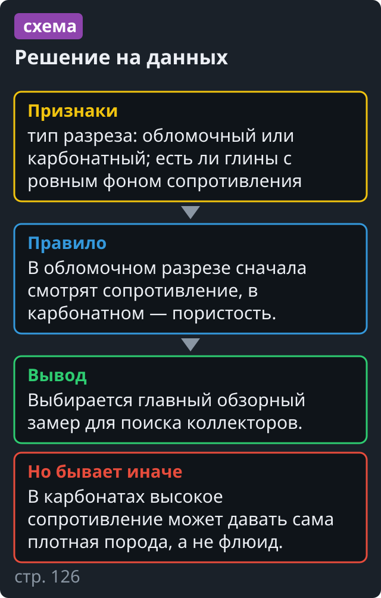
Решение на данных в шаге «Как быстро найти пласты-коллекторы»: признаки, правило, вывод. класс B · схема
Проверь себя
Часть 1 · шаг 3 из 45 · ≈4 мин · формат: практикум на данных
Сколько воды в порах пласта
Archie water saturation Sw. Как формула Арчи даёт водонасыщенность нетронутой зоны.
Почему этот шаг здесь
Коллекторы найдены; главная величина для их оценки — водонасыщенность нетронутой зоны. модельстр. 126, 127
Суть
Водонасыщенность нетронутой зоны считают по формуле Арчи из сопротивлений и пористости. Это самая фундаментальная величина интерпретации. Но одной её мало для оценки продуктивности. модельстр. 126, 127
Как это работает
Механизм
Водонасыщенность (water saturation, Sw) — доля пор, занятая водой. Её для нетронутой зоны (uninvaded zone) считают по формуле Арчи (1942), уравнение 7.1. Нетронутая зона — часть пласта, куда не дошёл фильтрат раствора. модельстр. 126
В формулу входят сопротивление пластовой воды при пластовой температуре (Rw) и истинное сопротивление пласта (Rt). Rt — показание глубокого индукционного или глубокого бокового зонда, исправленное за проникновение. модельстр. 126
Ещё в формулу входят пористость, коэффициент извилистости a, показатель цементации m и показатель насыщенности n. Значения a и m автор берёт из таблицы 1.1 главы 1. модельстр. 126, 127
Sw нетронутой зоны по Арчи — самая фундаментальная величина в оценке по каротажу. модельстр. 127
Как делает специалист
Одного Sw мало, чтобы полностью оценить возможную продуктивность. Геолог должен ещё определить четыре вещи. модельстр. 127
Первое: достаточно ли низка водонасыщенность для заканчивания без воды. Второе: подвижны ли углеводороды. Третье: проницаем ли пласт. Четвёртое: есть ли промышленный объём извлекаемых запасов. модельстр. 127
Нюансы
Sw вычисляют, а не измеряют: прибор даёт сопротивление, а насыщенность выводят по формуле с принятыми a, m, n. модельстр. 126
Формулы
Водонасыщенность нетронутой зоны равна корню степени n из отношения a·Rw к Rt·φ^m. модельстр. 126
Sw — водонасыщенность нетронутой зоны
Rw — сопротивление пластовой воды при пластовой температуре
Rt — истинное сопротивление пласта
φ — пористость
a — коэффициент извилистости
m — показатель цементации
n — показатель насыщенности
Частая ошибка
Если Sw низкое, пласт точно даст нефть.
Что это значит для данных
Sw — расчётная кривая из Rt, Rw, пористости и констант a, m, n. модельстр. 126, 127
Ошибка в Rw или в m переходит в Sw напрямую; низкое Sw ещё не значит подвижную нефть и проницаемость. модельстр. 126, 127
Константы a, m, n стоит хранить как параметры интервала, а не зашивать в расчёт. гипотезамодельстр. 126, 127
Решение на данных
Признаки
низкое ли Sw для заканчивания без воды
подвижны ли углеводороды
проницаем ли пласт
промышленный ли объём запасов
ПравилоПласт оценивают по всем четырём вопросам, а не по одному Sw.ВыводРешение о продуктивности принимают по совокупности.КонтрпримерНизкое Sw в непроницаемом пласте не даёт притока.
Аналогия
Похоже на вычисляемое поле в базе: его считают из других полей по формуле с параметрами. модель
Где аналогия не работает: У поля формула точная, а здесь a, m, n — принятые для породы значения.
Линза неэффективности
Входные данныеRt, Rw, пористость, a, m, nРучные шагиПодставить в уравнение 7.1Точки сужденияКакие a и m взять для породыВремяВ главе не указаноТипичные ошибкиСчитать низкое Sw достаточным для решения
Новые понятия
водонасыщенность (Sw) — Доля пор, занятая водой
нетронутая зона (uninvaded zone) — Часть пласта, куда не дошёл фильтрат раствора
сопротивление пластовой воды (Rw) — Сопротивление воды в порах при пластовой температуре
коэффициент извилистости (a) — Константа формулы Арчи, связанная с путём тока в порах
показатель цементации (m) — Показатель степени при пористости в формуле Арчи
показатель насыщенности (n) — Показатель степени, в которую возводят насыщенность в формуле Арчи
фильтрат раствора — Жидкость бурового раствора, ушедшая в пласт
Источник
5 цитат автора со страницами
наблюдение. Водонасыщенность нетронутой зоны рассчитывают по формуле Арчи (1942). пересказ модели
«Water saturation () of a reservoir's uninvaded zone is calculated by the Archie (1942) formula:» — автор, стр. 126
наблюдение. Rt — показание глубокого индукционного или бокового зонда, исправленное за проникновение. пересказ модели
«true formation resistivity (i.e., deep induction or deep laterolog corrected for invasion)» — автор, стр. 126
наблюдение. Sw нетронутой зоны по Арчи — самая фундаментальная величина оценки по каротажу. пересказ модели
«The uninvaded zone's water saturation (), determined by the Archie equation, is the most fundamental quantity used in log evaluation.» — автор, стр. 127
наблюдение. Знание одного Sw не даёт достаточно информации для полной оценки продуктивности. пересказ модели
«But merely knowing a zone's water saturation () does not provide enough information to completely evaluate a zone's potential productivity.» — автор, стр. 127
наблюдение. Геолог должен проверить: достаточно ли низко Sw, подвижны ли углеводороды, проницаем ли пласт и промышленны ли запасы. пересказ модели
«the water saturation is low enough for a water-free completion
the hydrocarbons are moveable
the zone is permeable
- there is an commercial volume of recoverable hydrocarbon reserves» — автор, стр. 127
Иллюстрации
Место шага «Сколько воды в порах пласта» в главе: на что опирается и куда ведёт. класс B · схема
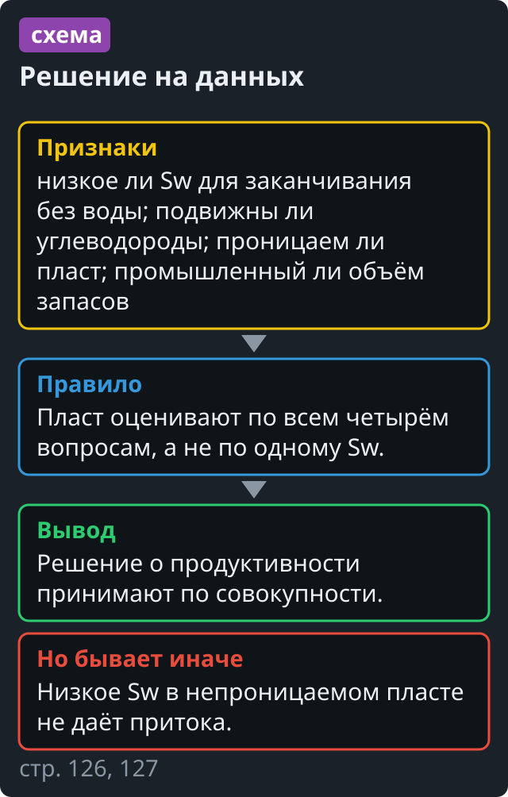
Решение на данных в шаге «Сколько воды в порах пласта»: признаки, правило, вывод. класс B · схема
Проверь себя
Часть 1 · шаг 4 из 45 · ≈4 мин · формат: ролик-разбор
Сколько воды у стенки скважины
Flushed zone water saturation Sxo. Как найти водонасыщенность промытой зоны и что она говорит о подвижности.
Почему этот шаг здесь
Формула Арчи для нетронутой зоны введена; та же формула у стенки показывает, сдвинул ли раствор нефть. модельстр. 127
Суть
Sxo считают по той же формуле Арчи, заменив Rw на Rmf и Rt на Rxo. Если Sxo много больше Sw, углеводороды, вероятно, вытеснены фильтратом. Значит, они подвижны. модельстр. 127
Как это работает
Механизм
Водонасыщенность промытой зоны (flushed zone, Sxo) тоже считают по формуле Арчи, уравнение 7.2. Промытая зона — часть пласта у стенки, куда вошёл фильтрат бурового раствора. модельстр. 127
Меняются две переменные. Вместо Rw — сопротивление фильтрата раствора при пластовой температуре (Rmf). Вместо Rt — сопротивление промытой зоны (Rxo). модельстр. 127
Rxo — неглубокое сопротивление от прибора очень малой глубинности: laterolog-8, микросферически фокусированный зонд или микробоковой зонд. модельстр. 127
Остальное как в формуле для нетронутой зоны: пористость φ, коэффициент a и показатель m из таблицы 1.1 главы 1, показатель n. модельстр. 127
Как делает специалист
Sxo можно использовать как индикатор подвижности углеводородов. модельстр. 127
Например, если Sxo намного больше Sw, углеводороды в промытой зоне, вероятно, вытеснены от стенки проникающим раствором. модельстр. 127
Нюансы
Автор пишет «вероятно» (probably): большое различие Sxo и Sw — признак, а не доказательство вытеснения. модельстр. 127
Формулы
Водонасыщенность промытой зоны равна корню степени n из отношения a·Rmf к Rxo·φ^m. модельстр. 127
Sxo — водонасыщенность промытой зоны
Rmf — сопротивление фильтрата при пластовой температуре
Rxo — сопротивление промытой зоны
φ — пористость
a — коэффициент извилистости
m — показатель цементации
n — показатель насыщенности
Частая ошибка
Раствор у стенки ничего не меняет в пласте, поэтому неглубокий зонд показывает то же, что глубокий.
Что это значит для данных
Sxo — расчётная кривая из Rxo и Rmf; её сравнение с Sw даёт признак подвижности. модельстр. 127
Признак вероятностный: автор пишет «вероятно». модельстр. 127
Разность Sxo − Sw можно строить как отдельную кривую подвижности. гипотезамодельстр. 127
Решение на данных
Признаки
Sxo
Sw
ПравилоЕсли Sxo намного больше Sw, углеводороды в промытой зоне, вероятно, вытеснены.ВыводУглеводороды, вероятно, подвижны.КонтрпримерАвтор пишет «вероятно»: большое различие ещё не доказывает вытеснение.
Аналогия
Похоже на сравнение кэша и основной базы: если кэш сильно отличается, данные в нём перезаписали. модель
Где аналогия не работает: Кэш перезаписывают целиком, а фильтрат вытесняет нефть не полностью.
Новые понятия
промытая зона (flushed zone) — Часть пласта у стенки скважины, куда вошёл фильтрат раствора
водонасыщенность промытой зоны (Sxo) — Доля пор с водой в промытой зоне
сопротивление фильтрата (Rmf) — Сопротивление фильтрата при пластовой температуре
сопротивление промытой зоны (Rxo) — Сопротивление, измеренное зондом очень малой глубинности
Источник
4 цитаты автора со страницами
наблюдение. Sxo тоже основана на уравнении Арчи, но Rw заменяют на Rmf, а Rt — на Rxo. пересказ модели
«Water saturation of a formation's flushed zone () is also based on the Archie equation, but two variables are changed: mud filtrate resistivity () in place of formation water resistivity () and flushed zone resistivity () in place of uninvaded zone resistivity ().» — автор, стр. 127
наблюдение. Rxo берут с прибора очень малой глубинности: laterolog-8, микросферически фокусированного зонда или микробокового зонда. пересказ модели
«shallow resistivity from a very shallow reading device, such as laterolog-8, microspherically focused log, or microlaterolog» — автор, стр. 127
наблюдение. Sxo можно использовать как индикатор подвижности углеводородов. пересказ модели
«Water saturation of the flushed zone () can be used as an *indicator of hydrocarbon moveability*.» — автор, стр. 127
вывод. Если Sxo намного больше Sw, углеводороды, вероятно, вытеснены проникающим раствором. пересказ модели
«For example, if the value of is much larger than , then hydrocarbons in the flushed zone have probably been moved or flushed out of the zone nearest the borehole by the invading drilling fluids ().» — автор, стр. 127
Иллюстрации
Место шага «Сколько воды у стенки скважины» в главе: на что опирается и куда ведёт. класс B · схема
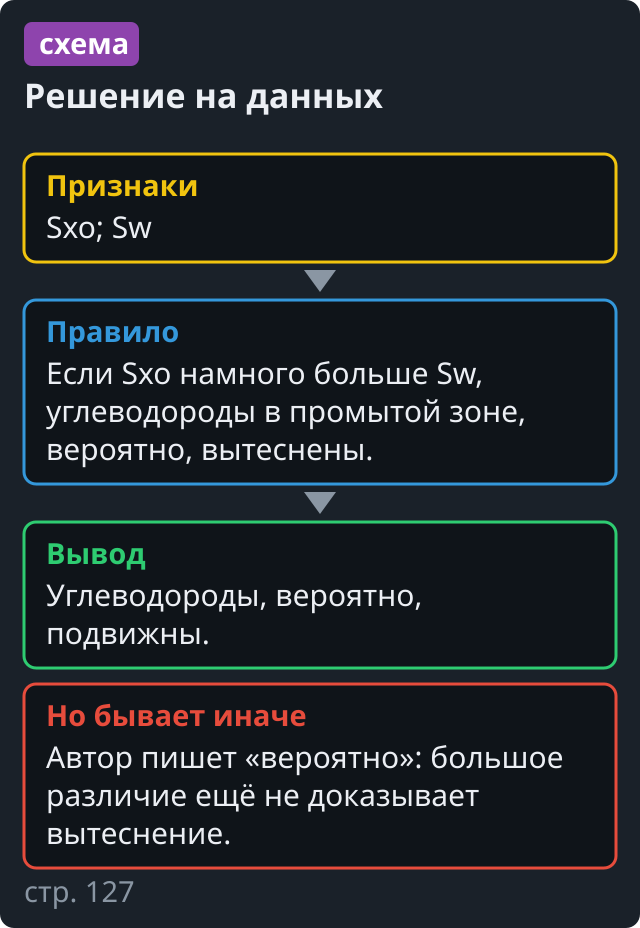
Решение на данных в шаге «Сколько воды у стенки скважины»: признаки, правило, вывод. класс B · схемаАнимация: неглубокий зонд читает промытую зону у стенки, глубокий — нетронутый пласт; фильтрат вытесняет нефть у стенки. 19 с, без звука. класс B · схема · стр. 127; допущения: значения кривых, толщины слоёв и глубина проникновения условные, показано направление изменения; соотношение кривых в нефтеносном пласте условное: в главе нет чисел для этого рисунка
Проверь себя
Часть 1 · шаг 5 из 45 · ≈5 мин · формат: практикум на данных
Подвижность нефти без пористости
Ratio method: moveable hydrocarbon index. Как отношение Sw/Sxo находят по сопротивлениям без пористости.
Почему этот шаг здесь
Sw и Sxo введены; их отношение убирает пористость и даёт индекс подвижности. модельстр. 127
Суть
Если поделить формулу Арчи для нетронутой зоны на формулу для промытой, пористость сокращается. Отношение Sw/Sxo — индекс подвижных углеводородов. Меньше 0.7 в песчаниках или 0.6 в карбонатах — признак подвижной нефти. модельстр. 127
Как это работает
Механизм
Метод отношений (ratio method) находит углеводороды по разнице водонасыщенности промытой и нетронутой зон. Уравнение 7.1 делят на уравнение 7.2 и получают уравнение 7.3. модельстр. 127
В полученной формуле квадрат отношения Sw/Sxo равен отношению Rxo/Rt к Rmf/Rw. Обозначения те же: Rxo с laterolog-8 или микрозондов, Rt глубокого зонда с поправкой, Rmf и Rw при пластовой температуре. модельстр. 127
При делении сокращается параметр пористости (formation factor) F = a/φ^m: он одинаков в обеих формулах. модельстр. 127
Индекс подвижных углеводородов (moveable hydrocarbon index) по методу отношений — уравнение 7.4: Sw/Sxo равно корню квадратному из (Rxo/Rt)/(Rmf/Rw). модельстр. 127
Как делает специалист
По отношению (Rxo/Rt)/(Rmf/Rw) геолог определяет и индекс подвижности, и водонасыщенность методом отношений, не зная пористости. модельстр. 127
Поэтому полезные параметры можно получить, даже если диаграмм пористости нет. модельстр. 127
Если Sw/Sxo равно 1.0 или больше, углеводороды при проникновении не сдвинулись. Это верно независимо от того, есть ли в пласте углеводороды. модельстр. 127
Если Sw/Sxo меньше 0.7 для песчаников или меньше 0.6 для карбонатов, это указывает на подвижные углеводороды (Schlumberger, 1972). модельстр. 127
Нюансы
Индекс опирается на допущение: показатель принят равным 2.0. В книге он назван cementation exponent и обозначен n, хотя n выше — показатель насыщенности. модельстр. 127
Отношение 1.0 и больше не говорит, что углеводородов нет: только что они не сдвинулись. модельстр. 127
Формулы
Квадрат отношения Sw/Sxo равен отношению Rxo/Rt к Rmf/Rw. модельстр. 127
Sw — водонасыщенность нетронутой зоны
Sxo — водонасыщенность промытой зоны
Rxo — неглубокое сопротивление
Rt — истинное сопротивление
Rmf — сопротивление фильтрата
Rw — сопротивление пластовой воды
Индекс подвижных углеводородов равен квадратному корню из (Rxo/Rt)/(Rmf/Rw). модельстр. 127
Sw/Sxo — индекс подвижных углеводородов
Rxo — неглубокое сопротивление
Rt — истинное сопротивление
Rmf — сопротивление фильтрата
Rw — сопротивление пластовой воды
Частая ошибка
Без пористости ничего о насыщении сказать нельзя.
Что это значит для данных
Индекс Sw/Sxo считается только из четырёх сопротивлений, без кривой пористости. модельстр. 127
Индекс 1.0 и больше означает «не сдвинулись», а не «воды нет» или «нефти нет». модельстр. 127
Пороги 0.7 и 0.6 удобно задавать по литологии интервала. гипотезамодельстр. 127
Решение на данных
Признаки
Sw/Sxo
песчаник или карбонат
ПравилоЕсли Sw/Sxo меньше 0.7 в песчаниках или меньше 0.6 в карбонатах — подвижные углеводороды; если 1.0 и больше — не сдвинулись.ВыводОценка подвижности углеводородов без пористости.КонтрпримерSw/Sxo 1.0 и больше бывает и в пласте с углеводородами.
Аналогия
Похоже на нормировку: при делении общий неизвестный множитель сокращается. модель
Где аналогия не работает: В нормировке множитель часто точно общий, а здесь равенство F в двух зонах — допущение.
Новые понятия
метод отношений (ratio method) — Способ находить насыщение по отношению сопротивлений двух зон
индекс подвижных углеводородов (moveable hydrocarbon index) — Отношение Sw/Sxo; меньше порога — нефть подвижна
параметр пористости (formation factor, F) — Величина a/φ^m из формулы Арчи
Источник
6 цитат автора со страницами
наблюдение. Метод отношений находит углеводороды по разнице водонасыщенности промытой и нетронутой зон. пересказ модели
«The ratio method identifies hydrocarbons from the difference between water saturations in the flushed zone () and the uninvaded zone ().» — автор, стр. 127
наблюдение. При делении Sw на Sxo параметр пористости сокращается, так как он одинаков в обеих формулах. пересказ модели
«When is divided by , the formation factor () is cancelled out of the equation because the same formation factor is used to calculate both and .» — автор, стр. 127
вывод. Полезные параметры можно получить, даже когда диаграммы пористости отсутствуют. пересказ модели
«Therefore, a geologist can still derive useful formation evaluation log parameters even though porosity logs are unavailable.» — автор, стр. 127
допущение. Показатель принят равным 2.0. пересказ модели
«The cementation exponent () is assumed to be 2.0» — автор, стр. 127
наблюдение. Если Sw/Sxo равно 1.0 или больше, углеводороды при проникновении не сдвинулись, есть они в пласте или нет. пересказ модели
«If the ratio is equal to or greater than 1.0, then hydrocarbons were not moved during invasion. This is true regardless of whether or not a formation contains hydrocarbons.» — автор, стр. 127
наблюдение. Всякий раз, если Sw/Sxo меньше 0.7 в песчаниках или меньше 0.6 в карбонатах, это указывает на подвижные углеводороды. пересказ модели
«Whenever the ratio is less than 0.7 for sandstones or less than 0.6 for carbonates, moveable hydrocarbons are indicated (Schlumberger, 1972).» — автор, стр. 127
Иллюстрации
Место шага «Подвижность нефти без пористости» в главе: на что опирается и куда ведёт. класс B · схема
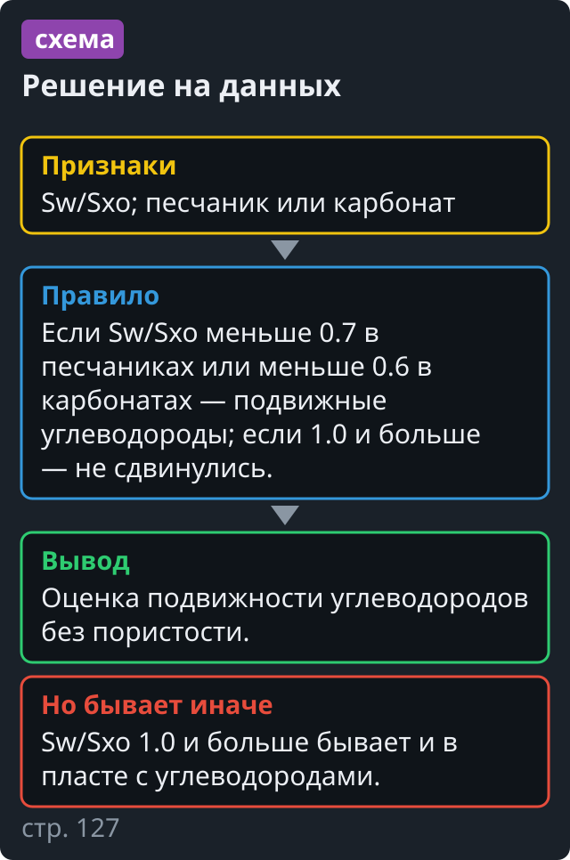
Решение на данных в шаге «Подвижность нефти без пористости»: признаки, правило, вывод. класс B · схема
Проверь себя
Часть 1 · шаг 6 из 45 · ≈4 мин · формат: практикум на данных
Водонасыщенность по отношению сопротивлений
Ratio method water saturation Swr. Как получить Swr и сравнить его с Sw по Арчи.
Почему этот шаг здесь
Индекс подвижности есть; при допущении о промытой зоне из него получают саму водонасыщенность. модельстр. 127, 128
Суть
Нужно знать Sxo; при умеренном проникновении обычно берут Sxo = Sw^(1/2). Тогда Swr — отношение сопротивлений в степени 0.625. Сравнение Swa и Swr проверяет допущения. модельстр. 127, 128
Как это работает
Механизм
Чтобы найти водонасыщенность методом отношений (Swr), нужно знать водонасыщенность промытой зоны. модельстр. 127, 128
В промытой зоне пластов с умеренным проникновением и средней остаточной нефтенасыщенностью обычно хорошо работает уравнение 7.5: Sxo равно Sw в степени 1/2. модельстр. 128
Подставив 7.5 в 7.4 и решив для Sw, получают уравнение 7.6: Swr равно (Rxo/Rt)/(Rmf/Rw) в степени 5/8. То же в десятичном виде — степень 0.625, уравнение 7.7. модельстр. 128
Переменные Rxo, Rt, Rmf, Rw те же, что в методе отношений. модельстр. 128
Как делает специалист
В интерпретации водонасыщенность нетронутой зоны считают двумя способами: по Арчи (Swa) и методом отношений (Swr). Затем их сравнивают. модельстр. 128
Если Swa примерно равно Swr, подтверждается допущение о ступенчатом профиле проникновения (step-contact). Тогда все найденные значения Sw, Rt, Rxo и di верны. модельстр. 128
Нюансы
Связь Sxo с Sw автор даёт с оговоркой: оно «обычно хорошо работает» (normally works well) при умеренном проникновении и средней остаточной нефтенасыщенности. модельстр. 128
В расшифровке последней формулы Swr назван «moveable hydrocarbon index», хотя по выводу это водонасыщенность методом отношений. Похоже на опечатку книги. модельстр. 128
Формулы
Водонасыщенность промытой зоны равна квадратному корню из Sw (при умеренном проникновении). модельстр. 128
Sxo — водонасыщенность промытой зоны
Sw — водонасыщенность нетронутой зоны
Водонасыщенность методом отношений равна (Rxo/Rt)/(Rmf/Rw) в степени 5/8. модельстр. 128
Swr — водонасыщенность методом отношений
Rxo — неглубокое сопротивление
Rt — истинное сопротивление
Rmf — сопротивление фильтрата
Rw — сопротивление пластовой воды
То же, степень записана десятичной дробью 0.625. модельстр. 128
Swr — водонасыщенность методом отношений
Rxo — неглубокое сопротивление
Rt — истинное сопротивление
Rmf — сопротивление фильтрата
Rw — сопротивление пластовой воды
Частая ошибка
Два способа расчёта Sw должны всегда совпадать, иначе ошибка в расчёте.
Что это значит для данных
Swr считается из четырёх сопротивлений без пористости, Swa — по Арчи с пористостью. модельстр. 127, 128
Совпадение Swa и Swr — проверка допущений, а не самих чисел; при другом профиле проникновения они расходятся. модельстр. 127, 128
Расхождение Swa и Swr можно хранить как флаг качества интерпретации. гипотезамодельстр. 127, 128
Решение на данных
Признаки
Swa
Swr
ПравилоЕсли Swa примерно равно Swr, профиль проникновения ступенчатый и значения верны.ВыводИнтерпретация подтверждена.КонтрпримерДругие случаи сравнения разобраны в следующей порции.
Аналогия
Похоже на сверку двух независимых расчётов одной метрики: совпали — допущения, вероятно, верны. модель
Где аналогия не работает: В ИТ расчёты обычно точные, а здесь 7.5 — эмпирическое правило с оговорками.
Линза неэффективности
Входные данныеRxo, Rt, Rmf, Rw, пористостьРучные шагиПосчитать Swa и Swr, сравнитьТочки сужденияНасколько близкими считать Swa и SwrВремяВ главе не указаноТипичные ошибкиПрименять 7.5 при глубоком проникновении
Новые понятия
водонасыщенность методом отношений (Swr) — Sw, найденная из отношения сопротивлений без пористости
Swa — Sw нетронутой зоны по формуле Арчи
остаточная нефтенасыщенность — Доля пор с нефтью, которую фильтрат не вытеснил
ступенчатый профиль проникновения (step-contact) — Модель, где промытая зона резко сменяется нетронутой
Источник
5 цитат автора со страницами
наблюдение. Для водонасыщенности методом отношений нужно знать водонасыщенность промытой зоны. пересказ модели
«To determine water saturation by the ratio method» — автор, стр. 127
допущение. При умеренном проникновении и средней остаточной нефтенасыщенности обычно хорошо работает простая связь Sxo с Sw. пересказ модели
«In the flushed zone of formations with moderate invasion and average residual hydrocarbon saturation, the following relationship normally works well:» — автор, стр. 128
наблюдение. Подстановка 7.5 в 7.4 и решение для Sw дают водонасыщенность методом отношений Swr. пересказ модели
«Substituting Equation 7.5 in Equation 7.4 and solving for , the ratio method water saturation () is:» — автор, стр. 128
наблюдение. Водонасыщенность нетронутой зоны надо считать и по Арчи (Swa), и методом отношений (Swr). пересказ модели
«To use the ratio method in an interpretation process, the water saturation of the uninvaded zone should be calculated by both the Archie equation () and the ratio method ().» — автор, стр. 128
вывод. Если Swa примерно равно Swr, допущение о ступенчатом профиле верно и найденные значения верны. пересказ модели
«1. If , the assumption of a step-contact invasion profile is indicated to be correct, and all values determined (, , , and ) are correct.» — автор, стр. 128
Иллюстрации
Место шага «Водонасыщенность по отношению сопротивлений» в главе: на что опирается и куда ведёт. класс B · схема
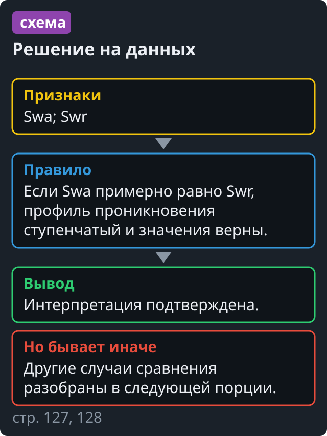
Решение на данных в шаге «Водонасыщенность по отношению сопротивлений»: признаки, правило, вывод. класс B · схема
Часть 1 · шаг 7 из 45 · ≈4 мин · формат: практикум на данных
Что значит расхождение двух Sw
Comparing Swa and Swr. Как читать случаи, когда Swa больше или меньше Swr.
Почему этот шаг здесь
Совпадение Swa и Swr уже разобрано; расхождение подсказывает, какое сопротивление искажено и какой профиль проникновения. модельстр. 128
Суть
Если Swa больше Swr, отношение Rxo/Rt занижено, и Swa считают хорошим значением. Если Swa меньше Swr, отношение завышено; тогда Sw уточняют поправочной формулой. Меньшее Swa бывает и в карбонатах с моульдовой пористостью. модельстр. 128
Как это работает
Механизм
Случай 2: Swa больше Swr. Значит, Rxo/Rt слишком мало. Rxo занижено из-за очень неглубокого проникновения, или Rt завышено из-за очень глубокого. модельстр. 128
Ещё это может указывать на переходный профиль проникновения (transition). Тогда Swa считают хорошим значением реальной водонасыщенности. модельстр. 128
Случай 3: Swa меньше Swr. Значит, Rxo/Rt слишком велико. Rxo завышено из-за соседних высокоомных пластов, или Rt по глубокому зонду занижено, потому что Rxo меньше Rt. модельстр. 128
Ещё это может указывать на кольцевой профиль проникновения (annulus) и/или на то, что Sxo меньше, чем даёт формула связи Sxo и Sw. модельстр. 128
Как делает специалист
В случае 3 более точную водонасыщенность можно оценить по формуле Schlumberger (1977), уравнение 7.8. Исправленное Sw равно Swa, умноженному на (Swa/Swr) в степени 0.25. модельстр. 128
Случай 4: если Swa меньше Swr, коллектор может быть карбонатом с моульдовой пористостью (oomoldic, fossil-moldic) и низкой проницаемостью. модельстр. 128
Нюансы
Все выводы автор даёт с оговорками: «might be indicated», «might be». Расхождение — подсказка, а не диагноз. модельстр. 128
Формулы
Исправленная водонасыщенность нетронутой зоны равна Swa, умноженному на (Swa/Swr) в степени 0.25. модельстр. 128
(Sw)COR — исправленная водонасыщенность нетронутой зоны
Swa — водонасыщенность нетронутой зоны по Арчи
Swr — водонасыщенность нетронутой зоны методом отношений
Частая ошибка
Если два расчёта Sw расходятся, один из них просто неверен, и его отбрасывают.
Что это значит для данных
Знак разности Swa − Swr указывает, какое сопротивление вероятно искажено и какой профиль проникновения. модельстр. 128
Случаи 3 и 4 дают один и тот же признак Swa меньше Swr с разными причинами. модельстр. 128
Знак разности можно хранить как категорию для последующей проверки специалистом. гипотезамодельстр. 128
Решение на данных
Признаки
Swa
Swr
ПравилоSwa больше Swr — Rxo/Rt занижено, берут Swa; Swa меньше Swr — Rxo/Rt завышено, Sw исправляют формулой, либо это карбонат с моульдовой пористостью.ВыводВыбор значения водонасыщенности и подсказка о профиле проникновения.КонтрпримерSwa меньше Swr может давать порода, а не искажённый замер.
Аналогия
Похоже на расхождение двух мониторингов: знак расхождения подсказывает, какой датчик врёт. модель
Где аналогия не работает: Здесь одинаковый знак бывает и от искажения замера, и от особой пористости породы.
Линза неэффективности
Входные данныеSwa, SwrРучные шагиСравнить и выбрать случайТочки сужденияКакой профиль проникновения принятьВремяВ главе не указаноТипичные ошибкиЗабыть про карбонаты с моульдовой пористостью
Новые понятия
переходный профиль проникновения (transition) — Модель, где сопротивление плавно меняется от промытой зоны к нетронутой
кольцевой профиль проникновения (annulus) — Модель с кольцом между промытой и нетронутой зонами
моульдовая пористость (moldic) — Пустоты на месте растворённых зёрен или остатков организмов
Источник
5 цитат автора со страницами
вывод. Если Swa больше Swr, отношение Rxo/Rt слишком мало: проникновение очень неглубокое или очень глубокое. пересказ модели
«2. If , then the value for is too low.» — автор, стр. 128
вывод. При Swa больше Swr может указываться переходный профиль, и Swa считают хорошим значением водонасыщенности. пересказ модели
«Also, a transition-type invasion profile might be indicated and is considered a good value for the zone's actual water saturation.» — автор, стр. 128
вывод. Если Swa меньше Swr, отношение Rxo/Rt слишком велико: влияют соседние высокоомные пласты или Rt занижено. пересказ модели
«3. If , then the value for is too high.» — автор, стр. 128
вывод. При Swa меньше Swr может указываться кольцевой профиль проникновения. пересказ модели
«Also, an annulus-type invasion profile might be indicated and/or (from Equation 7.5).» — автор, стр. 128
вывод. Если Swa меньше Swr, коллектор может быть карбонатом с моульдовой пористостью и низкой проницаемостью. пересказ модели
«4. If , the reservoir might be a carbonate with moldic (i.e., oomoldic, fossil-moldic, etc.) porosity and low permeability.» — автор, стр. 128
Иллюстрации
Место шага «Что значит расхождение двух Sw» в главе: на что опирается и куда ведёт. класс B · схема
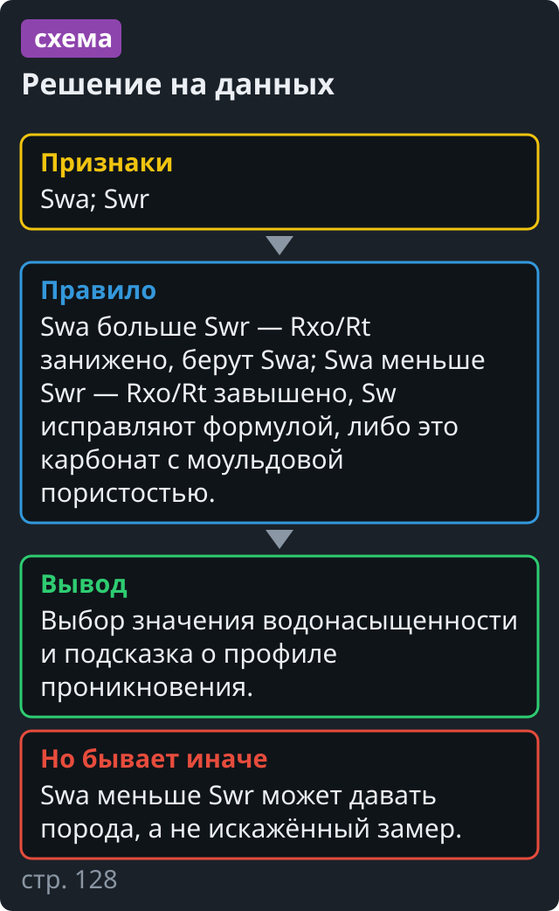
Решение на данных в шаге «Что значит расхождение двух Sw»: признаки, правило, вывод. класс B · схема
Проверь себя
Часть 1 · шаг 8 из 45 · ≈2 мин · формат: практикум на данных
Быстрые флажки на нефть
Quick-look methods: general. Что такое экспресс-методы и какие четыре разобраны.
Почему этот шаг здесь
Полный расчёт трудоёмок; экспресс-методы сначала отмечают, где стоит считать. модельстр. 128
Суть
Экспресс-методы дают флажки — указатели возможных зон с углеводородами. Такие зоны требуют дальнейшего изучения. Разобраны четыре метода. модельстр. 128
Как это работает
Механизм
Экспресс-методы (quick-look) полезны: они дают флажки, или индикаторы, возможных зон с углеводородами, которые требуют дальнейшего изучения. модельстр. 128
Как делает специалист
Четыре метода: отношение Rxo/Rt, кажущееся сопротивление воды (Rwa), пористость по проводимости и сопротивление водоносного пласта (Ro). модельстр. 128
Нюансы
Флажок указывает на возможную зону, а не доказывает углеводороды: зона требует дальнейшего изучения. модельстр. 128
Частая ошибка
Экспресс-метод сам говорит, есть ли нефть.
Что это значит для данных
Экспресс-методы дают бинарные или сравнительные флажки по глубине. модельстр. 128
Флажок — повод для изучения, а не итоговая метка. модельстр. 128
Флажки разных методов можно сводить в одну таблицу по глубине. гипотезамодельстр. 128
Аналогия
Похоже на алерты мониторинга: они показывают, куда смотреть, но не ставят диагноз. модель
Где аналогия не работает: Алерты настраивают по истории, а здесь пороги зависят от пласта.
Новые понятия
флажок (flag) — Отметка на диаграмме, указывающая на возможную зону с углеводородами
сопротивление водоносного пласта (Ro) — Сопротивление того же пласта, если бы поры были полностью заполнены водой
кажущееся сопротивление воды (Rwa) — Сопротивление воды, рассчитанное так, будто пласт полностью водоносный
Источник
2 цитаты автора со страницами
наблюдение. Экспресс-методы дают флажки возможных зон с углеводородами, требующих дальнейшего изучения. пересказ модели
«Quick-look methods are helpful to the geologist because they provide flags, or indicators, that point to possible hydrocarbon zones requiring further investigation.» — автор, стр. 128
наблюдение. Разобраны четыре экспресс-метода: Rxo/Rt, Rwa, пористость по проводимости и Ro. пересказ модели
«The four quick-look methods discussed here are:» — автор, стр. 128
Иллюстрации
Место шага «Быстрые флажки на нефть» в главе: на что опирается и куда ведёт. класс B · схема
Часть 2 · шаг 9 из 45 · ≈3 мин · формат: практикум на данных
Отношение Rxo/Rt рядом с ПС
Rxo/Rt quick-look: procedure and patterns. Как строят кривую Rxo/Rt и какие картины ищут.
Почему этот шаг здесь
Первый экспресс-метод: кривая отношения сопротивлений сравнивается с кривой ПС. модельстр. 128, 129
Суть
Rxo/Rt рисуют в той же дорожке, что ПС. В воде отношение повторяет ПС. В зоне с углеводородами оно уходит от ПС. модельстр. 128, 129
Как это работает
Механизм
Метод Rxo/Rt сравнивает отношение сопротивлений, построенное кривой на диаграмме, с кривой ПС (SP). ПС — собственная разность потенциалов в скважине. модельстр. 128
Шаг 1: рассчитать Rxo/Rt по глубокому и неглубокому замерам сопротивления. Шаг 2: построить отношение в той же дорожке, что ПС, и искать картины. модельстр. 128
Как делает специалист
В глине отношение относительно постоянно, как ПС, и обычно близко к 1. модельстр. 128
В водоносной зоне Rxo/Rt повторяет ПС. модельстр. 128
В зоне с углеводородами Rxo/Rt уходит от ПС: при нормальной (отрицательной) ПС — отклонение вправо. модельстр. 128
Rxo для отношения обычно берут с неглубокого зонда: микросферически фокусированного или микробокового. Rt — с глубокого индукционного или глубокого бокового. модельстр. 129
Нюансы
На практике, особенно когда отношение считают во время каротажа, замеры обычно берут без поправок за условия в скважине. модельстр. 129
Частая ошибка
Кривые сопротивления сами по себе показывают нефть без сравнения с другими.
Что это значит для данных
Признак — расхождение двух кривых в одной дорожке: Rxo/Rt и ПС. модельстр. 128, 129
Замеры часто без поправок, поэтому отношение искажено влиянием скважины. модельстр. 128, 129
Расхождение кривых можно считать численно после нормировки к линиям глин. гипотезамодельстр. 128, 129
Решение на данных
Признаки
ход Rxo/Rt относительно ПС
ПравилоПовторяет ПС — вода; уходит от ПС — углеводороды; постоянно около 1 — глина.ВыводФлажок возможной зоны с углеводородами.КонтрпримерБез поправок за скважину отношение может быть искажено.
Аналогия
Похоже на две метрики, которые обычно движутся вместе; расхождение — сигнал. модель
Где аналогия не работает: Метрики можно нормировать точно, а здесь базовые линии выбирают по глинам.
Линза неэффективности
Входные данныеГлубокий и неглубокий замеры сопротивления, ПСРучные шагиПостроить отношение рядом с ПСТочки сужденияНасколько отклонение значимоВремяВ главе не указаноТипичные ошибкиЗабывают, что замеры без поправок
Новые понятия
ПС (SP) — Кривая собственной разности потенциалов в скважине
дорожка (track) — Полоса на диаграмме, где рисуют кривые
Источник
5 цитат автора со страницами
наблюдение. Метод Rxo/Rt сравнивает кривую отношения сопротивлений с кривой ПС. пересказ модели
«The technique relies on the comparison of the resistivity ratio, plotted as a curve on the log display, to the SP curve.» — автор, стр. 128
наблюдение. В глине отношение относительно постоянно и обычно близко к 1. пересказ модели
«1. In a shale, the ratio is relatively constant, like the SP, and usually close to 1.» — автор, стр. 128
наблюдение. В водоносной зоне Rxo/Rt повторяет ПС. пересказ модели
«2. In a water-bearing zone, the ratio tracks the SP.» — автор, стр. 128
наблюдение. В зоне с углеводородами Rxo/Rt уходит от ПС. пересказ модели
«3. In a hydrocarbon-bearing zone, the ratio moves away from the SP [a deflection to the right for the case of a normal (negative) SP].» — автор, стр. 128
наблюдение. На практике, особенно во время каротажа, замеры обычно берут без поправок за условия в скважине. пересказ модели
«In practice, especially when the ratio is calculated and displayed as part of the logging job, the measurements are normally used without any environmental corrections being applied.» — автор, стр. 129
Иллюстрации
Место шага «Отношение Rxo/Rt рядом с ПС» в главе: на что опирается и куда ведёт. класс B · схема
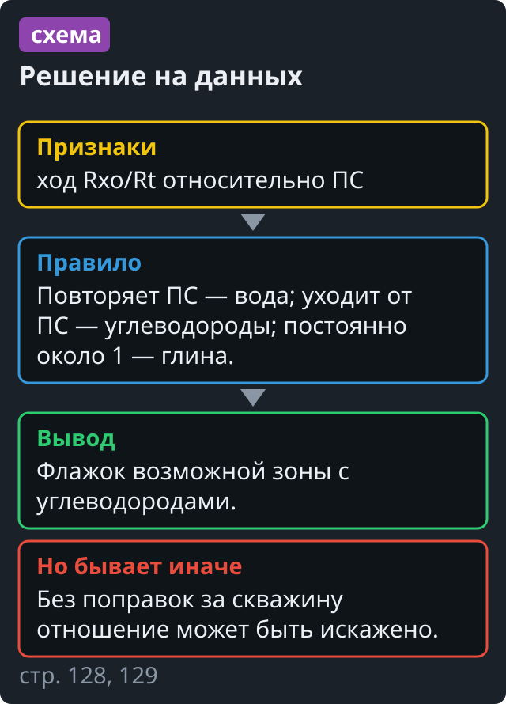
Решение на данных в шаге «Отношение Rxo/Rt рядом с ПС»: признаки, правило, вывод. класс B · схема
Проверь себя
Часть 2 · шаг 10 из 45 · ≈3 мин · формат: интерактив
Почему Rxo/Rt похоже на ПС
Why Rxo/Rt follows the SP. Как формула ПС связывает её с отношением сопротивлений.
Почему этот шаг здесь
Картины метода разобраны; основание объясняет, почему вода даёт параллельность, а нефть — расхождение. модельстр. 129
Суть
ПС зависит от логарифма Rmf/Rw. В водоносном пласте это то же, что Rxo/Ro, а Ro — частный случай Rt. Углеводороды повышают Rt, и отношение уходит от ПС. модельстр. 129
Как это работает
Механизм
Из главы 2: ПС равна минус K, умноженному на логарифм Rmf/Rw, уравнение 7.9. модельстр. 129
В водоносных зонах Rxo равно F·Rmf (промытая зона), а Ro равно F·Rw (нетронутая зона). Ro — сопротивление водоносного пласта (wet resistivity). модельстр. 129
Выразив Rmf и Rw и подставив в формулу ПС, получают: ПС равна минус K на логарифм Rxo/Ro, уравнение 7.12. модельстр. 129
Значит, Rxo/Ro связано с ПС через константу. Ro — частный случай Rt: сопротивление нетронутого водоносного пласта. Поэтому в общем случае Ro заменяют на Rt. модельстр. 129
Как делает специалист
В водоносных интервалах Rxo/Rt идёт параллельно ПС, и обе кривые сдвигаются в одну сторону от своих базовых линий. модельстр. 129
В интервале с углеводородами ПС по-прежнему отвечает на разницу сопротивлений пластовой воды и фильтрата. А Rxo/Rt падает из-за роста Rt и уходит от ПС. модельстр. 129
Нюансы
В тексте вывода ссылки на номера уравнений не совпадают с формулами рядом. Похоже на опечатку книги. модельстр. 129
Формулы
ПС пропорциональна логарифму отношения Rmf к Rw с минусом. модельстр. 129
SP — собственная разность потенциалов
K — константа
Rmf — сопротивление фильтрата
Rw — сопротивление пластовой воды
В водоносной промытой зоне Rxo равно параметру пористости, умноженному на Rmf. модельстр. 129
Rxo — сопротивление промытой зоны
F — параметр пористости
Rmf — сопротивление фильтрата
В водоносной нетронутой зоне Ro равно параметру пористости, умноженному на Rw. модельстр. 129
Ro — сопротивление водоносного пласта
F — параметр пористости
Rw — сопротивление пластовой воды
ПС пропорциональна логарифму отношения Rxo к Ro с минусом. модельстр. 129
SP — собственная разность потенциалов
K — константа
Rxo — сопротивление промытой зоны
Ro — сопротивление водоносного пласта
Частая ошибка
ПС меняется из-за нефти так же, как сопротивление.
Что это значит для данных
ПС отвечает на соотношение вод, а Rxo/Rt — ещё и на углеводороды; расхождение и есть сигнал. модельстр. 129
Связь через константу K верна для водоносного пласта; в общем случае Ro заменяют на Rt. модельстр. 129
Параллельность кривых можно проверять корреляцией в скользящем окне. гипотезамодельстр. 129
Аналогия
Похоже на две метрики от одной причины: пока причина одна, они синхронны; вторая причина их разводит. модель
Где аналогия не работает: Метрики обычно линейны, а здесь ПС связана с логарифмом отношения.
Новые понятия
базовая линия — Уровень кривой напротив глин, от которого отсчитывают отклонение
Источник
4 цитаты автора со страницами
наблюдение. Отношение Rxo/Ro связано с ПС через константу. пересказ модели
«The ratio is then related to the SP through a constant.» — автор, стр. 129
вывод. Ro — частный случай Rt, поэтому в общем случае Rt подставляют вместо Ro. пересказ модели
«Since is just a special case of ( is the resistivity in the undisturbed, water-bearing zone), can be substituted for for the more general case.» — автор, стр. 129
наблюдение. В водоносных интервалах Rxo/Rt идёт параллельно ПС, обе кривые смещаются в одну сторону. пересказ модели
«In water-bearing intervals, the ratio parallels the response of the SP, and both curves move in the same direction from their respective baseline values.» — автор, стр. 129
наблюдение. В интервале с углеводородами Rxo/Rt падает из-за роста Rt и уходит от ПС. пересказ модели
«In a hydrocarbon-bearing interval, while the SP still responds to the differences in connate water and mud filtrate resistivities and moves accordingly, the ratio decreases (because of increasing ) and the curve moves away from the SP.» — автор, стр. 129
Иллюстрации
Место шага «Почему Rxo/Rt похоже на ПС» в главе: на что опирается и куда ведёт. класс B · схема
Часть 2 · шаг 11 из 45 · ≈4 мин · формат: практикум на данных
Кажущееся сопротивление воды
Apparent water resistivity Rwa: procedure and pitfalls. Как по минимуму Rwa найти воду и флажки углеводородов.
Почему этот шаг здесь
Второй экспресс-метод: сравнивают рассчитанное сопротивление воды между интервалами. модельстр. 129
Суть
Rwa считают из пористости и Rt. Наименьшее Rwa в пористом проницаемом пласте ближе всего к Rw. Rwa выше минимума — вероятно, есть углеводороды. модельстр. 129
Как это работает
Механизм
Метод Rwa сравнивает рассчитанные значения сопротивления воды между интервалами скважины. Сравнивают разные зоны или одну зону, если в ней подозревают контакт воды и углеводородов. модельстр. 129
Допущение: наименьшее Rwa ближе всего к истинному Rw, а Rwa больше минимума указывает на углеводороды. По Rwa можно рассчитать и водонасыщенность. модельстр. 129
Как делает специалист
Шаг 1: рассчитать кажущееся сопротивление воды (Rwa) по пористости и сопротивлению нетронутой зоны. модельстр. 129
Шаг 2: найти наименьшее Rwa в пористой и проницаемой зоне и сравнить с Rwa других зон. Шаг 3: при желании рассчитать водонасыщенность по Арчи из Rwa. модельстр. 129
Картины: зона с наименьшим Rwa вероятнее всего водоносная, её Rwa ближе всего к Rw. Зоны с Rwa больше минимума, вероятно, имеют некоторую нефтегазонасыщенность. модельстр. 129
Нюансы
Первая ловушка: Rw в сравниваемых зонах принимают одинаковым. модельстр. 129
Вторая ловушка: в низкопористых зонах (пористость меньше примерно 10%) Rwa ниже настоящего Rw. модельстр. 129
Частая ошибка
Сопротивление воды одинаково везде, и минимум Rwa всегда равен Rw.
Что это значит для данных
Rwa — расчётная кривая; минимум по пористым проницаемым зонам служит оценкой Rw. модельстр. 129
При пористости меньше примерно 10% Rwa занижено, и минимум может оказаться в плотном пласте. модельстр. 129
Минимум Rwa стоит искать только по интервалам выше порога пористости. гипотезамодельстр. 129
Решение на данных
Признаки
Rwa зоны
минимальное Rwa
пористость зоны
ПравилоНаименьшее Rwa — вероятно вода и оценка Rw; Rwa выше минимума — вероятно углеводороды.ВыводФлажки зон с углеводородами.КонтрпримерВ зоне с пористостью меньше примерно 10% Rwa ниже Rw, и минимум ложный.
Аналогия
Похоже на калибровку по самому «чистому» образцу: минимум принимают за эталон. модель
Где аналогия не работает: Эталон здесь не проверен: самая низкая зона может тоже содержать углеводороды.
Линза неэффективности
Входные данныеПористость, RtРучные шагиРассчитать Rwa, найти минимум, сравнить зоныТочки сужденияОдинаково ли Rw в сравниваемых зонахВремяВ главе не указаноТипичные ошибкиБрать минимум в низкопористой зоне
Новые понятия
контакт воды и углеводородов — Граница в пласте, ниже которой вода, выше — нефть или газ
Источник
6 цитат автора со страницами
наблюдение. Метод Rwa сравнивает рассчитанные значения сопротивления воды между интервалами скважины. пересказ модели
«The technique relies on the comparison of calculated values of water resistivity between intervals in a well.» — автор, стр. 129
допущение. Принимают, что наименьшее Rwa ближе всего к истинному Rw, а большие значения указывают на углеводороды. пересказ модели
«The assumption is that this lowest value of is the closest approximation to the true formation water resistivity () and that values of greater than the minimum value are indicative of the presence of hydrocarbons.» — автор, стр. 129
вывод. Зона с наименьшим Rwa, вероятно, водоносная (most likely). пересказ модели
«1. The zone with the lowest value of is the most likely to be water-bearing, and the value of is closest to the actual value of in the formation.» — автор, стр. 129
вывод. Зоны с Rwa больше минимума, вероятно, имеют некоторую нефтегазонасыщенность. пересказ модели
«2. Zones with values of greater than the minimum observed are likely to have some hydrocarbon saturation.» — автор, стр. 129
допущение. Rw в сравниваемых зонах принимают одинаковым. пересказ модели
«The values in the zones that are compared are assumed to be the same.» — автор, стр. 129
наблюдение. В зонах с пористостью меньше примерно 10% Rwa ниже настоящего Rw. пересказ модели
«In low-porosity zones (less than about 10% porosity), the value is lower than the actual value.» — автор, стр. 129
Иллюстрации
Место шага «Кажущееся сопротивление воды» в главе: на что опирается и куда ведёт. класс B · схема
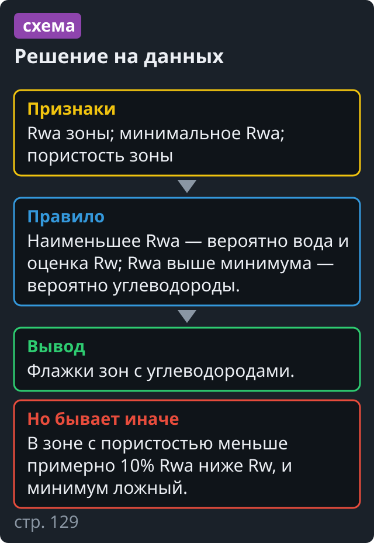
Решение на данных в шаге «Кажущееся сопротивление воды»: признаки, правило, вывод. класс B · схема
Проверь себя
Часть 2 · шаг 12 из 45 · ≈4 мин · формат: интерактив
Откуда берётся формула Rwa
Rwa: basis for the technique. Как Rwa выводят из Ro = F·Rw и что используют на практике.
Rw выражают из Ro и пористости. Если вместо Ro подставить Rt, получают Rwa. В воде Rwa равно Rw, а с углеводородами — больше. модельстр. 129, 130
Как это работает
Механизм
Из главы 1: Ro равно F·Rw, а F равно a/φ^m. модельстр. 129
Объединив их и решив для Rw, получают: Rw равно Ro·φ^m/a. модельстр. 129
Отсюда кажущееся сопротивление воды: Rwa равно Rt·φ^m/a. модельстр. 129
Если зона водоносная, Rt становится равным Ro, и Rwa равно Rw. Если в зоне углеводороды, Rt больше Ro, и Rwa больше Rw. модельстр. 129
Как делает специалист
Сравнивают несколько зон или глубины одной зоны, где подозревают контакт. Зону с наименьшим Rwa принимают водоносной, и её Rwa служит оценкой Rw для всех зон. модельстр. 129
На практике, особенно при расчёте кривой во время каротажа, для простоты берут a = 1.0, m = 2.0. Rt — глубокий индукционный или глубокий боковой зонд, обычно без поправок за условия. модельстр. 130
Пористость обычно берут по акустическому или плотностному каротажу с правильными параметрами матрицы и флюида. Если в реальном времени доступна пористость по кроссплоту нейтрон-плотность, её следует использовать как лучшую оценку. модельстр. 130
Нюансы
Если зона с минимальным Rwa на деле содержит углеводороды, другие зоны содержат их ещё больше, чем ожидалось. модельстр. 129, 130
Формулы
Сопротивление водоносного пласта равно параметру пористости, умноженному на Rw. модельстр. 129
Ro — сопротивление водоносного пласта
F — параметр пористости
Rw — сопротивление пластовой воды
Параметр пористости равен a, делённому на пористость в степени m. модельстр. 129
F — параметр пористости
a — коэффициент извилистости
φ — пористость
m — показатель цементации
Rw равно Ro, умноженному на φ^m и делённому на a. модельстр. 129
Rw — сопротивление пластовой воды
Ro — сопротивление водоносного пласта
φ — пористость
m — показатель цементации
a — коэффициент извилистости
Кажущееся сопротивление воды равно Rt, умноженному на φ^m и делённому на a. модельстр. 129
Rwa — кажущееся сопротивление воды
Rt — истинное сопротивление
φ — пористость
m — показатель цементации
a — коэффициент извилистости
Частая ошибка
Если минимальное Rwa взято в зоне с нефтью, метод бесполезен.
Что это значит для данных
Rwa = Rt·φ^m/a — та же формула для Rw, но с Rt вместо Ro. модельстр. 129, 130
Упрощённые a, m и Rt без поправок делают Rwa грубой оценкой. модельстр. 129, 130
Для расчёта Rwa стоит хранить, какая пористость использована: акустика, плотность или кроссплот. гипотезамодельстр. 129, 130
Аналогия
Похоже на «обратный расчёт» параметра в предположении, что система в эталонном состоянии. модель
Где аналогия не работает: Если предположение неверно, отклонение и есть полезный сигнал.
Новые понятия
кроссплот нейтрон-плотность — Пористость по совместному графику нейтронного и плотностного каротажа
матрица — Твёрдая часть породы без пор
Источник
6 цитат автора со страницами
наблюдение. Если зона водоносная, Rwa равно Rw; если в ней углеводороды, Rt больше Ro и Rwa больше Rw. пересказ модели
«When a given zone is water bearing, reverts to the water-bearing resistivity () and equals .» — автор, стр. 129
допущение. Если принять зону с наименьшим Rwa водоносной, её Rwa используют как оценку Rw для всех зон. пересказ модели
«By comparing a number of zones (or different depths in the same zone, where a water-hydrocarbon contact is suspected) and assuming the zone with the lowest value of is wet, the minimum value of can be used as an estimate for the value of in all the zones being considered.» — автор, стр. 129
вывод. Если зона с минимальным Rwa на деле содержит некоторые углеводороды, другие зоны содержат их ещё больше. пересказ модели
«some hydrocarbons, then the other zones contain even more hydrocarbons than anticipated.» — автор, стр. 130
допущение. На практике, особенно когда кривую считают при каротаже, для простоты берут a = 1.0, m = 2.0. пересказ модели
«In practice, especially when calculated and displayed as a curve during a logging job, the following values are used for simplicity: , .» — автор, стр. 130
наблюдение. Rt берут с глубокого индукционного или бокового зонда, обычно без поправок за условия. пересказ модели
«The deep induction log or deep laterolog is used as , usually without any environmental corrections.» — автор, стр. 130
наблюдение. Если доступна пористость по кроссплоту нейтрон-плотность, её следует использовать как лучшую оценку. пересказ модели
«If available in real time during logging, the neutron-density crossplot porosity should be used for the best estimate of porosity.» — автор, стр. 130
Иллюстрации
Место шага «Откуда берётся формула Rwa» в главе: на что опирается и куда ведёт. класс B · схема
Часть 2 · шаг 13 из 45 · ≈3 мин · формат: практикум на данных
Водонасыщенность по двум Rwa
Water saturation from Rwa ratio. Как по отношению Rwa оценить Sw и быстрые соответствия.
Почему этот шаг здесь
Минимум Rwa найден; отношение Rwa зоны к минимуму сразу даёт Sw. модельстр. 130
Суть
Sw равна квадратному корню из отношения минимального Rwa к Rwa зоны. Для быстрого просмотра есть готовые соответствия: 3 даёт 0.58, 4 — 0.50, 5 — 0.45. модельстр. 130
Как это работает
Механизм
Водонасыщенность по Арчи можно рассчитать и из отношения значений Rwa, уравнение 7.17: Sw — корень из Rwa минимального, делённого на Rwa зоны. модельстр. 130
Показатель в этой формуле принят равным 2. В книге он снова назван cementation exponent (n). модельстр. 130
Как делает специалист
Как подспорье при просмотре используют сокращённый расчёт насыщенности. модельстр. 130
Отношение Rwa зоны к минимальному Rwa, равное 3, даёт Sw = 0.58; равное 4 — Sw = 0.50; равное 5 — Sw = 0.45. Это при a = 1.0 и m = 2.0. модельстр. 130
Нюансы
Сокращённые значения верны только при принятых a = 1.0 и m = 2.0. модельстр. 130
Формулы
Водонасыщенность равна квадратному корню из отношения минимального Rwa к Rwa зоны. модельстр. 130
Sw — водонасыщенность
Rwa minimum — наименьшее кажущееся сопротивление воды
Rwa zone — кажущееся сопротивление воды в зоне
Частая ошибка
Чтобы оценить Sw, обязательно нужно знать Rw из анализа воды.
Что это значит для данных
Sw по Rwa считается из отношения двух значений одной кривой, без отдельного Rw. модельстр. 130
Если минимальное Rwa взято не в водоносной зоне, все Sw занижены. модельстр. 130
Таблицу соответствий удобно использовать как быструю проверку расчёта. гипотезамодельстр. 130
Решение на данных
Признаки
Rwa зоны / Rwa минимальное
Правило3 даёт Sw = 0.58, 4 — 0.50, 5 — 0.45 при a = 1.0 и m = 2.0.ВыводБыстрая оценка водонасыщенности при просмотре.КонтрпримерПри других a и m соответствия неверны.
Аналогия
Похоже на относительную метрику: сравнивают с базовым значением, а не с абсолютным эталоном. модель
Где аналогия не работает: Базовое значение здесь само может быть смещено углеводородами.
Источник
3 цитаты автора со страницами
наблюдение. Водонасыщенность по Арчи можно рассчитать из отношения значений Rwa. пересказ модели
«An Archie water saturation can also be calculated from the ratio of the values.» — автор, стр. 130
допущение. Показатель в формуле Sw по Rwa принят равным 2. пересказ модели
«where the cementation exponent () in the equation above is assumed to be 2.» — автор, стр. 130
наблюдение. Отношение Rwa зоны к минимуму 3, 4 и 5 даёт Sw 0.58, 0.50 и 0.45 соответственно. пересказ модели
«- () = 3 yields ;» — автор, стр. 130
Иллюстрации
Место шага «Водонасыщенность по двум Rwa» в главе: на что опирается и куда ведёт. класс B · схема
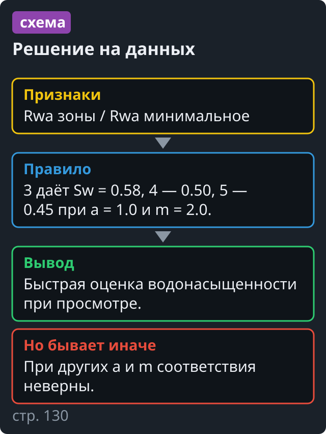
Решение на данных в шаге «Водонасыщенность по двум Rwa»: признаки, правило, вывод. класс B · схема
Проверь себя
Часть 2 · шаг 14 из 45 · ≈4 мин · формат: практикум на данных
Пористость по сопротивлению
Conductivity-derived porosity: procedure and pitfalls. Как пористость по сопротивлению выдаёт зоны с углеводородами.
Почему этот шаг здесь
Третий экспресс-метод: пористость из формулы Арчи в предположении, что пласт водоносный. модельстр. 130
Суть
Пористость считают по формуле Арчи, принимая Sw = 1. В водоносной зоне она примерно равна истинной пористости. В зоне с углеводородами она ниже истинной. модельстр. 130
Как это работает
Механизм
Метод начинался с кривой проводимости (Dresser Atlas, 1975). Сейчас кривую проводимости редко показывают на диаграммах, и метод описан через сопротивление. модельстр. 130
Пористость считают из уравнения Арчи в форме для водоносных зон (Sw = 1). Значения строят кривой и обычно показывают в дорожке ПС: высокая пористость слева, низкая справа. модельстр. 130
Как делает специалист
Шаг 1: рассчитать пористость по Арчи, принимая Sw = 1.0, по сопротивлению нетронутой зоны. модельстр. 130
Шаг 2: сравнить значения и положение кривой в пористых и проницаемых зонах. Шаг 3: при желании рассчитать Sw по Арчи, сравнив эту пористость с пористостью по акустике, плотности или нейтронному каротажу. модельстр. 130
Картины: в водоносных зонах пористость по сопротивлению высокая и примерно равна истинной. В зонах с углеводородами она низкая, ниже истинной. модельстр. 130
Нюансы
Если взять неверное Rw, пористость по сопротивлению изменится, и сравнение с истинной пористостью может стать неточным. Но результат сравнения кривой между разными зонами не изменится. модельстр. 130
Частая ошибка
Пористость по сопротивлению — это настоящая пористость пласта.
Что это значит для данных
Пористость по сопротивлению — расчётная кривая при допущении Sw = 1; её сравнивают с измеренной пористостью. модельстр. 130
Неверное Rw сдвигает всю кривую, но не меняет относительное положение зон. модельстр. 130
Разность двух пористостей можно использовать как признак углеводородов. гипотезамодельстр. 130
Решение на данных
Признаки
пористость по сопротивлению
истинная пористость
ПравилоПримерно равны — вероятно вода; пористость по сопротивлению ниже — углеводороды.ВыводФлажок зоны с углеводородами.КонтрпримерПри неверном Rw сравнение с истинной пористостью может быть неточным.
Аналогия
Похоже на расчёт «как если бы всё было в норме»: отклонение от фактического значения и есть сигнал. модель
Где аналогия не работает: Здесь норма зависит от выбранного Rw, а оно известно неточно.
Как это делается сейчас
Автор сам отмечает, что кривую проводимости сейчас редко показывают и метод выполняют через сопротивление. гипотезамодельстр. 130
Линза неэффективности
Входные данныеСопротивление нетронутой зоны, Rw, пористость по другому приборуРучные шагиРассчитать пористость при Sw = 1.0 и сравнитьТочки сужденияВерно ли выбрано RwВремяВ главе не указаноТипичные ошибкиСравнивать с истинной пористостью при неверном Rw
Новые понятия
пористость по сопротивлению (conductivity-derived porosity) — Пористость из формулы Арчи в предположении, что пласт полностью водоносный
наблюдение. Кривую проводимости сейчас редко показывают, поэтому метод описан через сопротивление. пересказ модели
«Although this technique originated with the use of the conductivity curve (Dresser Atlas, 1975), the conductivity curve is now rarely presented on log displays, and the technique is described here using the resistivity measurement.» — автор, стр. 130
наблюдение. Пористость считают по Арчи в форме для водоносных зон и обычно показывают в дорожке ПС. пересказ модели
«This technique calculates a porosity from Archie's equation, using the form of the equation for water-bearing zones ().» — автор, стр. 130
наблюдение. В водоносных зонах пористость по сопротивлению высокая и примерно равна истинной. пересказ модели
«1. In water-bearing zones, the conductivity-derived porosity is high and approximately equal to the true formation porosity.» — автор, стр. 130
наблюдение. В зонах с углеводородами пористость по сопротивлению низкая, ниже истинной. пересказ модели
«2. In zones that contain hydrocarbons, the conductivity-derived porosity is low, lower than the true formation porosity.» — автор, стр. 130
вывод. Неверное Rw может сделать сравнение с истинной пористостью неточным. пересказ модели
«The choice of an incorrect value for would change the value of conductivity-derived porosity, and might make its comparison to true formation porosity inaccurate.» — автор, стр. 130
вывод. Сравнение кривой между зонами от неверного Rw не изменится. пересказ модели
«It would not, however, change the results of comparison of the curve values in different zones.» — автор, стр. 130
Иллюстрации
Место шага «Пористость по сопротивлению» в главе: на что опирается и куда ведёт. класс B · схемаРешение на данных в шаге «Пористость по сопротивлению»: признаки, правило, вывод. класс B · схема
Проверь себя
Часть 2 · шаг 15 из 45 · ≈3 мин · формат: интерактив
Почему нефть занижает такую пористость
Conductivity-derived porosity: basis. Как формула Арчи, решённая для пористости, даёт водонаполненную пористость.
Формулу Арчи решают для пористости и подставляют Sw = 1. В водоносном пласте результат близок к истинной пористости. Углеводороды повышают Rt, и пористость выходит меньше. модельстр. 130
Как это работает
Механизм
Из главы 1: уравнение Арчи, решённое для пористости, уравнение 7.18. модельстр. 130
Для водоносного случая Sw = 1, и уравнение сводится к 7.19: пористость — корень степени m из a·Rw/Rt. модельстр. 130
Эта форма даёт водонаполненную пористость. Где пласт действительно водоносный, Rt становится равным Ro. модельстр. 130
Тогда расчётная пористость близка к истинной, если параметры уравнения близки к реальным параметрам пласта. Когда в пласте углеводороды, Rt больше Ro, и расчётная пористость меньше истинной. модельстр. 130
Как делает специалист
Традиционно кривую рисуют в дорожке ПС и сравнивают её ход с ПС. модельстр. 130
Её можно рисовать и в одной дорожке с пористостью по прибору пористости. Тогда уменьшение пористости по сопротивлению относительно этой кривой указывает на углеводороды. модельстр. 130
Водонасыщенность можно оценить как отношение пористости по сопротивлению к истинной пористости, уравнение 7.20. модельстр. 130
Нюансы
Близость к истинной пористости верна лишь при условии, что параметры уравнения близки к реальным. модельстр. 130
Формулы
Пористость равна корню степени m из a·Rw, делённого на Rt·Sw^n. модельстр. 130
φ — пористость
a — коэффициент извилистости
Rw — сопротивление пластовой воды
Rt — истинное сопротивление
Sw — водонасыщенность
n — показатель насыщенности
m — показатель цементации
При Sw = 1 пористость равна корню степени m из a·Rw/Rt. модельстр. 130
φ — пористость
a — коэффициент извилистости
Rw — сопротивление пластовой воды
Rt — истинное сопротивление
m — показатель цементации
Водонасыщенность равна пористости по сопротивлению, делённой на истинную пористость. модельстр. 130
Sw — водонасыщенность
φconductivity — пористость по сопротивлению
φactual — истинная пористость
Частая ошибка
Если пористость по сопротивлению мала, порода плотная.
Что это значит для данных
Низкая пористость по сопротивлению при нормальной измеренной пористости — признак углеводородов, а не плотной породы. модельстр. 130
Вывод верен лишь при параметрах, близких к реальным. модельстр. 130
Отношение двух пористостей можно сразу выводить как кривую Sw. гипотезамодельстр. 130
Аналогия
Похоже на вычисление ожидаемой нагрузки по одной метрике: если фактическая выше, есть скрытый фактор. модель
Где аналогия не работает: Здесь скрытый фактор — углеводороды, повышающие сопротивление.
Новые понятия
водонаполненная пористость — Пористость, рассчитанная так, будто все поры заполнены водой
Источник
4 цитаты автора со страницами
наблюдение. Где пласт действительно водоносный, Rt становится равным Ro. пересказ модели
«Where the formation is actually water filled, reverts to the water-bearing resistivity ().» — автор, стр. 130
допущение. Расчётная пористость близка к истинной при условии, что параметры уравнения близки к реальным. пересказ модели
«The porosity calculated from this equation is close to the actual formation porosity, assuming that the parameters in the equation are close to the actual formation parameters.» — автор, стр. 130
наблюдение. Когда в пласте углеводороды, Rt больше Ro, и расчётная пористость меньше истинной. пересказ модели
«When the formation contains hydrocarbons, is greater than , and the calculated porosity is less than the actual formation porosity.» — автор, стр. 130
наблюдение. При рисовании рядом с кривой пористости уменьшение пористости по сопротивлению указывает на углеводороды. пересказ модели
«It can also be plotted in the same track as a porosity curve from one of the porosity tools, where decreases in conductivity-derived porosity with respect to the porosity curve indicate the presence of hydrocarbons.» — автор, стр. 130
Иллюстрации
Место шага «Почему нефть занижает такую пористость» в главе: на что опирается и куда ведёт. класс B · схема
Часть 2 · шаг 16 из 45 · ≈3 мин · формат: практикум на данных
Сопротивление, если бы была вода
Wet resistivity Ro. Как наложение Ro на глубокое сопротивление выдаёт углеводороды.
Почему этот шаг здесь
Четвёртый экспресс-метод сравнивает не с ПС, а с самой кривой сопротивления. модельстр. 131
Суть
Ro считают из пористости и Rw и накладывают на кривую сопротивления. В воде кривые совпадают. В зоне с углеводородами глубокое сопротивление выше Ro. модельстр. 131
Как это работает
Механизм
Кривая Ro — один из старейших экспресс-методов. Другие кривые обычно сравнивают с ПС, а Ro накладывают на кривую сопротивления. модельстр. 131
Из главы 1: Ro равно F·Rw, то есть a·Rw/φ^m, уравнение 7.21. модельстр. 131
Ro считают по пористости, обычно акустической или плотностной, с оценкой Rw, a и m. Кривую можно строить во время каротажа. модельстр. 131
Как делает специалист
Шаг 1: рассчитать Ro по пористости и оценке Rw. Шаг 2: построить Ro в том же масштабе, что кривые сопротивления, и сравнить с глубоким замером. Шаг 3: при желании рассчитать Sw по Арчи в любой зоне по Ro и глубокому сопротивлению. модельстр. 131
Картины: в водоносных зонах Ro и глубокое сопротивление должны совпадать. В зонах с углеводородами глубокое сопротивление выше Ro, и расхождение растёт с ростом нефтегазонасыщенности. модельстр. 131
Нюансы
Если Rw для расчёта Ro выбрано неверно, кривые в водоносных зонах не совпадут. модельстр. 131
Формулы
Ro равно параметру пористости, умноженному на Rw, то есть a·Rw/φ^m. модельстр. 131
Ro — сопротивление водоносного пласта
F — параметр пористости
Rw — сопротивление пластовой воды
a — коэффициент извилистости
φ — пористость
m — показатель цементации
Частая ошибка
Высокое сопротивление само по себе означает нефть, без сравнения с Ro.
Что это значит для данных
Признак — превышение глубокого сопротивления над расчётной кривой Ro в одном масштабе. модельстр. 131
При неверном Rw кривые не совпадают даже в воде, и ложное расхождение похоже на углеводороды. модельстр. 131
Совпадение Ro и Rt в явно водоносной зоне можно использовать как проверку Rw. гипотезамодельстр. 131
Решение на данных
Признаки
глубокое сопротивление
Ro
ПравилоСовпадают — вода; глубокое выше Ro — углеводороды, чем больше расхождение, тем выше насыщенность.ВыводФлажок зоны с углеводородами.КонтрпримерПри неверном Rw кривые расходятся и в водоносных зонах.
Аналогия
Похоже на сравнение факта с прогнозом базовой модели: превышение — сигнал. модель
Где аналогия не работает: Прогноз здесь зависит от Rw, которое само оценено.
Линза неэффективности
Входные данныеПористость, Rw, a, m, глубокое сопротивлениеРучные шагиРассчитать Ro и наложить на сопротивлениеТочки сужденияВерно ли Rw: совпадают ли кривые в водеВремяВ главе не указаноТипичные ошибкиПринимать расхождение от неверного Rw за углеводороды
Новые понятия
наложение (overlay) — Две кривые в одном масштабе в одной дорожке
Источник
5 цитат автора со страницами
наблюдение. Кривая Ro — один из старейших экспресс-методов. пересказ модели
«The wet-resistivity curve () is one of the oldest quick-look techniques.» — автор, стр. 131
наблюдение. В отличие от других кривых, которые обычно сравнивают с ПС, Ro накладывают на кривую сопротивления. пересказ модели
«Unlike the other curves, which tend to be compared to the SP curve, it is plotted as an overlay on the resistivity curve.» — автор, стр. 131
наблюдение. В водоносных зонах Ro и глубокое сопротивление должны совпадать. пересказ модели
«1. In water-bearing zones, and the deep resistivity should overlay.» — автор, стр. 131
наблюдение. В зонах с углеводородами глубокое сопротивление выше Ro, и расхождение растёт с ростом нефтегазонасыщенности. пересказ модели
«2. In hydrocarbon-bearing zones, the deep resistivity is higher than , with the separation increasing with increasing hydrocarbon saturation.» — автор, стр. 131
вывод. Если Rw выбрано неверно, кривые в водоносных зонах не совпадут. пересказ модели
«If the value of chosen to calculate is incorrect, the curves would not align in water-bearing zones.» — автор, стр. 131
Иллюстрации
Место шага «Сопротивление, если бы была вода» в главе: на что опирается и куда ведёт. класс B · схема
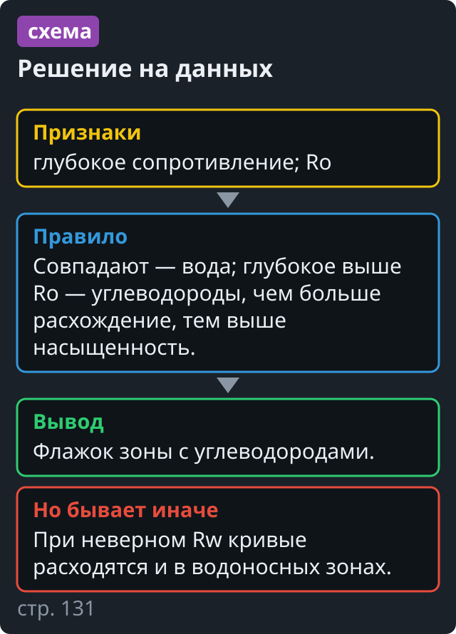
Решение на данных в шаге «Сопротивление, если бы была вода»: признаки, правило, вывод. класс B · схема
Проверь себя
Часть 3 · шаг 17 из 45 · ≈3 мин · формат: ролик-разбор
Объём воды и безводная добыча
Bulk volume water and irreducible water saturation. Что такое BVW и почему его постоянство значит безводную добычу.
Почему этот шаг здесь
Экспресс-методы разобраны; объём воды в породе показывает, будет ли пласт давать воду. модельстр. 131
Суть
BVW — произведение водонасыщенности на пористость. Если BVW по глубинам постоянно, пласт одного типа и при неснижаемой водонасыщенности. Тогда добыча должна быть безводной. модельстр. 131
Как это работает
Механизм
Объём воды в породе (bulk volume water, BVW) — произведение водонасыщенности нетронутой зоны на пористость, уравнение 7.22. модельстр. 131
Если BVW, рассчитанное на нескольких глубинах пласта, постоянно или очень близко к постоянному, зона одного типа породы и при неснижаемой водонасыщенности (irreducible, Sw irr). модельстр. 131
При неснижаемой водонасыщенности вода в нетронутой зоне не движется: её держит на зёрнах капиллярное давление. модельстр. 131
Как делает специалист
Поэтому добыча углеводородов из зоны при неснижаемой водонасыщенности должна быть безводной (Morris и Biggs, 1967). модельстр. 131
Нюансы
Пласт не при неснижаемой водонасыщенности показывает широкий разброс значений BVW. модельстр. 131
Формулы
Объём воды в породе равен водонасыщенности, умноженной на пористость. модельстр. 131
BVW — объём воды в породе
Sw — водонасыщенность нетронутой зоны
φ — пористость
Частая ошибка
Если в пласте есть вода, она обязательно пойдёт в скважину.
Что это значит для данных
BVW — расчётная кривая Sw·φ; её постоянство по глубине — признак неснижаемой водонасыщенности. модельстр. 131
Разброс BVW указывает, что пласт может дать воду. модельстр. 131
Стандартное отклонение BVW по интервалу удобно использовать как числовой признак. гипотезамодельстр. 131
Решение на данных
Признаки
BVW на нескольких глубинах
ПравилоПостоянно или очень близко к постоянному — один тип породы и неснижаемая водонасыщенность; широкий разброс — нет.ВыводДобыча из зоны с постоянным BVW должна быть безводной.КонтрпримерШирокий разброс BVW указывает, что пласт не при неснижаемой водонасыщенности.
Аналогия
Похоже на воду в губке: часть её держится сама и не вытекает. модель
Где аналогия не работает: Губку можно отжать, а капиллярно связанная вода при добыче не движется.
Линза неэффективности
Входные данныеSw и пористость на нескольких глубинахРучные шагиРассчитать BVW и посмотреть разбросТочки сужденияНасколько близко к постоянномуВремяВ главе не указаноТипичные ошибкиСчитать воду в пласте признаком обводнения
Новые понятия
неснижаемая водонасыщенность (Sw irr) — Водонасыщенность, при которой вода удерживается в порах и не движется
капиллярное давление — Сила, которой порода удерживает воду на зёрнах в тонких порах
Источник
5 цитат автора со страницами
наблюдение. BVW — произведение водонасыщенности пласта на его пористость. пересказ модели
«The product of a formation's water saturation () and its porosity () is the bulk volume of water ().» — автор, стр. 131
вывод. Если BVW на нескольких глубинах постоянно или почти постоянно, зона одного типа породы и при неснижаемой водонасыщенности. пересказ модели
«constant, they indicate that the zone is of a single rock type and at irreducible water saturation ().» — автор, стр. 131
наблюдение. При неснижаемой водонасыщенности вода в нетронутой зоне не движется, её держит капиллярное давление. пересказ модели
«When a zone is at irreducible water saturation, water in the uninvaded zone () does not move because it is held on grains by capillary pressure.» — автор, стр. 131
вывод. Добыча углеводородов из зоны при неснижаемой водонасыщенности должна быть безводной. пересказ модели
«Therefore, hydrocarbon production from a zone at irreducible water saturation should be water free (Morris and Biggs, 1967).» — автор, стр. 131
наблюдение. Пласт не при неснижаемой водонасыщенности показывает широкий разброс BVW. пересказ модели
«A formation not at irreducible water saturation () exhibits wide variations in bulk volume water values.» — автор, стр. 131
Иллюстрации
Место шага «Объём воды и безводная добыча» в главе: на что опирается и куда ведёт. класс B · схема
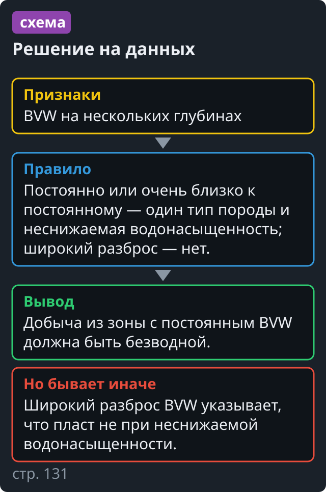
Решение на данных в шаге «Объём воды и безводная добыча»: признаки, правило, вывод. класс B · схемаАнимация: точки равного BVW лежат на одной гиперболе пористость — водонасыщенность; при неснижаемой водонасыщенности точки на ней, иначе разброс. 22 с, без звука. класс B · схема · стр. 131; допущения: значения BVW кривых условные, показана форма: линия равного BVW — гипербола; разброс показан несколькими кривыми большего BVW
Проверь себя
Часть 3 · шаг 18 из 45 · ≈3 мин · формат: практикум на данных
График пористость — водонасыщенность
Buckles plot. Как график Бакла показывает неснижаемую водонасыщенность.
Почему этот шаг здесь
Постоянство BVW удобно видеть на графике, где равный BVW — одна гипербола. модельстр. 131
Суть
График Бакла — пористость против Sw. Точки равного BVW лежат на гиперболах. Пласт при неснижаемой водонасыщенности даёт одну гиперболу, обводнённый — разброс. модельстр. 131
Как это работает
Механизм
График Бакла (Buckles plot, Buckles, 1965) — пористость против Sw. Точки равного BVW образуют гиперболические кривые. модельстр. 131
Как делает специалист
Рисунок 7.3 показывает графики Бакла по трём скважинам: ордовик, Red River B-zone, месторождение Beaver Creek, Северная Дакота. модельстр. 131
Если BVW построено по данным пласта при неснижаемой водонасыщенности, точки ложатся на одну гиперболу (рис. 7.3a). Если данные из коллекторов с большей долей добываемой воды, точки разбросаны сильнее (рис. 7.3b и 7.3c). модельстр. 131
Частая ошибка
Разброс точек на графике — это просто шум измерений.
Что это значит для данных
На графике пористость — Sw линии равного BVW — гиперболы; кучность точек вдоль одной — признак безводной добычи. модельстр. 131
Разброс точек связан с большей долей добываемой воды. модельстр. 131
Подгонку одной гиперболы и остатки от неё можно считать автоматически. гипотезамодельстр. 131
Решение на данных
Признаки
разброс точек вокруг одной гиперболы
ПравилоТочки на одной гиперболе — неснижаемая водонасыщенность; разброс — больше добываемой воды.ВыводОценка, даст ли пласт воду.КонтрпримерПласт не при неснижаемой водонасыщенности даёт широкий разброс BVW.
Аналогия
Похоже на диаграмму, где изолинии одной метрики — кривые; точки на одной изолинии значат постоянство метрики. модель
Где аналогия не работает: Изолинии здесь — гиперболы, а не прямые.
Новые понятия
график Бакла (Buckles plot) — График пористости против водонасыщенности с гиперболами равного BVW
гипербола — Кривая, на которой произведение двух величин постоянно
Источник
3 цитаты автора со страницами
наблюдение. График Бакла — пористость против Sw; точки равного BVW образуют гиперболы. пересказ модели
«The Buckles plot (Buckles, 1965) is a graph of porosity () versus .» — автор, стр. 131
наблюдение. Если данные из пласта при неснижаемой водонасыщенности, точки ложатся на одну гиперболу. пересказ модели
«If is plotted using data from a formation at irreducible water saturation, the points fall along a single hyperbolic curve (Figure 7.3a).» — автор, стр. 131
наблюдение. Если данные из коллекторов с большей долей добываемой воды, точки разбросаны сильнее. пересказ модели
«If the data come from reservoirs with higher percentages of produced water, the points are more scattered (Figures 7.3b and 7.3c).» — автор, стр. 131
Иллюстрации
Место шага «График пористость — водонасыщенность» в главе: на что опирается и куда ведёт. класс B · схема
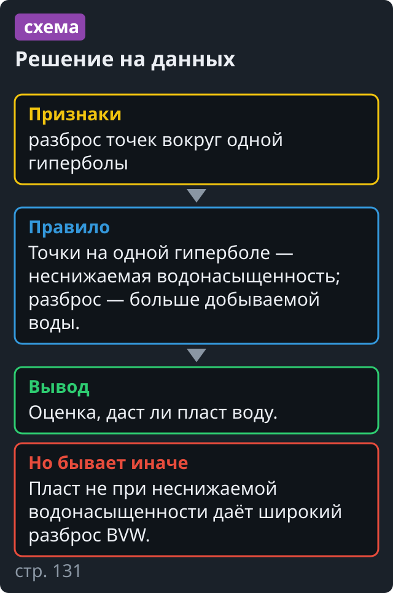
Решение на данных в шаге «График пористость — водонасыщенность»: признаки, правило, вывод. класс B · схема
Часть 3 · шаг 19 из 45 · ≈3 мин · формат: интерактив
Чем мельче зерно, тем больше воды
BVW versus grain size and lithology. Как BVW растёт с уменьшением размера зерна, таблица 7.1.
Почему этот шаг здесь
BVW при неснижаемой водонасыщенности зависит от размера зерна; таблица даёт ориентиры. модельстр. 131
Суть
Чем мельче зерно, тем больше воды порода держит капиллярным давлением, и тем выше BVW. Таблица 7.1 даёт диапазоны BVW для песчаников и карбонатов. Для карбонатов это лишь очень общий ориентир. модельстр. 131
Как это работает
Механизм
Количество воды, которое пласт держит капиллярным давлением, растёт с уменьшением размера зерна. Поэтому и BVW растёт с уменьшением размера зерна. модельстр. 131
Как делает специалист
Таблица 7.1 — сравнительная таблица BVW по размеру зерна и литологии. модельстр. 131
Обломочные: крупные зёрна 1.0 to 0.5 мм — BVW 0.02 to 0.025; средние 0.5 to 0.25 мм — 0.025 to 0.035; мелкие 0.25 to 0.125 мм — 0.035 to 0.05; очень мелкие 0.125 to 0.062 мм — 0.05 to 0.07; алеврит меньше 0.062 мм — 0.07 to 0.09. модельстр. 131
Карбонаты: кавернозные (vuggy) — 0.005 to 0.015; кавернозные и межкристаллические — 0.015 to 0.025; межкристаллические — 0.025 to 0.04; меловидные (chalky) — 0.05. модельстр. 131
Нюансы
Значения BVW для карбонатов следует использовать только как очень общий ориентир по типам пористости. модельстр. 131
Таблицы книги
Table 7.1. Bulk volume water (BVW) as a function of grain size and lithology стр. 131
Lithology
Grain Size (millimeters)
Bulk Volume Water ()
*Clastics*
Coarse
1.0 to 0.5
0.02 to 0.025
Medium
0.5 to 0.25
0.025 to 0.035
Fine
0.25 to 0.125
0.035 to 0.05
Very Fine
0.125 to 0.062
0.05 to 0.07
Silt
< 0.062
0.07 to 0.09
*Carbonates*
Vuggy
0.005 to 0.015
Vuggy and intercrystalline (intergranular)
0.015 to 0.025
Intercrystalline
0.025 to 0.04
Chalky
0.05
Частая ошибка
Одно значение BVW подходит для любой породы.
Что это значит для данных
Ожидаемое BVW при неснижаемой водонасыщенности зависит от размера зерна и литологии. модельстр. 131
Для карбонатов значения таблицы — только очень общий ориентир. модельстр. 131
Размер зерна по керну можно использовать, чтобы выбрать ожидаемый диапазон BVW. гипотезамодельстр. 131
Аналогия
Похоже на справочник нормальных значений, который зависит от категории объекта. модель
Где аналогия не работает: Для карбонатов справочник очень приблизителен.
Новые понятия
литология — Тип породы по составу и строению
кавернозная пористость (vuggy) — Пустоты-каверны, крупнее зёрен породы
межкристаллическая пористость — Поры между кристаллами породы
Источник
2 цитаты автора со страницами
наблюдение. Количество воды, удерживаемой капиллярным давлением, растёт с уменьшением размера зерна, и BVW тоже растёт. пересказ модели
«Because the amount of water a formation can hold by capillary pressure increases with decreasing grain size, the bulk volume water also increases with decreasing grain size.» — автор, стр. 131
наблюдение. Значения BVW для карбонатов следует использовать только как очень общий ориентир. пересказ модели
«The bulk volume water values for carbonates should be used only as a very general guide to different types of porosity.» — автор, стр. 131
Иллюстрации
Место шага «Чем мельче зерно, тем больше воды» в главе: на что опирается и куда ведёт. класс B · схема
Часть 3 · шаг 20 из 45 · ≈3 мин · формат: интерактив
Графики вместо расчёта по Арчи
Saturation crossplots. Что такое кроссплоты насыщенности и зачем они сегодня.
Почему этот шаг здесь
Расчёты по Арчи по точкам трудоёмки; кроссплоты решают ту же задачу графически. модельстр. 132
Суть
Кроссплоты Пиккетта и Хингла — графические решения уравнения Арчи. Их придумали до компьютеров, чтобы меньше считать и легче сравнивать зоны. Сейчас их считают необходимой частью компьютерных систем интерпретации. модельстр. 132
Как это работает
Механизм
Кроссплоты насыщенности (saturation crossplots), или кроссплоты сопротивление — пористость, похожи на кроссплоты пористости из главы 4. Это графики x-y данных каротажа, по которым находят нужную величину — здесь водонасыщенность. модельстр. 132
Методы Пиккетта и Хингла по сути — графические решения уравнения насыщенности Арчи. Их создали до применения компьютеров в интерпретации. модельстр. 132
Как делает специалист
Эти методы сокращают число расчётов и помогают сравнивать возможно продуктивные зоны. модельстр. 132
С появлением ранних, в основном неграфических программ их применение сократилось. Потом спад сменился ростом: поняли, что методы используют способность человека видеть закономерности в данных. модельстр. 132
Нюансы
Сейчас эти методы считают необходимой частью полнофункциональных компьютерных систем интерпретации. модельстр. 132
Частая ошибка
Графические методы устарели с появлением компьютеров.
Что это значит для данных
Кроссплот — это визуальное решение формулы Арчи по многим точкам сразу. модельстр. 132
Методы ценны тем, что человек видит закономерности, которые не видны в столбце чисел. модельстр. 132
Кроссплот удобно делать интерактивным: выбор точек на графике подсвечивает глубины на диаграмме. гипотезамодельстр. 132
Аналогия
Похоже на визуализацию данных в аналитике: формула та же, но глаз видит выбросы и тренды. модель
Где аналогия не работает: Здесь линии на графике имеют физический смысл — параметры уравнения Арчи.
Как это делается сейчас
Автор пишет, что сейчас эти методы входят в компьютерные системы интерпретации. гипотезамодельстр. 132
Новые понятия
кроссплот (crossplot) — График одной кривой против другой по точкам глубин
кроссплот насыщенности (saturation crossplot) — Кроссплот сопротивления и пористости для оценки водонасыщенности
Источник
4 цитаты автора со страницами
наблюдение. Кроссплоты насыщенности — графики x-y данных каротажа, по которым находят водонасыщенность. пересказ модели
«They are x-y plots of log data from which quantities of interest are derived; in this case, that quantity is water saturation ().» — автор, стр. 132
наблюдение. Методы Пиккетта и Хингла по сути — графические решения уравнения Арчи. пересказ модели
«Both the Pickett and Hingle methods are essentially graphical solutions to the Archie saturation equation.» — автор, стр. 132
наблюдение. Методы сокращают число расчётов и помогают сравнивать возможно продуктивные зоны. пересказ модели
«These techniques minimize the number of calculations that must be done and aid the comparison of potentially productive zones.» — автор, стр. 132
наблюдение. Сейчас их считают необходимой частью полнофункциональных компьютерных систем интерпретации. пересказ модели
«These techniques are currently regarded as necessary components of full-functioned computer-based log-interpretation systems.» — автор, стр. 132
Иллюстрации
Место шага «Графики вместо расчёта по Арчи» в главе: на что опирается и куда ведёт. класс B · схема
Часть 3 · шаг 21 из 45 · ≈4 мин · формат: ролик-шортс
Почему на графике Пиккетта прямая
Pickett crossplot: basis. Как логарифм уравнения Арчи превращается в прямую линию.
Почему этот шаг здесь
Кроссплоты введены; начнём с самого простого — Пиккетта — и того, почему в логарифмах получается прямая. модельстр. 132
Суть
Rt зависит от пористости, Sw и m. После логарифмирования уравнение Арчи для водоносной зоны — прямая в логарифмических осях. Отрезок даёт a·Rw, наклон — m. модельстр. 132
Как это работает
Механизм
График Пиккетта (Pickett, 1966, 1973) — один из самых простых и эффективных кроссплотов. Он оценивает водонасыщенность и помогает найти Rw, показатель цементации m и параметры матрицы для акустики и плотности. модельстр. 132
Метод основан на наблюдении: Rt зависит от пористости, водонасыщенности и показателя цементации. Это графическое решение уравнения Арчи относительно сопротивления, уравнение 7.23. модельстр. 132
Если зона водоносная, Sw = 1, log(Sw) = 0, и остаётся log Rt = log(a·Rw) − m·log φ, уравнение 7.25. модельстр. 132
Это вид y = b + mx. Если откладывать Rt по y и пористость по x в логарифмическом масштабе, отрезок на оси (b) даёт a·Rw, а наклон — m. модельстр. 132
Как делает специалист
На практике Rt обычно откладывают по x, а пористость — по y (рис. 7.4). Это пошло от логарифмической бумаги, доступной во времена Пиккетта. модельстр. 132
Лучший формат для разрешения: две декады пористости (0.01 to 1.0, или 1% to 100%) и три декады сопротивления (0.1 to 100, или 1 to 1000). Единственная бумага 2 на 3 декады имела 2 декады по y и 3 по x, поэтому график подогнали под бумагу. модельстр. 132
С этой осью уравнение становится: log φ = log(a·Rw) − (1/m)·log Rt − n·log Sw, уравнение 7.26. модельстр. 132
Нюансы
В уравнении 7.23 в числителе стоит Ro, а в логарифмической форме — Rw. Похоже на опечатку книги. модельстр. 132
Формулы
Rt равно a·Ro, делённому на φ^m·Sw^n. модельстр. 132
Для водоносной зоны логарифм Rt равен log(a·Rw) минус m·log φ. модельстр. 132
Rt — истинное сопротивление
a — коэффициент извилистости
Rw — сопротивление пластовой воды
m — показатель цементации
φ — пористость
При пористости по оси y: log φ равен log(a·Rw) минус (1/m)·log Rt минус n·log Sw. модельстр. 132
φ — пористость
a — коэффициент извилистости
Rw — сопротивление пластовой воды
m — показатель цементации
Rt — истинное сопротивление
n — показатель насыщенности
Sw — водонасыщенность
Частая ошибка
Расположение осей на графике Пиккетта выбрано из физики.
Что это значит для данных
В логарифмах водоносные точки ложатся на прямую: отрезок — a·Rw, наклон — m. модельстр. 132
Оси перевёрнуты по историческим причинам, поэтому наклон на графике −1/m, а не −m. модельстр. 132
Прямую по водоносным точкам можно подгонять регрессией в логарифмах. гипотезамодельстр. 132
Аналогия
Похоже на степенной закон: в двойном логарифмическом масштабе он становится прямой. модель
Где аналогия не работает: Здесь прямая только для водоносных точек; углеводородные лежат в стороне.
Как это делается сейчас
Ориентация осей пошла от бумаги времён Пиккетта; в программах её сохраняют как соглашение. гипотезамодельстр. 132
Новые понятия
график Пиккетта (Pickett plot) — Кроссплот сопротивления и пористости в логарифмических осях
декада — Отрезок логарифмической шкалы, где значение растёт в 10 раз
логарифмический масштаб — Шкала, где равные отрезки соответствуют умножению на одно число
Источник
5 цитат автора со страницами
наблюдение. График Пиккетта — один из самых простых и эффективных кроссплотов. пересказ модели
«The Pickett plot (Pickett, 1966, 1973) is one of the simplest and most effective crossplot methods in use.» — автор, стр. 132
наблюдение. Метод основан на наблюдении, что Rt зависит от пористости, водонасыщенности и показателя цементации. пересказ модели
«The Pickett method is based on the observation that true resistivity () is a function of porosity (), water saturation (), and cementation exponent ().» — автор, стр. 132
наблюдение. Если зона водоносная, Sw = 1, и уравнение упрощается. пересказ модели
«If the zone is water-bearing, , , and the equation reduces to:» — автор, стр. 132
наблюдение. На практике Rt обычно откладывают по x, а пористость — по y. пересказ модели
«In practice, the resistivity () is usually plotted on the x-axis and the porosity () on the y-axis (Figure 7.4).» — автор, стр. 132
наблюдение. Это соглашение пошло от логарифмической бумаги, доступной во времена Пиккетта. пересказ модели
«This convention stems from the availability of full-logarithmic graph paper (both scales logarithmic) at the time Pickett developed the technique.» — автор, стр. 132
Иллюстрации
Место шага «Почему на графике Пиккетта прямая» в главе: на что опирается и куда ведёт. класс B · схемаАнимация: в логарифмических осях водоносные точки Арчи ложатся на прямую; сопротивление по горизонтали, пористость по вертикали. 21 с, без звука. класс B · схема · стр. 132; допущения: Rw, a и значения показателя цементации условные; показана форма: в логарифмах водоносная линия прямая
Часть 3 · шаг 22 из 45 · ≈4 мин · формат: практикум на данных
Как читать график Пиккетта
Pickett plot: water line and hydrocarbon points. Линия Ro, сдвиг углеводородных точек и линии равной Sw.
Почему этот шаг здесь
Прямая выведена; теперь что на графике значат точки воды и углеводородов. модельстр. 132
Суть
Водоносные точки лежат на прямой с наклоном −1/m. Углеводородные точки сдвинуты вправо, и сдвиг зависит от Sw. Rw и m находят по самим данным. модельстр. 132
Как это работает
Механизм
Смесь водоносных и углеводородных точек на графике Пиккетта даёт такие признаки (рис. 7.4). модельстр. 132
Водоносные точки разной пористости ложатся на прямую с наклоном −1/m и отрезком a·Rw при пористости 1.0. По ней находят m, а если a известно или оценено, — Rw. Это водоносная линия, или линия Ro. модельстр. 132
Углеводородные точки лежат в стороне: сдвинуты вправо по горизонтали из-за большего сопротивления. Горизонтальное расстояние от линии зависит от Sw точки. модельстр. 132
Как делает специалист
Если показатель насыщенности n известен или оценён, водонасыщенность можно определить. Линии постоянной Sw параллельны водоносной линии. модельстр. 132
Сила метода: Rw и m оценивают по данным, а не по местному опыту или дорогим замерам керна. модельстр. 132
Нюансы
Rw по линии находят только при известном или оценённом a; Sw — только при известном или оценённом n. модельстр. 132
Частая ошибка
Rw и m можно узнать только по керну или анализу воды.
Что это значит для данных
Rw и m оценивают по самим данным каротажа: линия по водоносным точкам. модельстр. 132
Без известного a нельзя получить Rw, без n — Sw. модельстр. 132
Расстояние точки от линии Ro по горизонтали можно перевести в кривую Sw. гипотезамодельстр. 132
Решение на данных
Признаки
положение точки относительно линии Ro
ПравилоНа линии — вода; правее линии — углеводороды, чем дальше, тем ниже Sw.ВыводОценка насыщения точки.КонтрпримерБез известного n расстояние нельзя перевести в Sw.
Аналогия
Похоже на базовую линию регрессии и отклонения от неё: выбросы вправо — интересные объекты. модель
Где аналогия не работает: Регрессию строят по всем точкам, а линию Ro — только по водоносным.
Линза неэффективности
Входные данныеRt и пористость по зонамРучные шагиПровести линию по водоносным точкам, прочитать наклон и отрезокТочки сужденияКакие точки считать водоноснымиВремяВ главе не указаноТипичные ошибкиПроводить линию через углеводородные точки
Новые понятия
водоносная линия (линия Ro) — Прямая на графике Пиккетта, на которой лежат водоносные точки
Источник
5 цитат автора со страницами
наблюдение. Водоносные точки разной пористости ложатся на прямую с наклоном −1/m и отрезком a·Rw. пересказ модели
«- Water-bearing points of different porosities plot along a straight line with a slope of () and an intercept (at porosity = 1.0) of ().» — автор, стр. 132
вывод. Если a известно или оценено, по водоносной линии можно предсказать Rw. пересказ модели
«From this line, the cementation exponent () can be determined, and if the tortuosity factor () is known (or can be estimated), can be predicted.» — автор, стр. 132
наблюдение. Углеводородные точки сдвинуты вправо по горизонтали из-за большего сопротивления. пересказ модели
«- Hydrocarbon-bearing points lie away from the line, moved horizontally to the right from the water-bearing line by their increased resistivity.» — автор, стр. 132
вывод. Если n известно или оценено, водонасыщенность можно определить; линии постоянной Sw параллельны водоносной линии. пересказ модели
«If the saturation exponent () is known (or can be estimated), the water saturation can be determined.» — автор, стр. 132
наблюдение. Сила метода — Rw и m оценивают по данным вместо местного опыта или дорогих замеров керна. пересказ модели
«The power in the Pickett plot is that water resistivity () and cementation exponent () can be estimated from the data, rather than having to be derived from local knowledge or from expensive core measurements.» — автор, стр. 132
Иллюстрации
Место шага «Как читать график Пиккетта» в главе: на что опирается и куда ведёт. класс B · схема
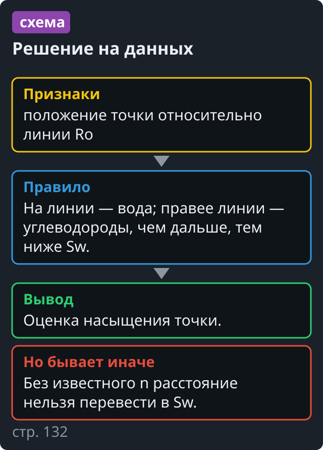
Решение на данных в шаге «Как читать график Пиккетта»: признаки, правило, вывод. класс B · схема
Проверь себя
Часть 3 · шаг 23 из 45 · ≈4 мин · формат: ролик-разбор
Подбор матрицы по прямизне линии
Pickett plot: choosing matrix values. Как подобрать плотность или время матрицы, выпрямляя водоносную линию.
Почему этот шаг здесь
Линия Ro даёт Rw и m; оригинальные оси Пиккетта позволяют найти ещё и параметры матрицы. модельстр. 132, 133
Суть
Пиккетт откладывал не пористость, а ρb − ρma или Δt − Δtma. При верной матрице водоносная линия прямая, при неверной — изогнута. Матрицу подбирают, пока линия не станет прямой. модельстр. 132, 133
Как это работает
Механизм
Сейчас на график Пиккетта обычно откладывают пористость, но Пиккетт использовал две другие величины. модельстр. 132
Вместо плотностной пористости — ρb − ρma: ρb — объёмная плотность породы по каротажу, ρma — плотность матрицы. модельстр. 132
Вместо акустической пористости — Δt − Δtma: Δt — интервальное время по каротажу, Δtma — время в матрице. модельстр. 133
Обе величины — числители формул пористости: плотностной (глава 4, уравнение 4.7) и уравнения среднего времени Уайли (глава 4, уравнение 4.1). модельстр. 133
Как делает специалист
Эти величины — сокращение, чтобы не считать пористость. Но есть и другое назначение. модельстр. 133
Если пористость в зонах водоносной линии меняется и матрица выбрана верно, линия прямая. Если значение матрицы слишком большое или слишком малое, линия изогнута. модельстр. 133
Поэтому при разбросе хороших данных в водоносной зоне верную матрицу подбирают методом проб: меняют её, пока линия не станет прямой. модельстр. 133
Нюансы
Подбор работает только при разбросе пористости и хороших данных в водоносной зоне. модельстр. 133
Частая ошибка
Параметры матрицы известны заранее и не требуют проверки.
Что это значит для данных
Изгиб водоносной линии — диагностика неверной матрицы. модельстр. 132, 133
Без разброса пористости изгиб не виден, и подбор невозможен. модельстр. 132, 133
Подбор матрицы можно автоматизировать: минимизировать кривизну линии по водоносным точкам. гипотезамодельстр. 132, 133
Решение на данных
Признаки
форма водоносной линии
ПравилоПрямая — матрица верна; изогнута — матрица слишком большая или слишком малая.ВыводВыбор значения матрицы.КонтрпримерБез разброса пористости изгиб не виден.
Аналогия
Похоже на подбор параметра калибровки, при котором зависимость становится линейной. модель
Где аналогия не работает: Здесь критерий — прямизна линии на глаз, а не число.
Линза неэффективности
Входные данныеρb или Δt, Rt водоносных зонРучные шагиМенять значение матрицы и смотреть на линиюТочки сужденияКогда линия достаточно прямаяВремяВ главе не указаноТипичные ошибкиПодбирать матрицу по зонам с одинаковой пористостью
Новые понятия
объёмная плотность (ρb) — Плотность породы вместе с порами, по плотностному каротажу
плотность матрицы (ρma) — Плотность твёрдой части породы
интервальное время (Δt) — Время прохождения звука через породу по акустическому каротажу
уравнение среднего времени Уайли — Формула пористости по акустическому каротажу
Источник
5 цитат автора со страницами
наблюдение. Сейчас обычно откладывают пористость, но Пиккетт использовал две другие величины. пересказ модели
«Although porosity is now normally plotted on the Pickett plot, Pickett originally used two other quantities:» — автор, стр. 132
наблюдение. Эти величины — сокращение, чтобы избежать расчёта пористости. пересказ модели
«The quantities are plotting shortcuts to avoid the calculation of porosity, but they serve another purpose as well.» — автор, стр. 133
наблюдение. Если пористость в зонах меняется и матрица выбрана верно, водоносная линия прямая. пересказ модели
«If there is a range of porosities in the zones defining the water-bearing line on the Pickett plot, and if the matrix value is chosen correctly, the line is straight.» — автор, стр. 133
наблюдение. Если значение матрицы слишком большое или слишком малое, линия изогнута. пересказ модели
«If the chosen matrix value is either too high or too low, the line is curved.» — автор, стр. 133
наблюдение. При разбросе хороших данных верную матрицу подбирают, пока линия не станет прямой, а не изогнутой. пересказ модели
«Thus, with a spread of good data in the water-bearing zone, the proper matrix value can be chosen by trial and error by modifying the matrix value until the water-bearing line is straight and not curved.» — автор, стр. 133
Иллюстрации
Место шага «Подбор матрицы по прямизне линии» в главе: на что опирается и куда ведёт. класс B · схемаРешение на данных в шаге «Подбор матрицы по прямизне линии»: признаки, правило, вывод. класс B · схемаАнимация: при верном значении матрицы водоносная линия прямая, при слишком большом или малом изгибается. 22 с, без звука. класс B · схема · стр. 132, 133; допущения: плотности, Rw и показатель цементации условные; модуль разности плотностей показан для наглядности формы; показана форма: при ошибке в матрице линия изгибается
Проверь себя
Часть 3 · шаг 24 из 45 · ≈4 мин · формат: практикум на данных
Линии водонасыщенности на графике
Pickett plot: saturation lines and assumptions. Как найти Sw точки и построить линии равной Sw по таблице 7.2.
Почему этот шаг здесь
Линия Ro и матрица найдены; осталось читать Sw для каждой точки. модельстр. 133
Суть
Sw точки — корень степени n из Ro/Rt при той же пористости. Линии Sw строят, умножая Ro на множители таблицы 7.2. Главное допущение — параметры в сравниваемых зонах не меняются. модельстр. 133
Как это работает
Механизм
Водонасыщенность точки в стороне от водоносной линии: Sw равна (Ro/Rt) в степени 1/n, уравнение 7.27. модельстр. 133
На практике читают сопротивление точки (Rt) и сопротивление водоносной линии (Ro) при той же пористости, оценивают n и считают. модельстр. 133
Как делает специалист
Линии насыщенности для справки строят по таблице. При какой-то пористости (0.10 часто удобно) отмечают сопротивление линии Ro. модельстр. 133
Это сопротивление умножают на множители таблицы и откладывают при той же пористости. Через точки проводят линии, параллельные водоносной, и подписывают значение Sw. Линии — для n = 2.0. модельстр. 133
В полном применении график Пиккетта даёт Rw, m и параметры матрицы (ρma или Δtma). модельстр. 133
Нюансы
Главное допущение: в сравниваемых зонах все параметры — матрица, a, m, n и Rw — не меняются. модельстр. 133
Формулы
Водонасыщенность равна (Ro/Rt) в степени 1/n. модельстр. 133
Sw — водонасыщенность
Ro — сопротивление водоносной линии при той же пористости
Rt — сопротивление точки
n — показатель насыщенности
Таблицы книги
Table 7.2. Factors for positioning water-saturation lines on Pickett and Hingle plots стр. 133
Multiplier
(for n = 2.0)
1.56
0.80
2.04
0.70
2.78
0.60
4
0.50
6.25
0.40
11.11
0.30
25
0.20
Частая ошибка
Одна линия Ro подходит для всех пластов разреза.
Что это значит для данных
Sw точки читают по отношению Ro/Rt при одной пористости. модельстр. 133
Если в зонах разные матрица, a, m, n или Rw, одна линия Ro неверна. модельстр. 133
Множители таблицы 7.2 удобно использовать для проверки программного расчёта Sw. гипотезамодельстр. 133
Решение на данных
Признаки
Rt точки
Ro линии при той же пористости
n
ПравилоSw = (Ro/Rt)^(1/n).ВыводВодонасыщенность точки.КонтрпримерЕсли параметры в зонах различаются, одна линия Ro даёт неверные Sw.
Аналогия
Похоже на сетку изолиний на карте: каждая подписана своим значением. модель
Где аналогия не работает: Изолинии здесь верны только при одном n и одних параметрах.
Линза неэффективности
Входные данныеГрафик Пиккетта с линией RoРучные шагиОтложить множители, провести параллельные линииТочки сужденияОдинаковы ли параметры в зонахВремяВ главе не указаноТипичные ошибкиСмешивать на одном графике зоны с разной литологией
Новые понятия
линии равной водонасыщенности — Линии на кроссплоте, вдоль которых Sw постоянна
Источник
4 цитаты автора со страницами
наблюдение. На практике читают Rt точки и Ro линии при той же пористости, оценивают n и считают Sw. пересказ модели
«In practice, this means reading the resistivity of the point and the resistivity of the water-bearing line at the same porosity value as the point, estimating a value for saturation exponent (n) and making the calculation.» — автор, стр. 133
наблюдение. Линии насыщенности на таблице построены для n = 2.0. пересказ модели
«- Those parallel lines can be labeled with the value of water saturation shown.» — автор, стр. 133
наблюдение. В полном применении график Пиккетта даёт Rw, m и параметры матрицы. пересказ модели
«In its fullest use, then, the Pickett plot can be used to determine formation water resistivity (), cementation exponent (m), and formation matrix values ( or ).» — автор, стр. 133
допущение. Главное допущение — в сравниваемых зонах параметры не меняются. пересказ модели
«The prime assumption is that in the zones being compared, all the parameters (matrix value, a, m, n, and ) do not change.» — автор, стр. 133
Иллюстрации
Место шага «Линии водонасыщенности на графике» в главе: на что опирается и куда ведёт. класс B · схема
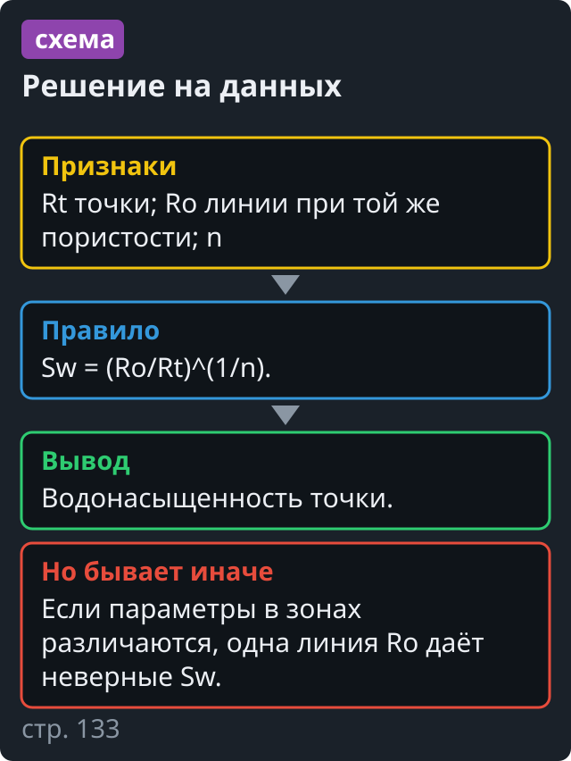
Решение на данных в шаге «Линии водонасыщенности на графике»: признаки, правило, вывод. класс B · схема
Проверь себя
Часть 4 · шаг 25 из 45 · ≈4 мин · формат: практикум на данных
График Хингла: прямые на особой сетке
Hingle crossplot: basis and grids. Как уравнение Арчи выпрямляют на графике Хингла и зачем особая сетка.
Почему этот шаг здесь
Пиккетт разобран; Хингл — старейший кроссплот, и он работает даже без Rw и матрицы. модельстр. 133
Суть
Хингл (1959) — старейший кроссплот сопротивление — пористость. Sw по нему находят, даже если матрица и Rw неизвестны. Пористость — в линейном масштабе, сопротивление — на сетке, построенной для заданных a и m. модельстр. 133
Как это работает
Механизм
Старейший кроссплот сопротивление — пористость для определения Sw — график Хингла (Hingle, 1959). модельстр. 133
Как и у других кроссплотов, важное преимущество: Sw можно найти, даже если свойства матрицы (ρma или Δtma) неизвестны. Это верно и при неизвестном Rw. модельстр. 133
Сопротивление против пористости в линейных осях даёт семейство нелинейных трендов. Если записать уравнение Арчи в виде 7.28, тренды становятся прямыми (Bassiouni, 1994). модельстр. 133
Как делает специалист
Пористость откладывают в линейном масштабе, а сопротивление — в очень нелинейном. На практике сопротивление наносят на сетку, построенную для заданных a и m. модельстр. 133
Сетку с a = 1.0 и m = 2.0 обычно используют для песчаников (рис. 7.5), сетку с a = 0.62 и m = 2.15 — для карбонатов (рис. 7.6). модельстр. 133
На готовой сетке значения сопротивления наносят прямо, без всяких расчётов. модельстр. 133
Нюансы
Сетка зашивает значения a и m: выбрав сетку, интерпретатор принимает их. модельстр. 133
Формулы
(a/Rt) в степени 1/m равно (Sw^n/Rw) в степени 1/m, умноженному на пористость. модельстр. 133
a — коэффициент извилистости
Rt — истинное сопротивление
m — показатель цементации
Sw — водонасыщенность
n — показатель насыщенности
Rw — сопротивление пластовой воды
φ — пористость
Частая ошибка
Без известного Rw водонасыщенность найти нельзя.
Что это значит для данных
Сетка Хингла — нелинейная шкала сопротивления, рассчитанная под a и m. модельстр. 133
Выбор сетки — это выбор a и m; для чужой литологии сетка даёт ошибку. модельстр. 133
В программе сетку можно пересчитывать под любые a и m. гипотезамодельстр. 133
Решение на данных
Признаки
песчаник или карбонат
ПравилоПесчаник — обычно сетка a = 1.0, m = 2.0; карбонат — сетка a = 0.62, m = 2.15.ВыводВыбор сетки графика Хингла.КонтрпримерЕсли реальные a и m иные, сетка искажает результат.
Аналогия
Похоже на специальную шкалу, где нелинейная зависимость выглядит прямой. модель
Где аналогия не работает: Шкала здесь зависит от двух параметров породы.
Новые понятия
график Хингла (Hingle plot) — Кроссплот пористости в линейном масштабе и сопротивления на нелинейной сетке
Источник
5 цитат автора со страницами
наблюдение. Старейший кроссплот сопротивление — пористость для определения Sw — график Хингла. пересказ модели
«The oldest of the resistivity-porosity crossplot methods that can be used to determine water saturation () is the Hingle (1959) plot.» — автор, стр. 133
наблюдение. Sw можно найти, даже если свойства матрицы неизвестны. пересказ модели
«As in other crossplot techniques, a significant benefit of Hingle's technique is that a value for water saturation () can be determined even if matrix properties ( or ) of a reservoir are unknown.» — автор, стр. 133
наблюдение. В линейных осях сопротивление против пористости даёт семейство нелинейных трендов. пересказ модели
«Plotting resistivity against porosity on linear scales produces a family of nonlinear trends.» — автор, стр. 133
наблюдение. Сетку с a = 1.0 и m = 2.0 обычно используют для песчаников, с a = 0.62 и m = 2.15 — для карбонатов. пересказ модели
«The grid constructed using a = 1.0 and m = 2.0 is usually used for sandstones (Figure 7.5), and the grid constructed using a = 0.62 and m = 2.15 is used for carbonates (Figure 7.6).» — автор, стр. 133
наблюдение. На готовой сетке сопротивление наносят прямо, без расчётов. пересказ модели
«Using the constructed grids, resistivity values can be plotted directly on the graph without the need for any calculations.» — автор, стр. 133
Иллюстрации
Место шага «График Хингла: прямые на особой сетке» в главе: на что опирается и куда ведёт. класс B · схема
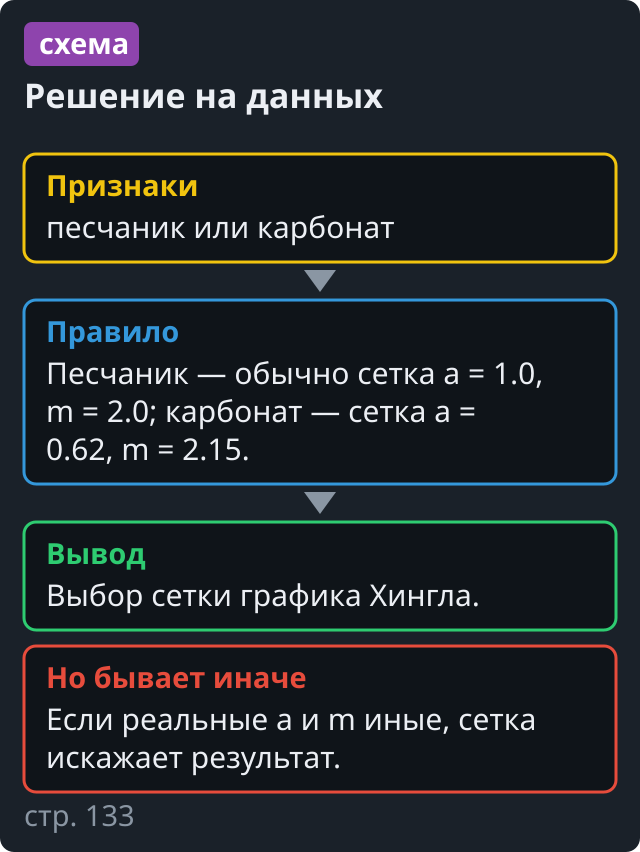
Решение на данных в шаге «График Хингла: прямые на особой сетке»: признаки, правило, вывод. класс B · схема
Часть 4 · шаг 26 из 45 · ≈4 мин · формат: практикум на данных
Как читать график Хингла
Hingle plot: water line and hydrocarbon points. Водоносная линия, её пересечение с осью x и веер линий Sw.
Почему этот шаг здесь
Сетка введена; теперь, где на ней вода и где углеводороды. модельстр. 133, 134
Суть
Водоносные точки лежат на прямой, которая пересекает ось x при нулевой пористости. Углеводородные точки лежат ниже этой линии. Линии меньшей Sw расходятся веером от точки пересечения. модельстр. 133, 134
Как это работает
Механизм
Смесь водоносных и углеводородных точек на графике Хингла даёт такие признаки (рис. 7.7). модельстр. 133
Водоносные точки разной пористости ложатся на прямую. Она пересекает ось x (проводимость ноль, сопротивление бесконечно) там, где пористость равна нулю. модельстр. 133, 134
Если по оси x отложить объёмную плотность или интервальное время вместо пористости, пересечение предсказывает значение матрицы. Линия идёт вверх и вправо от пересечения. модельстр. 134
Как делает специалист
Углеводородные точки лежат ниже линии 100% водонасыщенности: сдвинуты вниз из-за большего сопротивления. Расстояние по вертикали до линии зависит от Sw точки. модельстр. 134
Если n известно или оценено, Sw можно определить. Линии меньшей Sw расходятся от точки пересечения с осью x веером вправо. модельстр. 134
Нюансы
У Пиккетта углеводородные точки сдвинуты вправо, у Хингла — вниз; линии Sw у Пиккетта параллельны, у Хингла расходятся веером. модельстр. 134
Частая ошибка
На любом кроссплоте нефть всегда смещена вправо.
Что это значит для данных
На графике Хингла признак углеводородов — точка ниже водоносной линии. модельстр. 133, 134
Направление сдвига и форма линий Sw отличаются от графика Пиккетта; правила одного графика не переносятся на другой. модельстр. 133, 134
Для каждой точки можно хранить расстояние до водоносной линии как признак. гипотезамодельстр. 133, 134
Решение на данных
Признаки
положение точки относительно водоносной линии
ПравилоНа линии — вода; ниже линии — углеводороды, чем ниже, тем меньше Sw.ВыводОценка насыщения точки.КонтрпримерБез известного n расстояние нельзя перевести в Sw.
Аналогия
Похоже на веер прогнозов из одной точки: чем дальше от базовой линии, тем сильнее отклонение. модель
Где аналогия не работает: Веер здесь выходит из точки нулевой пористости.
Новые понятия
пересечение с осью x (x-intercept) — Точка, где водоносная линия пересекает ось пористости при бесконечном сопротивлении
Источник
5 цитат автора со страницами
наблюдение. Водоносные точки разной пористости ложатся на прямую. пересказ модели
«- Water-bearing points of different porosities plot along a straight line.» — автор, стр. 133
вывод. Если по x отложить плотность или интервальное время, пересечение с осью предсказывает значение матрицы. пересказ модели
«If the bulk density or acoustic travel time of the formation, instead of the porosity, is plotted along the x-axis, the x-intercept predicts the matrix value (matrix density or matrix travel time) of the formation.» — автор, стр. 134
наблюдение. Углеводородные точки лежат ниже линии 100% водонасыщенности из-за большего сопротивления. пересказ модели
«- Hydrocarbon-bearing points lie below the line of 100% water saturation, moved downward from the water-bearing line by their increased resistivity.» — автор, стр. 134
вывод. Если n известно или оценено, Sw можно определить. пересказ модели
«If the saturation exponent () is known (or can be estimated), the water saturation can be determined.» — автор, стр. 134
наблюдение. Линии меньшей Sw расходятся веером от точки пересечения с осью x. пересказ модели
«Lines of decreasing water saturation radiate from the x-axis intercept and spread like a fan toward the right side of the chart.» — автор, стр. 134
Иллюстрации
Место шага «Как читать график Хингла» в главе: на что опирается и куда ведёт. класс B · схема
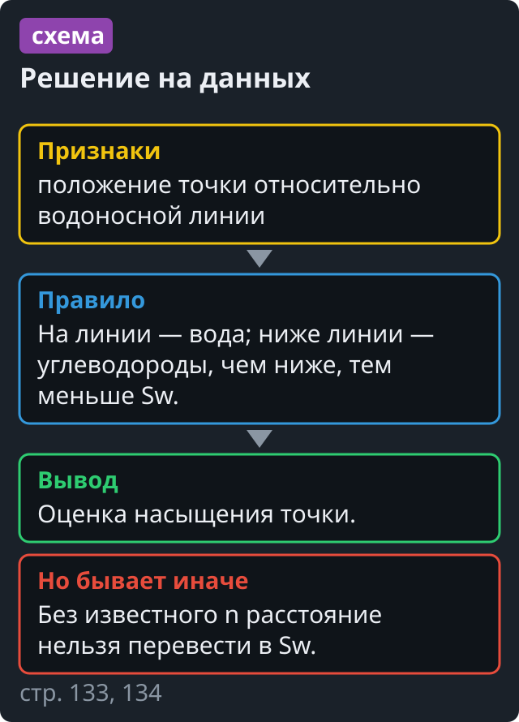
Решение на данных в шаге «Как читать график Хингла»: признаки, правило, вывод. класс B · схема
Проверь себя
Часть 4 · шаг 27 из 45 · ≈4 мин · формат: практикум на данных
Rw и матрица по графику Хингла
Hingle plot: estimating Rw and matrix. Как найти Rw по точке на линии и матрицу по пересечению с осью.
Почему этот шаг здесь
Признаки разобраны; график Хингла, как и Пиккетта, даёт параметры из самих данных. модельстр. 134
Суть
Rw находят по любой точке водоносной линии: Ro и пористость читают с графика, a и m принимают по сетке. Матрицу находят, продлив линию до нулевой проводимости. Для этого нужен достаточный разброс пористости. модельстр. 134
Как это работает
Механизм
Как и график Пиккетта, график Хингла позволяет предсказать часть параметров по каротажу, а не оценивать их другими способами. модельстр. 134
Rw оценивают по любой точке водоносной линии. Её сопротивление (Ro) и пористость читают с графика, a и m принимают по выбранной сетке. Тогда Rw равно Ro·φ^m/a, уравнение 7.29. модельстр. 134
Как делает специалист
Если по оси x откладывать ρb или Δt вместо пористости, можно оценить ρma или Δtma. модельстр. 134
Если для водоносной линии взят достаточный диапазон пористости, линию можно продлить до нулевой проводимости — низа графика. Значение в пересечении — значение матрицы для формулы пористости. модельстр. 134
На рисунках 7.5 и 7.6 положение точки нулевой пористости произвольно. Если по x пористость, точку нуля логично ставить слева. модельстр. 134
Нюансы
Если по x ρb или Δt, ожидаемая точка нулевой пористости может сместиться из левого нижнего угла, если матрица отличается от ожидаемой. модельстр. 134
Что бы ни стояло по оси x — пористость, ρb или Δt, — значения растут слева направо. модельстр. 134
Формулы
Rw равно Ro, умноженному на φ^m и делённому на a. модельстр. 134
Rw — сопротивление пластовой воды
Ro — сопротивление точки на водоносной линии
φ — пористость точки
m — показатель цементации по сетке
a — коэффициент извилистости по сетке
Частая ошибка
Rw можно узнать только анализом пробы воды.
Что это значит для данных
Rw по Хинглу считается из точки линии и a, m, принятых сеткой. модельстр. 134
Без достаточного разброса пористости продление линии к матрице ненадёжно. модельстр. 134
Пересечение с осью можно находить регрессией по водоносным точкам. гипотезамодельстр. 134
Аналогия
Похоже на экстраполяцию линейного тренда к нулю, чтобы найти базовое значение. модель
Где аналогия не работает: Экстраполяция надёжна только при достаточном разбросе данных.
Линза неэффективности
Входные данныеВодоносная линия, выбранная сеткаРучные шагиПрочитать Ro и пористость точки, продлить линиюТочки сужденияДостаточен ли разброс пористостиВремяВ главе не указаноТипичные ошибкиПродлевать линию по узкому диапазону пористости
Источник
5 цитат автора со страницами
наблюдение. График Хингла позволяет предсказать некоторые параметры по каротажу вместо оценки другими способами. пересказ модели
«As with the Pickett plot, the Hingle plot allows the interpreter to predict some of the parameters from the logs rather than estimating them by other methods.» — автор, стр. 134
наблюдение. Rw оценивают по любой точке водоносной линии. пересказ модели
«The formation water resistivity () can be estimated by choosing any point along the water-bearing line.» — автор, стр. 134
вывод. Если диапазон пористости достаточен, линию можно продлить до нулевой проводимости. пересказ модели
«If there is a sufficient range of porosities used to determine the water-bearing line, the line can be extrapolated to the zero-conductivity value (the bottom of the chart).» — автор, стр. 134
наблюдение. Значение в пересечении — значение матрицы для формулы пористости. пересказ модели
«The value of this intercept is the matrix value for the porosity equation.» — автор, стр. 134
вывод. Ожидаемая точка нулевой пористости может сместиться, если матрица отличается от ожидаемой. пересказ модели
«If there is a sufficient range of porosities used to determine the water-bearing line, the line can be extrapolated to the zero-conductivity value (the bottom of the chart).» — автор, стр. 134
Иллюстрации
Место шага «Rw и матрица по графику Хингла» в главе: на что опирается и куда ведёт. класс B · схема
Часть 4 · шаг 28 из 45 · ≈3 мин · формат: практикум на данных
Линии Sw на графике Хингла
Hingle plot: saturation lines. Как найти Sw точки и построить веер линий Sw по таблице 7.2.
Почему этот шаг здесь
Rw и матрица найдены; Sw точки читают так же, как у Пиккетта, а линии строят веером. модельстр. 134
Суть
Sw точки находят по Rt точки и Ro линии при той же пористости. Линии Sw строят по множителям таблицы 7.2. Их проводят через точку нулевой пористости на оси x. модельстр. 134
Как это работает
Механизм
Водонасыщенность точки в стороне от водоносной линии находят по той же формуле, что у Пиккетта: Sw равна корню степени n из Ro/Rt. На практике читают Rt точки и Ro линии при той же пористости, оценивают n и считают. модельстр. 134
Как делает специалист
Для линий насыщенности используют таблицу 7.2. При какой-то пористости (0.10 часто удобно) отмечают сопротивление линии Ro. модельстр. 134
Это сопротивление умножают на множители таблицы 7.2 и откладывают при той же пористости. Линии проводят через вычисленные точки так, чтобы они пересекали водоносную линию в точке нулевой пористости на оси x. модельстр. 134
Линии подписывают значением Sw. Линии построены для n = 2.0. модельстр. 134
Нюансы
В книге здесь ссылка на уравнение 7.26, хотя формула Sw точки у Пиккетта имеет другой номер. Похоже на опечатку. модельстр. 134
Частая ошибка
Линии Sw на всех кроссплотах параллельны.
Что это значит для данных
Те же множители таблицы 7.2 дают и параллельные линии Пиккетта, и веер Хингла. модельстр. 134
Линии верны только для n = 2.0. модельстр. 134
Множители можно пересчитать для другого n. гипотезамодельстр. 134
Аналогия
Похоже на один набор коэффициентов, который в разных системах координат даёт разную картинку. модель
Где аналогия не работает: Картинка разная, но Sw одинаковая.
Источник
3 цитаты автора со страницами
наблюдение. На практике читают Rt точки и Ro линии при той же пористости, оценивают n и считают Sw. пересказ модели
«In practice, this means reading the resistivity of the point () and the resistivity of the water-bearing line () at the same porosity value as the point, esti-» — автор, стр. 134
наблюдение. Линии Sw проводят так, чтобы они пересекали водоносную линию в точке нулевой пористости. пересказ модели
«- Draw the saturation lines to intersect the water-bearing line at the zero porosity point on the x-axis, with each line going through the calculated points.» — автор, стр. 134
наблюдение. Линии построены для n = 2.0. пересказ модели
«- Those lines can be labeled with the value of water saturation shown.» — автор, стр. 134
Иллюстрации
Место шага «Линии Sw на графике Хингла» в главе: на что опирается и куда ведёт. класс B · схема
Часть 4 · шаг 29 из 45 · ≈2 мин · формат: текст
Пиккетт или Хингл
Choosing between Pickett and Hingle. Как выбирают между кроссплотами и как их совмещают.
Почему этот шаг здесь
Оба кроссплота разобраны; остаётся вопрос, какой выбрать. модельстр. 134
Суть
В обычном анализе многие выбирают один кроссплот по привычке или опыту. Бассиони предлагает итерационную методику с обоими графиками, когда матрица и m неизвестны. Плюсы и ограничения сведены в таблицу 7.3. модельстр. 134
Как это работает
Механизм
В рутинном анализе многие предпочитают один из кроссплотов: по личному предпочтению или опыту. модельстр. 134
Как делает специалист
Бассиони (1994) описывает итерационную методику с обоими графиками: она уточняет матрицу и показатель цементации там, где оба неизвестны. модельстр. 134
Нюансы
Таблица 7.3 перечисляет преимущества и ограничения обоих графиков. модельстр. 134
Частая ошибка
Один кроссплот всегда лучше другого.
Что это значит для данных
Два графика по одним данным дают два независимых взгляда на матрицу и m. модельстр. 134
Выбор одного графика часто дело привычки, а не данных. модельстр. 134
Итерацию по двум графикам можно автоматизировать. гипотезамодельстр. 134
Аналогия
Похоже на две разные визуализации одних данных: вместе они уточняют модель. модель
Где аналогия не работает: Здесь итерации ведёт интерпретатор, критерий сходимости не задан.
Новые понятия
итерационная методика — Способ, где оценку уточняют повторными шагами
Источник
2 цитаты автора со страницами
наблюдение. В рутинном анализе многие предпочитают один из кроссплотов по личному предпочтению или опыту. пересказ модели
«In routine analyses, many people favor one of the crossplots over the other, as a matter of personal preference or experience.» — автор, стр. 134
наблюдение. Бассиони описывает итерационную методику с обоими графиками для уточнения матрицы и m, когда оба неизвестны. пересказ модели
«Bassiouni (1994), however, describes an iterative technique using both plots to refine the estimates of the matrix values and cementation exponents in areas where both are unknown.» — автор, стр. 134
Иллюстрации
Место шага «Пиккетт или Хингл» в главе: на что опирается и куда ведёт. класс B · схема
Часть 4 · шаг 30 из 45 · ≈4 мин · формат: практикум на данных
Сильные и слабые стороны кроссплотов
Table 7.3: advantages and limitations of Pickett and Hingle plots. Что каждый кроссплот даёт и что требует принять.
Почему этот шаг здесь
Выбор между кроссплотами упирается в то, что каждому нужно принять заранее; таблица 7.3 это сводит. модельстр. 135
Суть
Пиккетт даёт Sw без знания Rw, a и m, но требует принять матрицу. Хингл даёт Sw без Rw и матрицы, но требует принять a и m. Обоим нужен широкий диапазон пористости и постоянные литология и Rw. модельстр. 135
Как это работает
Механизм
Таблица 7.3 — преимущества и ограничения графиков Пиккетта и Хингла (по Bassiouni, 1994). модельстр. 135
Пиккетт, преимущества: Sw можно предсказать без предварительного знания Rw, a или m. Rw предсказывается прямо (если a известно или оценено) по пересечению водоносной линии при пористости 1 (φ = 100%). m — прямо по наклону водоносной линии. Для ручной работы логарифмическая бумага легко доступна. модельстр. 135
Хингл, преимущества: Sw можно предсказать без предварительного знания Rw, ρma или Δtma. ρma или Δtma предсказываются прямо по пересечению водоносной линии при нулевой проводимости (бесконечном сопротивлении). модельстр. 135
Как делает специалист
Пиккетт, ограничения: ρma и Δtma приходится принимать. Но при широком диапазоне пористости в водоносной зоне матрицу можно оценить по водоносной линии. модельстр. 135
Хингл, ограничения: a и m приходится принимать. Чтобы пользоваться графиком, нужно рассчитать параметр сопротивления или взять специальную бумагу. модельстр. 135
Нюансы
Ограничения обоих методов: чтобы уверенно определить водоносную линию, нужен широкий диапазон пористости. Литология и Rw должны быть постоянны в сравниваемых интервалах. модельстр. 135
Таблицы книги
Table 7.3. Advantages and Limitations of Pickett and Hingle plots (after Bassiouni, 1994) стр. 135
*Pickett plots*
*Hingle plots*
Advantages
Water saturation can be predicted without prior knowledge of , , or . is directly predicted (if tortuosity factor () is known or estimated) from the intercept of the water-bearing line at a porosity of 1 (). Cementation exponent () is directly predicted from the slope of the water-bearing line. When using the plot by hand, the graph paper to be used (full logarithmic) is readily available.
Water saturation can be predicted without prior knowledge of , or , or can be directly predicted from the intercept of the water-bearing line at a conductivity of zero (a resistivity of infinity).
Limitations
Values for and must be assumed (although in cases with a wide range of porosities in the water-bearing zone, the matrix values can be estimated from the water-bearing line).
Values for tortuosity factor () and cementation exponent () must be assumed. To use the plot, the resistivity parameter has to be calculated or a special graph paper used.
Limitations for both techniques
A wide range of porosity must be present to positively determine a water-bearing line. Formation lithology and water resistivity must be constant over the intervals compared in the plot.
Частая ошибка
Кроссплоты дают ответ без всяких допущений.
Что это значит для данных
Каждый кроссплот переносит неизвестное в допущение: Пиккетт — матрицу, Хингл — a и m. модельстр. 135
При узком диапазоне пористости или смене литологии водоносная линия ненадёжна у обоих. модельстр. 135
Проверку диапазона пористости можно делать автоматически до построения линии. гипотезамодельстр. 135
Решение на данных
Признаки
что известно: матрица или a и m
диапазон пористости
постоянство литологии и Rw
ПравилоИзвестны a и m — подходит Хингл для матрицы; известна матрица — Пиккетт для Rw и m.ВыводВыбор кроссплота по тому, что известно.КонтрпримерПри узком диапазоне пористости ни один не даёт надёжной водоносной линии.
Аналогия
Похоже на выбор модели: одна требует задать одни гиперпараметры, другая — другие. модель
Где аналогия не работает: Здесь гиперпараметры — физические константы породы.
Как это делается сейчас
Ограничение про специальную бумагу для Хингла относится к ручной работе; в программах сетку строят автоматически. гипотезамодельстр. 135
Источник
4 цитаты автора со страницами
наблюдение. На графике Пиккетта Sw можно предсказать без предварительного знания Rw, a или m. пересказ модели
«Water saturation can be predicted without prior knowledge of , , or . is directly predicted (if tortuosity factor () is known or estimated) from the intercept of the water-bearing line at a porosity of 1 ().» — автор, стр. 135
наблюдение. На графике Хингла ρma или Δtma предсказываются прямо по пересечению водоносной линии при нулевой проводимости. пересказ модели
«can be directly predicted from the intercept of the water-bearing line at a conductivity of zero (a resistivity of infinity). |
| Limitations | Values for and must be assumed (although in cases with a wide range of porosities in the water-bearing zone, the matrix values can be estimated from the water-bearing line). | Values for tortuosity factor () and cementation exponent () must be assumed.» — автор, стр. 135
допущение. Для графика Хингла a и m приходится принимать. пересказ модели
«Values for tortuosity factor () and cementation exponent () must be assumed.» — автор, стр. 135
допущение. Для обоих методов нужен широкий диапазон пористости, а литология и Rw должны быть постоянны. пересказ модели
«A wide range of porosity must be present to positively determine a water-bearing line.» — автор, стр. 135
Иллюстрации
Место шага «Сильные и слабые стороны кроссплотов» в главе: на что опирается и куда ведёт. класс B · схема
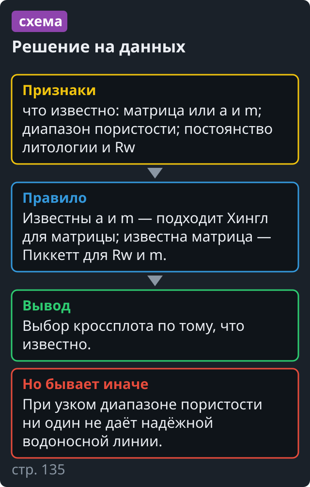
Решение на данных в шаге «Сильные и слабые стороны кроссплотов»: признаки, правило, вывод. класс B · схема
Часть 4 · шаг 31 из 45 · ≈2 мин · формат: карточки
Данные примера для кроссплотов
Table 7.4: Morrow Sandstone data for the crossplots. Какие данные использованы для графиков Пиккетта и Хингла в главе.
Почему этот шаг здесь
Рисунки 7.4 и 7.7 построены по одной таблице; её числа нужны для упражнений с кроссплотами. модельстр. 135
Суть
Таблица 7.4 — десять зон песчаника Morrow, округ Cimarron, Оклахома. Для каждой даны глубина, ρb, плотностная пористость и Rt. По ним построены рисунки 7.4 и 7.7. модельстр. 135
Как это работает
Механизм
Таблица 7.4 — данные для графика Пиккетта (рис. 7.4) и графика Хингла (рис. 7.7). Morrow Sandstone, Cimarron County, Oklahoma. модельстр. 135
Как делает специалист
Зоны 1–7 на глубинах 4400–4438 ft: ρb 2.30–2.44 g/cm³, пористость 0.127–0.212, Rt от 0.9 до 2.1 ohm-m. модельстр. 135
Зоны 8–10 на глубинах 4536, 4540, 4546 ft: ρb 2.30 g/cm³, пористость 0.212, Rt 40, 45 и 40 ohm-m. модельстр. 135
Нюансы
Таблица даёт только замеры и пористость; какие зоны водоносные, по самой таблице автор не пишет. модельстр. 135
Таблицы книги
Table 7.4. Data for use with Pickett plot (Figure 7.4) and Hingle plot (Figure 7.7). Morrow Sandstone, Cimarron County, Oklahoma стр. 135
Zone number
Depth (ft)
(g/cm³)
(decimal)
(ohm-m)
1
4400
2.38
0.163
1.7
2
4402
2.44
0.127
2.1
3
4410
2.35
0.181
1.3
4
4414
2.42
0.139
1.6
5
4426
2.42
0.139
1.8
6
4430
2.33
0.194
1.0
7
4438
2.30
0.212
0.9
8
4536
2.30
0.212
40
9
4540
2.30
0.212
45
10
4546
2.30
0.212
40
Частая ошибка
Таблица уже показывает, где нефть.
Что это значит для данных
У зон 7–10 одинаковая пористость 0.212, а Rt различается в десятки раз. модельстр. 135
Таблица — замеры и расчёт, интерпретации в ней нет. модельстр. 135
Зоны 8–10 с высоким Rt при той же пористости — кандидаты в углеводородные точки на кроссплоте. гипотезамодельстр. 135
Аналогия
Похоже на учебный датасет к задаче: числа даны, вывод надо сделать самому. модель
Где аналогия не работает: Датасет маленький, десять строк.
Новые понятия
плотностная пористость (φD) — Пористость, рассчитанная по плотностному каротажу
Источник
1 цитата автора со страницами
наблюдение. Таблица 7.4 — данные для графиков Пиккетта и Хингла по песчанику Morrow, Оклахома. пересказ модели
«Table 7.4. Data for use with Pickett plot (Figure 7.4) and Hingle plot (Figure 7.7).» — автор, стр. 135
Иллюстрации
Место шага «Данные примера для кроссплотов» в главе: на что опирается и куда ведёт. класс B · схема
Часть 4 · шаг 32 из 45 · ≈4 мин · формат: практикум на данных
Когда проницаемости по каротажу верить
Permeability from logs: conditions. Почему формулы проницаемости требуют неснижаемой водонасыщенности и сравнения с соседями.
Почему этот шаг здесь
Насыщенность найдена; остался вопрос о проницаемости, и формулы работают только при одном условии. модельстр. 134
Суть
Формулы проницаемости по каротажу верны только при неснижаемой водонасыщенности. Проверяют это по постоянству BVW. Значения сравнивают с соседними добывающими скважинами, а не берут как абсолютные. модельстр. 134
Как это работает
Механизм
Формулы проницаемости по каротажу верны только для пластов при неснижаемой водонасыщенности (Schlumberger, 1977). Проницаемость (permeability) — способность породы пропускать флюид. модельстр. 134
До применения формул геолог должен определить, находится ли пласт при неснижаемой водонасыщенности. Это зависит от значений BVW. модельстр. 134
Если BVW пласта постоянно (рис. 7.3a), зона при неснижаемой водонасыщенности. Если непостоянно (рис. 7.3b и 7.3c), — нет, и оценки проницаемости сомнительны. модельстр. 134
Как делает специалист
При оценке пласта значения проницаемости по каротажу, если возможно, сравнивают со значениями соседних добывающих скважин того же пласта. модельстр. 134
Оценки продуктивности можно строить на проницаемости по каротажу, если пласт сравнивают и с хорошей, и с плохой историей добычи соседних скважин. модельстр. 134
Сравнивая проницаемость по нескольким скважинам, геолог не использует её абсолютное значение. модельстр. 134
Разобраны четыре метода расчёта проницаемости по каротажу. модельстр. 134
Нюансы
Проницаемость по каротажу — оценка, выведенная из пористости и насыщенности, а не замер. модельстр. 134
Частая ошибка
Проницаемость по каротажу — точный замер, который можно применять в любом пласте.
Что это значит для данных
Проницаемость по каротажу — выведенная величина, верная только при неснижаемой водонасыщенности. модельстр. 134
При непостоянном BVW формулы дают сомнительные значения; использовать их как абсолютные нельзя. модельстр. 134
Флаг «BVW постоянно» стоит хранить рядом с расчётной проницаемостью. гипотезамодельстр. 134
Решение на данных
Признаки
постоянство BVW
ПравилоЕсли BVW постоянно — формулы проницаемости применимы; если нет — оценки сомнительны.ВыводМожно ли использовать проницаемость по каротажу.КонтрпримерДаже при постоянном BVW значения сравнивают с соседями, а не берут как абсолютные.
Аналогия
Похоже на модель, обученную на одном режиме: вне его прогнозы сомнительны. модель
Где аналогия не работает: Здесь границу режима проверяют по BVW.
Линза неэффективности
Входные данныеBVW по глубинам, данные соседних скважинРучные шагиПроверить постоянство BVW, сравнить с соседямиТочки сужденияДостаточно ли постоянно BVWВремяВ главе не указаноТипичные ошибкиБрать проницаемость по каротажу как абсолютную
Новые понятия
проницаемость (permeability) — Способность породы пропускать флюид
Источник
6 цитат автора со страницами
наблюдение. Формулы проницаемости по каротажу верны только для пластов при неснижаемой водонасыщенности. пересказ модели
«Log-derived permeability formulas are only valid for estimating permeability in formations at irreducible water saturation (Schlumberger, 1977).» — автор, стр. 134
наблюдение. Значения проницаемости по каротажу, если возможно, сравнивают с соседними добывающими скважинами того же пласта. пересказ модели
«When a geologist evaluates a formation by using log-derived permeability formulas, the permeability values, if possible, should be compared with values of nearby producing wells from the same formation.» — автор, стр. 134
вывод. Оценки продуктивности можно строить, если пласт сравнивают и с хорошей, и с плохой историей добычи соседей. пересказ модели
«Productivity estimates can be based on log-derived permeabilities if the formation evaluated is compared with both good and poor production histories in these nearby wells.» — автор, стр. 134
вывод. Сравнивая проницаемость по нескольким скважинам, геолог не использует её абсолютное значение. пересказ модели
«By using comparisons of log-derived permeabilities from several wells, a geologist is not using an absolute value for log-derived permeability.» — автор, стр. 134
наблюдение. Когда BVW пласта постоянно, зона при неснижаемой водонасыщенности. пересказ модели
«When the bulk volume water values of a formation are constant (Figure 7.3a), the zone is at irreducible water saturation.» — автор, стр. 134
вывод. Если BVW непостоянно, зона не при неснижаемой водонасыщенности, и оценки проницаемости сомнительны. пересказ модели
«If the values are not constant, a zone is not at irreducible water saturation (Figures 7.3b and 7.3c), and the estimates of permeability are suspect.» — автор, стр. 134
Иллюстрации
Место шага «Когда проницаемости по каротажу верить» в главе: на что опирается и куда ведёт. класс B · схемаРешение на данных в шаге «Когда проницаемости по каротажу верить»: признаки, правило, вывод. класс B · схема
Проверь себя
Часть 5 · шаг 33 из 45 · ≈2 мин · формат: интерактив
Простые формулы проницаемости
Wyllie and Rose (1950) and Timur (1968). Формулы Уайли — Роуза и Тимура.
Почему этот шаг здесь
Условия применимости ясны; первые два метода считают проницаемость из пористости и неснижаемой водонасыщенности. модельстр. 135
Суть
Уайли и Роуз дают формулу с разными константами для нефти средней плотности и сухого газа. Тимур даёт формулу с пористостью в степени 2.2. Обе используют Swirr. модельстр. 135
Как это работает
Механизм
Метод Уайли и Роуза (Wyllie and Rose) использует номограмму (рис. 7.8) или две формы формулы. модельстр. 135
Для нефтей средней плотности: K равно (250·φ³/Swirr)². Для сухого газа: K равно (79·φ³/Swirr)². модельстр. 135
K — проницаемость в миллидарси, φ — пористость, Swirr — Sw зоны при неснижаемой водонасыщенности. модельстр. 135
Как делает специалист
Метод Тимура (Timur): K равно (93·φ^2.2/Swirr)². модельстр. 135
Нюансы
В формулах Уайли и Роуза тип флюида учитывают сменой константы: 250 для нефти средней плотности, 79 для сухого газа. модельстр. 135
Формулы
Для нефтей средней плотности проницаемость равна квадрату (250·φ³/Swirr). модельстр. 135
K — проницаемость, millidarcys
φ — пористость
Swirr — неснижаемая водонасыщенность
Для сухого газа проницаемость равна квадрату (79·φ³/Swirr). модельстр. 135
K — проницаемость, millidarcys
φ — пористость
Swirr — неснижаемая водонасыщенность
По Тимуру проницаемость равна квадрату (93·φ^2.2/Swirr). модельстр. 135
K — проницаемость, millidarcys
φ — пористость
Swirr — неснижаемая водонасыщенность
Частая ошибка
Проницаемость прямо пропорциональна пористости.
Что это значит для данных
Проницаемость в этих формулах растёт как пористость в степени, а не линейно. модельстр. 135
Swirr должна быть именно неснижаемой; иначе формулы неприменимы. модельстр. 135
Две константы удобно хранить как параметр по типу флюида. гипотезамодельстр. 135
Аналогия
Похоже на эмпирическую формулу с подобранными коэффициентами для разных классов. модель
Где аналогия не работает: Коэффициенты получены по данным своего времени.
Новые понятия
миллидарси (md) — Единица проницаемости
Swirr — Водонасыщенность зоны при неснижаемой водонасыщенности
Источник
2 цитаты автора со страницами
наблюдение. Метод Уайли и Роуза использует номограмму или две формы формулы. пересказ модели
«This method for determining permeability utilizes a chart (Figure 7.8) or the two forms of the following formula:» — автор, стр. 135
наблюдение. Swirr — водонасыщенность зоны при неснижаемой водонасыщенности. пересказ модели
« water saturation () of a zone at irreducible water saturation» — автор, стр. 135
Иллюстрации
Место шага «Простые формулы проницаемости» в главе: на что опирается и куда ведёт. класс B · схема
Часть 5 · шаг 34 из 45 · ≈3 мин · формат: интерактив
Проницаемость с учётом плотности нефти
Coates and Dumanoir (1973). Как по Коутсу — Думануару считают проницаемость через константы C и W.
Почему этот шаг здесь
Простые формулы учитывают флюид косвенно; Коутс и Думануар вводят плотность углеводородов явно. модельстр. 135, 136
Суть
Формула Коутса — Думануара сложнее: плотность углеводородов входит в неё явно. Сначала считают константы C и W. Потом из них, пористости и Rw/Rt irr получают K. модельстр. 135, 136
Как это работает
Механизм
Более сложный метод — формула Коутса и Думануара (1973). В отличие от формул Уайли и Роуза, плотность углеводородов входит в уравнение явно, а не через смену константы. модельстр. 135
Нужны данные: Rt irr — истинное сопротивление пласта при неснижаемой водонасыщенности; ρh — плотность углеводородов в g/cm³; пористость. модельстр. 135, 136
Как делает специалист
Первый шаг — константы C и W. C равно 23 + 465·ρh − 188·ρh², уравнение 7.33. модельстр. 136
W равно корню квадратному из (3.75 − φ) + (log(Rw/Rt irr) + 2.2)²/2.0, уравнение 7.34. Rw — при пластовой температуре, Rt irr — глубокое сопротивление зоны при неснижаемой водонасыщенности. модельстр. 136
Затем K равно квадрату (C·φ^(2W)) / (W⁴·(Rw/Rt irr)), уравнение 7.35. K — в миллидарси (md), C — константа по плотности углеводородов. модельстр. 136
Нюансы
Как и другие формулы проницаемости по каротажу, эта верна только при неснижаемой водонасыщенности: Rt irr берут из такой зоны. модельстр. 136
Формулы
Константа C равна 23 плюс 465·ρh минус 188·ρh². модельстр. 136
C — константа формулы Коутса — Думануара
ρh — плотность углеводородов, g/cm³
Константа W равна корню квадратному из (3.75 − φ) плюс (log(Rw/Rt irr) + 2.2)² / 2.0. модельстр. 136
W — константа формулы Коутса — Думануара
φ — пористость
Rw — сопротивление пластовой воды при пластовой температуре
Rt irr — глубокое сопротивление зоны при неснижаемой водонасыщенности
Проницаемость равна квадрату C·φ^(2W), делённого на W⁴·(Rw/Rt irr). модельстр. 136
K — проницаемость, md
C — константа по плотности углеводородов
W — константа
φ — пористость
Rw — сопротивление пластовой воды
Rt irr — глубокое сопротивление зоны при неснижаемой водонасыщенности
Частая ошибка
Тип флюида на проницаемость по каротажу не влияет.
Что это значит для данных
Проницаемость по Коутсу — Думануару зависит от плотности углеводородов, пористости и отношения Rw/Rt irr. модельстр. 135, 136
Rt irr должен быть из зоны при неснижаемой водонасыщенности. модельстр. 135, 136
Расчёт удобно разбить на функции C(ρh), W(φ, Rw/Rt irr) и K. гипотезамодельстр. 135, 136
Аналогия
Похоже на расчёт с промежуточными признаками: сначала C и W, потом итог. модель
Где аналогия не работает: Промежуточные константы эмпирические, не физические.
Линза неэффективности
Входные данныеρh, φ, Rw, Rt irrРучные шагиПосчитать C, W, затем KТочки сужденияДействительно ли зона при неснижаемой водонасыщенностиВремяВ главе не указаноТипичные ошибкиБрать Rt не из зоны при неснижаемой водонасыщенности
Новые понятия
плотность углеводородов (ρh) — Плотность нефти или газа в пласте, g/cm³
Rt irr — Глубокое сопротивление зоны при неснижаемой водонасыщенности
Источник
4 цитаты автора со страницами
наблюдение. Формула Коутса и Думануара — более сложный метод расчёта проницаемости. пересказ модели
«A more complex method for calculating permeability is the Coates and Dumanoir (1973) formula.» — автор, стр. 135
наблюдение. В отличие от формул Уайли и Роуза, плотность углеводородов входит в уравнение явно. пересказ модели
«Unlike the Wyllie and Rose (1950) formulas, hydrocarbon density is explicitly part of the equation, instead of being indirectly accounted for by changing a constant.» — автор, стр. 135
наблюдение. Первый шаг — расчёт констант C и W. пересказ модели
«A first step in the Coates and Dumanoir permeability formula is calculation of values for two constants: and .» — автор, стр. 136
наблюдение. Найденные C и W используют для расчёта проницаемости. пересказ модели
«Once determined, the constants and can be used to calculate permeability.» — автор, стр. 136
Иллюстрации
Место шага «Проницаемость с учётом плотности нефти» в главе: на что опирается и куда ведёт. класс B · схема
Часть 5 · шаг 35 из 45 · ≈5 мин · формат: ролик-разбор
Почему глина ломает формулу Арчи
Shaly sand analysis: shale, clay and dual water. Как развивались модели глинистых песчаников: от объёма глин к двойной воде.
Почему этот шаг здесь
Формула Арчи разобрана для чистых пород; в глинистых песчаниках у неё есть пределы, и для них придумали другие модели. модельстр. 136
Суть
Вскоре после Арчи стало ясно, что метод ограничен в глинистых песчаниках. Сначала уравнение правили через объём глин. Модели Ваксмана — Смитса и двойной воды используют электрические свойства глинистых минералов. модельстр. 136
Как это работает
Механизм
Вскоре после работ Арчи стало ясно, что у метода есть пределы, особенно в пластах с глинами и/или глинистыми минералами. Такие пласты обычно называют глинистыми песчаниками (shaly sands). модельстр. 136
Ранняя литература обычно говорила о глинах (shale), и уравнение Арчи меняли, вводя объём глин (среди других параметров). модельстр. 136
Позже поняли, что shale и clay — разное. Глинистые песчаники обычно — не пески с примесью глинистых пород, а пески, содержащие глинистые минералы (clay). Эти минералы могут сильно отличаться от глинистых минералов соседних глин. модельстр. 136
Литература и методики часто используют «объём глин» и «объём глинистых минералов» как синонимы. Большинство методик работают с объёмом глин, но немногие, в том числе Ваксмана — Смитса и двойной воды, используют электрические свойства глинистых минералов пласта. модельстр. 136
Как делает специалист
С конца 1960-х работы Waxman и Smits (1968) и Waxman и Thomas (1974) помогли понять физические причины отклика приборов в глинистых песчаниках и построить модели ближе к реальности. модельстр. 136
Clavier и др. (1977) на их основе ввели модель двойной воды (dual water). Она постулирует два типа воды: неподвижный слой у поверхности глинистых минералов (связанная вода) и подвижную воду, которую могут вытеснить углеводороды (свободная вода). модельстр. 136
Нюансы
Модель двойной воды сложнее в применении, но продолжает набирать популярность: она ближе к откликам глинистых песчаников в самых разных условиях. модельстр. 136
Частая ошибка
Глинистый песчаник — это просто песок, перемешанный с соседней глиной.
Что это значит для данных
Объём глин и объём глинистых минералов в данных часто смешаны, хотя это разные величины. модельстр. 136
Свойства глинистых минералов в песчанике могут отличаться от соседних глин; калибровка по глинам может не подойти. модельстр. 136
Стоит явно помечать, какая модель — по объёму глин или двойной воды — дала Sw. гипотезамодельстр. 136
Аналогия
Похоже на модель, которая работала на чистых данных и потребовала поправок для «загрязнённых». модель
Где аналогия не работает: Поправки здесь — новые физические модели, а не статистическая коррекция.
Как это делается сейчас
Автор отмечает, что модель двойной воды продолжает набирать популярность. гипотезамодельстр. 136
глинистые минералы (clay) — Минералы с особыми электрическими свойствами, которые могут быть в песчанике
модель двойной воды (dual water) — Модель, где в порах связанная и свободная вода
связанная вода (bound water) — Неподвижный слой воды у поверхности глинистых минералов
свободная вода (free water) — Подвижная вода, которую могут вытеснить углеводороды
Источник
6 цитат автора со страницами
наблюдение. Не прошло много времени после работ Арчи, как стали ясны пределы метода в пластах с глинами; такие пласты обычно называют глинистыми песчаниками. пересказ модели
«Not long after the work of Archie and others in devising a method to quantify water saturation from logs, it became clear that there were limitations to the method, especially in formations containing shale and/or clay and commonly referred to as *shaly sands*.» — автор, стр. 136
наблюдение. Глинистые песчаники обычно — пески, содержащие глинистые минералы, а не пески с примесью глинистых пород. пересказ модели
«As our understanding of geological processes matured, it became understood that *shale* and *clay* are different and that shaly sands are usually not just sands with shales mixed in but sands that contain clays.» — автор, стр. 136
наблюдение. Минералы в песчанике могут сильно отличаться от минералов соседних глин. пересказ модели
«These clays could be very different from the clays present in the shales near those sands of interest.» — автор, стр. 136
наблюдение. Литература часто использует объём глин и объём глинистых минералов как синонимы. пересказ модели
«Again, the literature and our interpretive techniques commonly use the terms *shale volume* and *clay volume* interchangeably.» — автор, стр. 136
допущение. Модель двойной воды постулирует связанную неподвижную воду у глинистых минералов и свободную подвижную воду. пересказ модели
«The dual water model postulates two different types of water in a shaly formation, a immovable water layer next to the clay surfaces (bound water) and movable water that can be displaced by hydrocarbons (free water).» — автор, стр. 136
наблюдение. Модель двойной воды сложнее, но набирает популярность, так как ближе к откликам в самых разных условиях. пересказ модели
«This technique, while more complex in its use, continues to gain popularity because of its closer approximation to the responses of shaly sands in a wide variety of conditions.» — автор, стр. 136
Иллюстрации
Место шага «Почему глина ломает формулу Арчи» в главе: на что опирается и куда ведёт. класс B · схемаАнимация логики шага (утверждения шага по порядку), 18 с, без звука. класс B · схема · шаблон process_state; текст и страницы — из слоя
Часть 5 · шаг 36 из 45 · ≈4 мин · формат: практикум на данных
Как глина путает нефть с водой
Shale effects on log interpretation. Как глина искажает Sw и пористость и почему переоценка глин опасна.
Почему этот шаг здесь
Модели названы; теперь, к чему глина приводит на практике и где ловушка. модельстр. 136
Суть
Глина искажает Sw и пористость, причём не только в песчаниках. Главное — она уменьшает контраст сопротивления между углеводородами и водой. Переоценка глин может сделать водоносную зону похожей на продуктивную. модельстр. 136
Как это работает
Механизм
Глины или глинистые минералы в коллекторе могут давать ошибочные Sw и пористость по каротажу. Это бывает не только в песчаниках, но и в известняках и доломитах. модельстр. 136
Практически все замеры так или иначе зависят от глин. По Хилчи (Hilchie, 1978), самое значимое влияние глин — уменьшение контраста сопротивления между нефтью или газом и водой. модельстр. 136
Как делает специалист
Если глин в коллекторе достаточно, может быть очень трудно или даже невозможно определить, продуктивна ли зона. модельстр. 136
По Хилчи, чтобы глины заметно повлияли на Sw по каротажу, их содержание должно быть больше 10 to 15%. модельстр. 136
Нюансы
Все формулы для глинистых песчаников снижают Sw по сравнению с расчётом без учёта глин. модельстр. 136
Это снижение — источник ошибки: если геолог переоценит содержание глин, водоносная зона может показаться углеводородной. модельстр. 136
Частая ошибка
Низкое сопротивление всегда означает воду.
Что это значит для данных
Глина уменьшает разницу сопротивлений нефти и воды, и признаки углеводородов слабеют. модельстр. 136
Переоценка объёма глин занижает Sw и даёт ложные продуктивные зоны. модельстр. 136
Чувствительность Sw к объёму глин стоит показывать рядом с результатом. гипотезамодельстр. 136
Решение на данных
Признаки
содержание глин
оценка объёма глин
ПравилоЕсли глин больше 10 to 15%, они заметно влияют на Sw; переоценка глин занижает Sw.ВыводУчитывать глины осторожно.КонтрпримерПри переоценке глин водоносная зона может показаться углеводородной.
Аналогия
Похоже на шум, который уменьшает контраст сигнала: при сильном шуме классы не разделить. модель
Где аналогия не работает: Поправка на шум здесь сама может создать ложный сигнал, если её переоценить.
Линза неэффективности
Входные данныеОбъём глин, сопротивление, пористостьРучные шагиОценить содержание глин и выбрать формулуТочки сужденияНе переоценено ли содержание глинВремяВ главе не указаноТипичные ошибкиПереоценка глин делает воду похожей на нефть
Новые понятия
контраст сопротивления — Разница сопротивлений нефтегазоносного и водоносного пласта
Источник
7 цитат автора со страницами
наблюдение. Глины или глинистые минералы в коллекторе могут давать ошибочные Sw и пористость по каротажу. пересказ модели
«The presence of shale or clay minerals in a reservoir can cause erroneous values for water saturation and porosity derived from logs.» — автор, стр. 136
наблюдение. Ошибочные значения не ограничены песчаниками: они бывают и в известняках и доломитах. пересказ модели
«These erroneous values are not limited to sandstones but also occur in limestones and dolomites.» — автор, стр. 136
наблюдение. Самое значимое влияние глин — уменьшение контраста сопротивления между углеводородами и водой. пересказ модели
«Hilchie (1978) notes that the most significant effect of shale in a formation is to reduce the resistivity contrast between oil or gas, and water.» — автор, стр. 136
вывод. Если глин достаточно, может быть очень трудно или даже невозможно определить продуктивность зоны. пересказ модели
«The net result is that if enough shale is present in a reservoir, it may be very difficult, or perhaps impossible, to determine if a zone is productive.» — автор, стр. 136
наблюдение. Глины заметно влияют на Sw, если их содержание больше 10 to 15%. пересказ модели
«Hilchie (1978) suggests that for shale to significantly affect log-derived water saturations, shale content must be greater than 10 to .» — автор, стр. 136
наблюдение. Все формулы для глинистых песчаников снижают Sw по сравнению с расчётом, где влиянием глин пренебрегают. пересказ модели
«Remember that all shaly sandstone formulas reduce the water saturation value from the value that would be calculated if shale effect were ignored.» — автор, стр. 136
вывод. Если переоценить содержание глин, водоносная зона может показаться углеводородной. пересказ модели
«However, this lowering of water saturation can be a problem in log evaluation, because, if a geologist overestimates shale content, a water-bearing zone might appear to be a hydrocarbon-bearing zone.» — автор, стр. 136
Иллюстрации
Место шага «Как глина путает нефть с водой» в главе: на что опирается и куда ведёт. класс B · схема
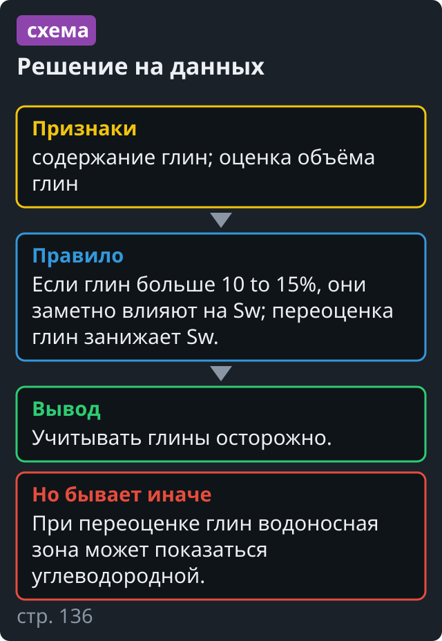
Решение на данных в шаге «Как глина путает нефть с водой»: признаки, правило, вывод. класс B · схема
Проверь себя
Часть 5 · шаг 37 из 45 · ≈3 мин · формат: практикум на данных
Подписи к схеме просмотра
Figure 7.1: scanning flowchart notes. Что добавляет подпись к рисунку 7.1.
Почему этот шаг здесь
Схема просмотра разобрана в начале главы; подпись к рисунку 7.1 добавляет оговорки и связь с кроссплотом нейтрон-плотность. модельстр. 140
Суть
Рисунок 7.1 — блок-схема поиска интересных зон, продуктивных и водоносных. В сочетании с экспресс-методом нейтрон-плотность она помогает определить литологию. Сноски предупреждают: похожие на глину зоны и низкоомные глинистые зоны могут быть продуктивными. модельстр. 140
Как это работает
Механизм
Рисунок 7.1 — блок-схема просмотра диаграмм для поиска интересных зон (и продуктивных, и водоносных). У неё два пути: для обломочных пород и для карбонатов. модельстр. 140
Обломочные: главный обзорный замер — сопротивление. Коллекторы обычно окружены глинами, чьё сопротивление меняется с глубиной постепенно. Разный флюид обычно даёт сопротивления, заметные на этом фоне. модельстр. 140
Карбонаты: сопротивление обычно сильно меняется с типом породы, и глин для сравнения часто мало. Поэтому главный обзорный замер — пористость: сначала находят пористые зоны. модельстр. 140
Как делает специалист
Если есть нейтронный и плотностной каротаж, просмотр вместе с экспресс-методом нейтрон-плотность (глава 4) позволяет определить литологию, а иногда и тип флюида. модельстр. 140
Нюансы
Сноски: зоны, похожие на глины, могут быть радиоактивными продуктивными зонами. Глинистые зоны могут давать нефть или газ, даже если сопротивление низкое. модельстр. 140
Частая ошибка
Высокая радиоактивность всегда означает глину, а не коллектор.
Что это значит для данных
Обзорный фильтр полезно дополнять кроссплотом нейтрон-плотность для литологии. модельстр. 140
Фильтр «похоже на глину» и «низкое сопротивление» может отбросить продуктивные зоны. модельстр. 140
Радиоактивные зоны с пористостью стоит не отбрасывать, а помечать для проверки. гипотезамодельстр. 140
Аналогия
Похоже на правило фильтрации с известными исключениями, которые надо проверять вручную. модель
Где аналогия не работает: Исключения здесь — геологические, их нельзя перечислить заранее.
Новые понятия
радиоактивная продуктивная зона — Коллектор с повышенной радиоактивностью, похожий на глину по гамма-каротажу
Источник
4 цитаты автора со страницами
наблюдение. Блок-схема ищет интересные зоны, и продуктивные, и водоносные, по двум путям. пересказ модели
«Figure 7.1. Flowchart for scanning logs to identify zones of interest (both pay and wet).» — автор, стр. 140
наблюдение. Если нейтронный и плотностной каротаж есть, просмотр вместе с экспресс-методом нейтрон-плотность позволяет определить литологию, а иногда и тип флюида. пересказ модели
«Using this scanning technique in combination with the neutron-density quick-look technique discussed in Chapter 4 (if those logs are available) allows one to identify lithology (and sometimes fluid type) in the course of identifying the zones of interest.» — автор, стр. 140
наблюдение. Зоны, похожие на глины, могут быть радиоактивными продуктивными зонами. пересказ модели
«¹ Zones that appear to be shales might be radioactive productive zones.» — автор, стр. 140
наблюдение. Глинистые зоны могут давать нефть или газ, даже если сопротивление низкое. пересказ модели
«² Shaly zones might produce oil or gas even if they have low resistivity.» — автор, стр. 140
Иллюстрации
Место шага «Подписи к схеме просмотра» в главе: на что опирается и куда ведёт. класс B · схема
Часть 5 · шаг 38 из 45 · ≈2 мин · формат: практикум на данных
Схема всей интерпретации
Figure 7.2: flowchart for interpretation. Как сырые данные превращаются в итоговые величины интерпретации.
Почему этот шаг здесь
Отдельные методы разобраны; рисунок 7.2 показывает, как сырые данные проходят до итоговых величин. модельстр. 140
Суть
Слева — источники сырых данных: каротаж и другие данные скважины. В центре — величины, полученные из них. Справа — итоговые величины; пористость и объём глин можно получить несколькими путями. модельстр. 140
Источники сырых данных — каротаж и другая информация по скважине — в левом столбце. Часто полученная из них информация (центральный столбец) идёт в расчёты итоговых величин (правый столбец). модельстр. 140
Как делает специалист
Схема показывает, что пористость и объём глин (Vshale) можно рассчитать из сырых данных несколькими путями. модельстр. 140
Главы, где объяснены расчёты, указаны на схеме. модельстр. 140
Частая ошибка
Каждая итоговая величина получается из одной кривой.
Пористость и объём глин имеют несколько путей расчёта; надо фиксировать, какой выбран. модельстр. 140
Граф расчёта удобно хранить как конвейер с версиями шагов. гипотезамодельстр. 140
Аналогия
Похоже на конвейер данных: источники, преобразования, витрины. модель
Где аналогия не работает: Здесь шаги — физические модели с допущениями.
Новые понятия
объём глин (Vshale) — Доля глин в объёме породы
Источник
2 цитаты автора со страницами
наблюдение. Сырые данные, каротаж и другая информация по скважине, показаны в левом столбце. пересказ модели
«The sources of raw data, both well logs and other well-bore information, are shown in the left column.» — автор, стр. 140
наблюдение. Пористость и объём глин можно рассчитать из сырых данных несколькими путями. пересказ модели
«The chart shows that there are several ways to calculate porosity () and shale volume () from the raw data.» — автор, стр. 140
Иллюстрации
Место шага «Схема всей интерпретации» в главе: на что опирается и куда ведёт. класс B · схема
Часть 5 · шаг 39 из 45 · ≈5 мин · формат: практикум на данных
Три скважины на графике Бакла
Figure 7.3: Buckles plots from Red River B-zone. Как разброс BVW на графике Бакла связан с долей нефти в добыче.
Почему этот шаг здесь
График Бакла введён; три примера показывают связь разброса BVW с долей воды в добыче. модельстр. 141
Суть
Добыча воды влияет на экономику, поэтому важно знать BVW. Скважина с BVW 0.04–0.05 даёт 96% нефти. Скважина с разбросом BVW даёт только воду. модельстр. 141
Как это работает
Механизм
Рисунок 7.3 — графики Бакла (пористость против Sw). модельстр. 141
Добыча воды может влиять на экономику объекта, поэтому важно знать BVW и находится ли пласт при неснижаемой водонасыщенности. модельстр. 141
Графики взяты по Ordovician Red River B-zone, месторождение Beaver Creek, округ Golden Valley, Северная Дакота (по Jaafar, 1980). модельстр. 141
При Sw и пористости в линейных осях точки равного BVW ложатся на гиперболы. Ряд точек вдоль одной гиперболы показывает постоянное BVW: пласт близок к неснижаемой водонасыщенности, такой коллектор не дал бы воды. модельстр. 141
С ростом количества пластовой воды значения BVW разбегаются от гипербол: воды больше, чем пласт держит капиллярным давлением. Sw уже не у неснижаемой, и воды добывается больше относительно нефти. модельстр. 141
Как делает специалист
Рис. 7.3a — почти постоянное BVW. Пласт даёт 96% нефти. Все точки лежат между 0.04 и 0.05 BVW: пласт очень близок к неснижаемой водонасыщенности или при ней. модельстр. 141
Рис. 7.3b — скважина даёт 68% нефти. Около половины точек около BVW 0.04, у другой половины BVW выше: это подвижная вода. модельстр. 141
Рис. 7.3c — скважина не даёт нефти, только воду. Значения BVW разбросаны от гипербол: пласт не при неснижаемой водонасыщенности. модельстр. 141
Частая ошибка
Если в пласте много воды по каротажу, он обязательно даст воду.
Что это значит для данных
Кучность BVW вдоль гиперболы согласуется с долей нефти в добыче: 96%, 68% и одна вода. модельстр. 141
Половина точек с высоким BVW уже указывает на подвижную воду. модельстр. 141
Долю точек выше гиперболы можно использовать как числовой признак риска обводнения. гипотезамодельстр. 141
Решение на данных
Признаки
разброс BVW вокруг гиперболы
ПравилоТочки на одной гиперболе — неснижаемая водонасыщенность и безводная добыча; разброс — подвижная вода.ВыводОценка риска добычи воды.КонтрпримерСкважина 7.3b: половина точек на гиперболе, но добыча 68% нефти, с водой.
Аналогия
Похоже на диаграмму рассеяния, где плотность точек вокруг линии показывает стабильность процесса. модель
Где аналогия не работает: Здесь разброс — физика пласта, а не шум.
Источник
7 цитат автора со страницами
наблюдение. Добыча воды может влиять на экономику, поэтому важно знать BVW и неснижаемость водонасыщенности. пересказ модели
«Because production of water in a well can affect a prospect's economics, it is important to know the bulk volume water and whether the formation is at irreducible water saturation ().» — автор, стр. 141
вывод. Точки вдоль одной гиперболы показывают постоянное BVW и близость к неснижаемой водонасыщенности. пересказ модели
«A series of points plotting along a particular hyperbolic curve indicates that the bulk volume water is constant and that the formation is close to irreducible water saturation.» — автор, стр. 141
наблюдение. С ростом количества пластовой воды значения BVW разбегаются от гипербол. пересказ модели
«As the amount of formation water increases, the bulk volume water values become scattered from the hyperbolic curves and the formation has more water than it can hold by capillary pressure.» — автор, стр. 141
наблюдение. Рисунок 7.3a — пример почти постоянного BVW; пласт даёт 96% нефти. пересказ модели
«Figure 7.3a is an example of nearly constant BVW. The formation shown produces 96% oil.» — автор, стр. 141
наблюдение. На рисунке 7.3a все точки лежат между 0.04 и 0.05 BVW. пересказ модели
«Note that all the points plot between 0.04 and 0.05 BVW.» — автор, стр. 141
наблюдение. Скважина рисунка 7.3b даёт 68% нефти; около половины точек около 0.04, у остальных BVW выше. пересказ модели
«Figure 7.3b shows a well producing 68% oil. About half the points cluster around a BVW value of 0.04, but the other half have higher values of BVW, indicating moveable water.» — автор, стр. 141
наблюдение. Скважина рисунка 7.3c не даёт нефти, BVW разбросано: пласт не при неснижаемой водонасыщенности. пересказ модели
«Figure 7.3c shows a well producing no oil (all water).» — автор, стр. 141
Иллюстрации
Место шага «Три скважины на графике Бакла» в главе: на что опирается и куда ведёт. класс B · схема
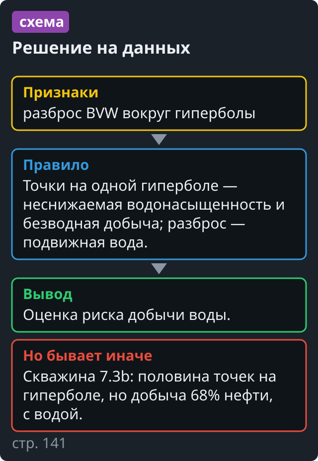
Решение на данных в шаге «Три скважины на графике Бакла»: признаки, правило, вывод. класс B · схема
Проверь себя
Часть 5 · шаг 40 из 45 · ≈4 мин · формат: практикум на данных
Пример: Rw по графику Пиккетта
Figure 7.4: Pickett plot of the Morrow Sandstone. Как по водоносной линии на рисунке 7.4 рассчитали Rw.
Почему этот шаг здесь
Метод Пиккетта разобран в теории; рисунок 7.4 показывает расчёт Rw на данных таблицы 7.4. модельстр. 142
Суть
Водоносную линию провели с наклоном −1/2, то есть m = 2. При пористости 10% сопротивление линии 4.6 ohm-m. Отсюда Rw = 0.046 ohm-m при пластовой температуре. модельстр. 142
Как это работает
Механизм
Рисунок 7.4 — график Пиккетта с водоносными и углеводородными зонами скважины. Данные — Morrow Sandstone, Cimarron County, Oklahoma (таблица 7.4). модельстр. 142
Плотностную пористость рассчитали при плотности матрицы 2.65 g/cm³ и плотности флюида 1.0 g/cm³. Водоносную линию (Sw = 100%) провели через скопление точек с наклоном −1/2 (m = 2). модельстр. 142
Пересечение водоносной линии при пористости 100% (DPHI = 1.0) — это a·Rw. Если бы оно попадало на график, его прочитали бы прямо. Здесь его находят по Ro с помощью формулы Rw = Ro·φ^m/a. модельстр. 142
Ro — сопротивление нетронутой водоносной зоны; для всех точек водоносной линии Rt = Ro. модельстр. 142
Как делает специалист
Порядок расчёта: при какой-то пористости читают Ro по водоносной линии. Здесь при пористости 10% (DPHI = 0.10) Ro = 4.6 ohm-m. модельстр. 142
Принимают коэффициент извилистости: здесь a = 1.0. Показатель цементации находят по графику: здесь m = 2.0. модельстр. 142
Подстановкой в формулу получают Rw = 0.046 ohm-m при пластовой температуре. модельстр. 142
Нюансы
Из-за узкого диапазона пористости и разброса точек можно обосновать и другие m — от 1.8 до 2.15. модельстр. 142
Формулы
Rw равно Ro, умноженному на φ^m и делённому на a. модельстр. 142
Rw — сопротивление пластовой воды, ohm-m
Ro — сопротивление водоносной линии, ohm-m
φ — пористость
m — показатель цементации
a — коэффициент извилистости
Подстановка: 4.6 умножить на 0.10 в степени m и разделить на 1.0. модельстр. 142
Rw — сопротивление пластовой воды, ohm-m
Частая ошибка
Показатель m по графику определяется однозначно.
Что это значит для данных
Rw выведено из точки водоносной линии, принятого a и m по наклону. модельстр. 142
При узком диапазоне пористости m от 1.8 до 2.15 тоже обоснованы, и Rw меняется вместе с m. модельстр. 142
Расчёт Rw стоит повторять для крайних m, чтобы увидеть диапазон. гипотезамодельстр. 142
Аналогия
Похоже на экстраполяцию тренда за пределы графика по одной точке и наклону. модель
Где аналогия не работает: Наклон здесь неточен из-за узкого диапазона данных.
Линза неэффективности
Входные данныеГрафик Пиккетта, aРучные шагиПрочитать Ro при пористости 0.10, подставить в формулуТочки сужденияКакое m выбрать при узком диапазонеВремяВ главе не указаноТипичные ошибкиСчитать m однозначным при малом разбросе пористости
Новые понятия
DPHI — Обозначение плотностной пористости на диаграмме
Источник
5 цитат автора со страницами
допущение. Плотностную пористость рассчитали при плотности матрицы 2.65 g/cm³ и флюида 1.0 g/cm³. пересказ модели
«Density porosity was calculated assuming a matrix density of and a fluid density of .» — автор, стр. 142
вывод. Из-за узкого диапазона пористости и разброса точек могут быть обоснованы m от 1.8 до 2.15. пересказ модели
«(Because of the limited porosity range of the points and their scatter, other values of from 1.8 to 2.15 could be justified.)» — автор, стр. 142
наблюдение. Для всех точек водоносной линии Rt равно Ro. пересказ модели
«Remember that is the resistivity in the undisturbed, water-bearing zone, and for all points on the water-bearing line .» — автор, стр. 142
наблюдение. Ro читают при некоторых значениях пористости; здесь при пористости 10% оно 4.6 ohm-m. пересказ модели
«For some porosity value, read the value of from the water-bearing line on the crossplot.» — автор, стр. 142
наблюдение. Rw = 0.046 ohm-m при пластовой температуре. пересказ модели
« ohm-m at formation temperature» — автор, стр. 142
Иллюстрации
Место шага «Пример: Rw по графику Пиккетта» в главе: на что опирается и куда ведёт. класс B · схема
Проверь себя
Часть 6 · шаг 41 из 45 · ≈3 мин · формат: практикум на данных
Пример: Sw точки на графике Пиккетта
Figure 7.4: saturation lines and anomalous points. Как в примере Пиккетта построили линию Sw = 50% и нашли Sw углеводородной точки.
Почему этот шаг здесь
Rw по рисунку 7.4 найдено; теперь в том же примере строят линии Sw и считают Sw углеводородной точки. модельстр. 142
Суть
Линии Sw строят, умножая Ro на множители таблицы 7.2. Для Sw = 50% при Ro = 4.6 и множителе 4 пересечение 18.4. Sw точки с Rt 40 ohm-m считают по формуле при Ro = 0.80. модельстр. 142
Как это работает
Механизм
Линии водонасыщенности строят по значению Ro и множителям таблицы 7.2. Множители — для n = 2.0. модельстр. 142
Для каждой линии Ro умножают на множитель, получают пересечение и проводят от него линию, параллельную водоносной. модельстр. 142
Как делает специалист
Например, для линии Sw = 50%: если Ro (при DPHI = 0.10) равно 4.6, а множитель по таблице 7.2 — 4, то пересечение линии 50% (при DPHI = 0.10) — 18.4. модельстр. 142
Чтобы найти Sw аномальных точек точнее, чем на глаз по графику, используют формулу Sw = (Ro/Rt)^(1/n). модельстр. 142
Ro берут на водоносной линии при той же пористости, что у точки. Для двух интересных точек (с одинаковой пористостью) Ro = 0.80 ohm-m. Для точки с сопротивлением 40 ohm-m Sw равна корню квадратному из 0.8/40; результат записан в последней формуле примера. модельстр. 142
Для сравнения интерпретации рисунок 7.7 — график Хингла по тем же данным. модельстр. 142
Нюансы
Формула точнее, чем оценка Sw на глаз по линиям графика. модельстр. 142
Формулы
Водонасыщенность точки равна (Ro/Rt) в степени 1/n. модельстр. 142
Sw — водонасыщенность
Ro — сопротивление водоносной линии при пористости точки, ohm-m
Rt — сопротивление точки, ohm-m
n — показатель насыщенности
Подстановка: (0.8/40) в степени 1/2.0. модельстр. 142
Sw — водонасыщенность
Результат: Sw = 0.14. модельстр. 142
Sw — водонасыщенность
Частая ошибка
Высокое Rt точки само по себе уже даёт Sw без водоносной линии.
Что это значит для данных
Sw точки — корень из Ro/Rt при одинаковой пористости и n = 2.0, здесь из 0.8/40. модельстр. 142
Ro надо брать при пористости самой точки; иначе Sw будет неверной. модельстр. 142
Расчёт Sw по графику легко проверить кодом по таблице 7.4. гипотезамодельстр. 142
Аналогия
Похоже на расчёт отклонения от базовой линии в той же точке оси x. модель
Где аналогия не работает: Отклонение здесь переводят в Sw через степень 1/n.
Новые понятия
аномальная точка — Точка, лежащая в стороне от водоносной линии
Источник
4 цитаты автора со страницами
наблюдение. Множители таблицы 7.2 — для показателя насыщенности n = 2.0. пересказ модели
«The multipliers are for a saturation exponent () of 2.0.» — автор, стр. 142
наблюдение. Если Ro при DPHI = 0.10 равно 4.6, а множитель 4, пересечение линии Sw = 50% — 18.4. пересказ модели
«To plot the line for water saturation, for example, if (at ) is 4.6 and the multiplier (from Table 7.2) is 4, the -intercept for the water saturation line (at ) is 18.4.» — автор, стр. 142
наблюдение. Для двух интересных точек с одинаковой пористостью Ro = 0.80 ohm-m. пересказ модели
«For the two points of interest (both having the same porosity), ohm-m.» — автор, стр. 142
наблюдение. Рисунок 7.7 — график Хингла по тем же данным для сравнения. пересказ модели
«For comparison interpretation, Figure 7.7 is a Hingle plot with the same data shown.» — автор, стр. 142
Иллюстрации
Место шага «Пример: Sw точки на графике Пиккетта» в главе: на что опирается и куда ведёт. класс B · схема
Часть 6 · шаг 42 из 45 · ≈3 мин · формат: практикум на данных
Готовые сетки Хингла
Figures 7.5 and 7.6: Hingle grids. Какие сетки Хингла даны для песчаников и карбонатов.
Почему этот шаг здесь
Сетки Хингла упомянуты в теории; рисунки 7.5 и 7.6 — сами сетки с их параметрами. модельстр. 143, 144
Суть
Рисунок 7.5 — сетка Хингла для песчаников, ось y построена при a = 1.0 и m = 2.0. Рисунок 7.6 — для карбонатов, при a = 0.62 и m = 2.15. Обе — палетки Western Atlas 1995 года. модельстр. 143, 144
Как это работает
Механизм
Рисунок 7.5 — график Хингла, обычно используемый для песчаников (Western Atlas International, Inc., 1995, Chart 7-79). Ось y построена при a = 1.0 и m = 2.0. модельстр. 143
Рисунок 7.6 — график Хингла, обычно используемый для карбонатов (Western Atlas International, Inc., 1995, Chart 7-80). Ось y построена при a = 0.62 и m = 2.15. модельстр. 144
Нюансы
Слово «generally» в подписях: сетки обычно используют для этих пород, но a и m породы могут отличаться. модельстр. 143, 144
Частая ошибка
Одна сетка Хингла подходит для любой породы.
Что это значит для данных
Каждая сетка зашивает свою пару a и m. модельстр. 143, 144
Применение сетки песчаников к карбонату переносит неверные a и m в Sw. модельстр. 143, 144
В программе пару a, m стоит выбирать явно по литологии. гипотезамодельстр. 143, 144
Решение на данных
Признаки
литология
ПравилоПесчаник — сетка рисунка 7.5 (a = 1.0, m = 2.0); карбонат — сетка рисунка 7.6 (a = 0.62, m = 2.15).ВыводВыбор палетки.КонтрпримерЕсли a и m породы иные, палетка неточна.
Аналогия
Похоже на шаблоны с разными настройками по умолчанию для разных типов данных. модель
Где аналогия не работает: Настройки здесь — свойства породы, а не предпочтения.
Как это делается сейчас
Палетки 1995 года; в программах сетку строят под любые a и m. гипотезамодельстр. 143, 144
Новые понятия
палетка (chart) — Готовый график для графического решения формулы
Источник
2 цитаты автора со страницами
наблюдение. Сетка рисунка 7.5 обычно используется для песчаников; ось y построена при a = 1.0 и m = 2.0. пересказ модели
«Figure 7.5. Hingle plot (saturation crossplot or resistivity-porosity crossplot) generally used for sandstones.» — автор, стр. 143
наблюдение. Сетка рисунка 7.6 обычно используется для карбонатов; ось y построена при a = 0.62 и m = 2.15. пересказ модели
«Figure 7.6. Hingle plot (saturation crossplot or resistivity-porosity crossplot) generally used for carbonates.» — автор, стр. 144
Иллюстрации
Место шага «Готовые сетки Хингла» в главе: на что опирается и куда ведёт. класс B · схема
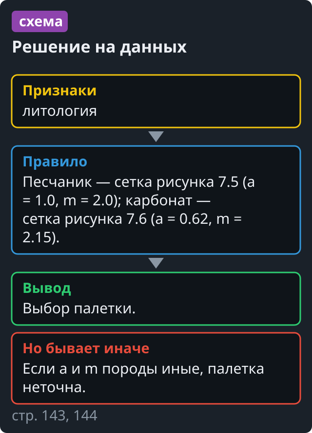
Решение на данных в шаге «Готовые сетки Хингла»: признаки, правило, вывод. класс B · схема
Часть 6 · шаг 43 из 45 · ≈4 мин · формат: практикум на данных
Пример: матрица и Rw по Хинглу
Figure 7.7: Hingle plot of the Morrow Sandstone, matrix and Rw. Как на рисунке 7.7 нашли плотность матрицы 2.65 и Rw = 0.041 ohm-m.
Почему этот шаг здесь
Те же данные, что на рисунке 7.4, теперь на графике Хингла: из него получают и матрицу, и Rw. модельстр. 145
Суть
Взята сетка песчаников a = 1.0, m = 2.0, по оси x — объёмная плотность. Водоносная линия пересекает ось при 2.65 g/cm³ — это плотность матрицы. При пористости 10% Ro = 4.1 ohm-m, откуда Rw = 0.041 ohm-m. модельстр. 145
Как это работает
Механизм
Рисунок 7.7 — график Хингла с водоносными и углеводородными зонами скважины. Данные — Morrow Sandstone, Cimarron County, Oklahoma (таблица 7.4). модельстр. 145
Как обычные параметры для песчаников выбрана сетка Хингла с a = 1.0 и m = 2.0. модельстр. 145
Ось x размечена в объёмной плотности, точки нанесены по ней. Водоносная линия через скопление точек пересекает ось при 2.65 g/cm³ — значении плотности матрицы пласта. модельстр. 145
Как делает специалист
Rw находят по формуле Rw = Ro·φ^m/a. модельстр. 145
При какой-то пористости читают Ro по водоносной линии. Здесь при пористости 10% (объёмная плотность 2.485 g/cm³) Ro = 4.1 ohm-m. модельстр. 145
a и m приняты выбором сетки. Подстановкой получают Rw = 0.041 ohm-m при пластовой температуре. модельстр. 145
Нюансы
Из-за узкого диапазона пористости и разброса точек можно обосновать и другие значения плотности матрицы. модельстр. 145
Формулы
Rw равно Ro, умноженному на φ^m и делённому на a. модельстр. 145
Rw — сопротивление пластовой воды, ohm-m
Ro — сопротивление водоносной линии, ohm-m
φ — пористость
m — показатель цементации
a — коэффициент извилистости
Подстановка: 4.1 умножить на 0.10 в степени 2.0 и разделить на 1.0. модельстр. 145
Rw — сопротивление пластовой воды, ohm-m
Частая ошибка
Два кроссплота по одним данным обязаны дать одинаковое Rw.
Что это значит для данных
По тем же данным Хингл дал Rw = 0.041 ohm-m, а Пиккетт — немного большее значение. модельстр. 145
Матрица 2.65 по Хинглу при узком диапазоне пористости не единственно возможная. модельстр. 145
Расхождение Rw двух методов можно показывать как диапазон неопределённости. гипотезамодельстр. 145
Аналогия
Похоже на две разные оценки одного параметра разными методами: близки, но не равны. модель
Где аналогия не работает: Здесь разница идёт от чтения линий на глаз и допущений.
Линза неэффективности
Входные данныеОбъёмная плотность и Rt зон, сетка песчаниковРучные шагиПровести линию, прочитать пересечение и RoТочки сужденияНасколько надёжно пересечение при узком диапазонеВремяВ главе не указаноТипичные ошибкиСчитать 2.65 единственно верной плотностью матрицы
Источник
6 цитат автора со страницами
допущение. Сетка с a = 1.0 и m = 2.0 выбрана как обычные параметры для песчаников. пересказ модели
«The Hingle grid using a = 1.0 and m = 2.0 was chosen as the common parameters for sandstones.» — автор, стр. 145
наблюдение. Водоносная линия пересекает ось при 2.65 g/cm³ — плотности матрицы пласта. пересказ модели
«The water-bearing line drawn through the cluster of points intersects the y-axis at 2.65 g/cm³, the matrix-density value for the formation.» — автор, стр. 145
вывод. Из-за узкого диапазона пористости и разброса точек могут быть обоснованы и другие значения плотности матрицы. пересказ модели
«(Given the limited porosity range and the scatter of those points, other values for matrix density could also be justified.)» — автор, стр. 145
наблюдение. Ro читают при некоторых значениях пористости; здесь при 10% оно 4.1 ohm-m. пересказ модели
«For some porosity value, read the value of Ra from the water-bearing line on the crossplot.» — автор, стр. 145
допущение. a и m приняты выбором сетки. пересказ модели
«The values of tortuosity factor (a) and cementation exponent (m) were assumed by choice of the particular crossplot grid.» — автор, стр. 145
наблюдение. Rw = 0.041 ohm-m при пластовой температуре. пересказ модели
Место шага «Пример: матрица и Rw по Хинглу» в главе: на что опирается и куда ведёт. класс B · схема
Часть 6 · шаг 44 из 45 · ≈3 мин · формат: практикум на данных
Пример: Sw точки на графике Хингла
Figure 7.7: saturation lines and anomalous points. Как в примере Хингла построили линию Sw = 50% и нашли Sw = 0.144.
Почему этот шаг здесь
Rw по Хинглу найдено; в том же примере строят веер линий Sw и считают Sw точки. модельстр. 145
Суть
Линии Sw проводят через пересечение водоносной линии при бесконечном сопротивлении. Для Sw = 50% при Ro = 4.1 пересечение 16.4. Для точки 40 ohm-m при Ro = 0.83 получается Sw = 0.144. модельстр. 145
Как это работает
Механизм
Линии Sw строят по Ro и множителям таблицы 7.2; множители — для n = 2.0. модельстр. 145
Для каждой линии Ro умножают на множитель и проводят линию так, чтобы она пересекала водоносную линию при бесконечном сопротивлении. модельстр. 145
Как делает специалист
В примере Ro (при объёмной плотности 2.485 g/cm³) равно 4.1. Пересечение линии Sw = 50% при той же плотности — 16.4. модельстр. 145
Чтобы найти Sw аномальных точек точнее, чем на глаз, используют формулу Sw = (Ro/Rt)^(1/n). модельстр. 145
Ro берут на водоносной линии при пористости точки. Для двух интересных точек с одинаковой пористостью Ro = 0.83 ohm-m. Для точки с сопротивлением 40 ohm-m: Sw = (0.83/40) в степени 1/2.0, то есть Sw = 0.144. модельстр. 145
Для сравнения рисунок 7.4 — график Пиккетта по тем же данным. модельстр. 145
Нюансы
Пиккетт по той же точке дал близкий результат при немного меньшем Ro; у Хингла Sw = 0.144 при Ro = 0.83. модельстр. 145
Формулы
Водонасыщенность точки равна (Ro/Rt) в степени 1/n. модельстр. 145
Sw — водонасыщенность
Ro — сопротивление водоносной линии при пористости точки, ohm-m
Rt — сопротивление точки, ohm-m
n — показатель насыщенности
Подстановка: (0.83/40) в степени 1/2.0. модельстр. 145
Sw — водонасыщенность
Результат: Sw = 0.144. модельстр. 145
Sw — водонасыщенность
Частая ошибка
Разные кроссплоты дают несравнимые результаты.
Что это значит для данных
Sw точки по Хинглу 0.144; оценка по Пиккетту близка к ней. модельстр. 145
Разница двух кроссплотов идёт от чтения Ro с графика. модельстр. 145
Чтение Ro с графика можно заменить расчётом по подогнанной линии. гипотезамодельстр. 145
Аналогия
Похоже на два независимых прибора, показания которых сходятся с небольшой разницей. модель
Где аналогия не работает: Разница здесь от чтения графика глазом.
Источник
4 цитаты автора со страницами
наблюдение. Множители таблицы 7.2 — для n = 2.0. пересказ модели
«The multipliers are for a saturation exponent (n) of 2.0.» — автор, стр. 145
наблюдение. Линию Sw проводят так, чтобы она пересекала водоносную линию при бесконечном сопротивлении. пересказ модели
«For each line to be plotted, multiply Ra by the multiplier and plot that line so that it intersects the water-bearing line at infinite resistivity.» — автор, стр. 145
наблюдение. Пересечение линии Sw = 50% при объёмной плотности 2.485 g/cm³ — 16.4. пересказ модели
«The intercept for the 50% water-saturation line (at bulk density = 2.485 g/cm³) is 16.4.» — автор, стр. 145
наблюдение. Для двух интересных точек с одинаковой пористостью Ro = 0.83 ohm-m. пересказ модели
«For the two points of interest (both having the same porosity), Ra = 0.83 ohm-m.» — автор, стр. 145
Иллюстрации
Место шага «Пример: Sw точки на графике Хингла» в главе: на что опирается и куда ведёт. класс B · схема
Проверь себя
Часть 6 · шаг 45 из 45 · ≈4 мин · формат: практикум на данных
Палетка проницаемости: пример
Figure 7.8: permeability and BVW chart. Как по палетке 7.8 найти проницаемость и BVW.
Почему этот шаг здесь
Формула Уайли — Роуза дана; рисунок 7.8 — её палетка, она же показывает BVW. модельстр. 146
Суть
Палетка: пористость против неснижаемой водонасыщенности для нефти средней плотности. При пористости 25 p.u. и Swi 40% проницаемость 130 md и BVW = 0.10. Палетка верна только при неснижаемой водонасыщенности. модельстр. 146
Как это работает
Механизм
Рисунок 7.8 — палетка пористость против неснижаемой водонасыщенности (Swi) для оценки проницаемости и BVW (Schlumberger, 1998, Chart K-3). модельстр. 146
Палетка построена в допущении нефти средней плотности. модельстр. 146
Дано: пористость 0.25 (= 25 p.u.) и неснижаемая водонасыщенность 40% для нефтеносного песчаника. модельстр. 146
Шаг 1: найти пористость 25 p.u. на нижней шкале и Swi = 40% на левой. На этой палетке неснижаемая водонасыщенность обозначена Swi. Провести оба значения внутрь до пересечения. модельстр. 146
Шаг 2: толстая кривая, на которую попала точка, даёт проницаемость: K = 130 md. Шаг 3: по тонким гиперболам BVW = 0.10. модельстр. 146
Нюансы
Важно: палетка верна для оценки проницаемости только в зонах при неснижаемой водонасыщенности. модельстр. 146
У таких зон BVW почти постоянно. Точки разных интервалов ложатся согласованно — на одну из гипербол или параллельно ей. Точки зон не при неснижаемой водонасыщенности разбросаны. модельстр. 146
Частая ошибка
По одной пористости можно сразу назвать проницаемость.
Что это значит для данных
Проницаемость по палетке зависит и от пористости, и от Swi: 25 p.u. и 40% дают 130 md. модельстр. 146
Вне неснижаемой водонасыщенности палетка неприменима; признак — разброс точек от гипербол. модельстр. 146
Палетку можно заменить формулой Уайли — Роуза для нефти средней плотности. гипотезамодельстр. 146
Решение на данных
Признаки
пористость
Swi
согласованность точек по BVW
ПравилоЕсли точки ложатся на гиперболу BVW, проницаемость читают по толстой кривой.ВыводОценка проницаемости и BVW.КонтрпримерЕсли точки разбросаны, зона не при неснижаемой водонасыщенности, и палетка неприменима.
Аналогия
Похоже на справочную таблицу двух входов: по строке и столбцу находят значение. модель
Где аналогия не работает: Таблица верна только для одного режима пласта.
Как это делается сейчас
Палетку 1998 года сейчас обычно заменяют расчётом по формуле. гипотезамодельстр. 146
Линза неэффективности
Входные данныеПористость, SwiРучные шагиНайти пересечение и прочитать кривыеТочки сужденияДействительно ли зона при неснижаемой водонасыщенностиВремяВ главе не указаноТипичные ошибкиПрименять палетку к зоне с разбросом BVW
Новые понятия
p.u. (porosity units) — Единицы пористости в процентах
Swi — Обозначение неснижаемой водонасыщенности на палетке
Источник
6 цитат автора со страницами
допущение. Палетка построена в допущении нефти средней плотности. пересказ модели
«The chart is constructed with the assumption of a medium-gravity oil.» — автор, стр. 146
наблюдение. Для точки примера толстая кривая даёт проницаемость K = 130 md. пересказ модели
«2. The heavy curve on which this point falls represents permeability.» — автор, стр. 146
наблюдение. Тонкие гиперболы — линии равного BVW; в примере BVW = 0.10. пересказ модели
«3. The light hyperbolic curves () represent lines of equal value for bulk volume water.» — автор, стр. 146
наблюдение. Палетка верна для оценки проницаемости только в зонах при неснижаемой водонасыщенности. пересказ модели
«Note: It is important to remember that this chart is only valid for estimating permeability (K) in zones at irreducible water saturation ( in).» — автор, стр. 146
наблюдение. Точки зон при неснижаемой водонасыщенности ложатся согласованно, на гиперболу или параллельно ей. пересказ модели
«On the chart, data points from different intervals in a zone at irreducible saturation plot in a coherent pattern, on or parallel to one of the hyperbolic curves.» — автор, стр. 146
наблюдение. Точки зон не при неснижаемой водонасыщенности разбросаны. пересказ модели
«Data points from zones not at in scatter from this pattern.» — автор, стр. 146
Иллюстрации
Место шага «Палетка проницаемости: пример» в главе: на что опирается и куда ведёт. класс B · схема
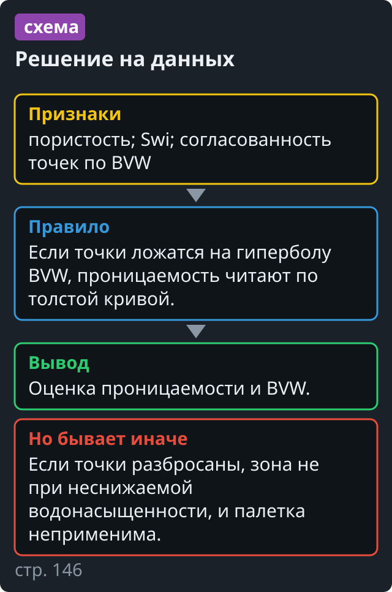
Решение на данных в шаге «Палетка проницаемости: пример»: признаки, правило, вывод. класс B · схема
Пористость и истинное сопротивление — первый шаг к оценке нефти, газа и воды в пласте. По этим оценкам решают, стоит ли заканчивать скважину. Но решение нельзя принимать только по каротажу.
Как быстро найти пласты-коллекторы
Показать ответ
Коллектора на диаграмме почти всегда меньше, чем неколлектора. Быстрый просмотр сортирует интервалы и намекает на продуктивные и водоносные зоны. В песчаниках начинают с сопротивления, в карбонатах — с пористости.
Сколько воды в порах пласта
Показать ответ
Водонасыщенность нетронутой зоны считают по формуле Арчи из сопротивлений и пористости. Это самая фундаментальная величина интерпретации. Но одной её мало для оценки продуктивности.
Сколько воды у стенки скважины
Показать ответ
Sxo считают по той же формуле Арчи, заменив Rw на Rmf и Rt на Rxo. Если Sxo много больше Sw, углеводороды, вероятно, вытеснены фильтратом. Значит, они подвижны.
Подвижность нефти без пористости
Показать ответ
Если поделить формулу Арчи для нетронутой зоны на формулу для промытой, пористость сокращается. Отношение Sw/Sxo — индекс подвижных углеводородов. Меньше 0.7 в песчаниках или 0.6 в карбонатах — признак подвижной нефти.
Водонасыщенность по отношению сопротивлений
Показать ответ
Нужно знать Sxo; при умеренном проникновении обычно берут Sxo = Sw^(1/2). Тогда Swr — отношение сопротивлений в степени 0.625. Сравнение Swa и Swr проверяет допущения.
Что значит расхождение двух Sw
Показать ответ
Если Swa больше Swr, отношение Rxo/Rt занижено, и Swa считают хорошим значением. Если Swa меньше Swr, отношение завышено; тогда Sw уточняют поправочной формулой. Меньшее Swa бывает и в карбонатах с моульдовой пористостью.
Быстрые флажки на нефть
Показать ответ
Экспресс-методы дают флажки — указатели возможных зон с углеводородами. Такие зоны требуют дальнейшего изучения. Разобраны четыре метода.
Отношение Rxo/Rt рядом с ПС
Показать ответ
Rxo/Rt рисуют в той же дорожке, что ПС. В воде отношение повторяет ПС. В зоне с углеводородами оно уходит от ПС.
Почему Rxo/Rt похоже на ПС
Показать ответ
ПС зависит от логарифма Rmf/Rw. В водоносном пласте это то же, что Rxo/Ro, а Ro — частный случай Rt. Углеводороды повышают Rt, и отношение уходит от ПС.
Кажущееся сопротивление воды
Показать ответ
Rwa считают из пористости и Rt. Наименьшее Rwa в пористом проницаемом пласте ближе всего к Rw. Rwa выше минимума — вероятно, есть углеводороды.
Откуда берётся формула Rwa
Показать ответ
Rw выражают из Ro и пористости. Если вместо Ro подставить Rt, получают Rwa. В воде Rwa равно Rw, а с углеводородами — больше.
Водонасыщенность по двум Rwa
Показать ответ
Sw равна квадратному корню из отношения минимального Rwa к Rwa зоны. Для быстрого просмотра есть готовые соответствия: 3 даёт 0.58, 4 — 0.50, 5 — 0.45.
Пористость по сопротивлению
Показать ответ
Пористость считают по формуле Арчи, принимая Sw = 1. В водоносной зоне она примерно равна истинной пористости. В зоне с углеводородами она ниже истинной.
Почему нефть занижает такую пористость
Показать ответ
Формулу Арчи решают для пористости и подставляют Sw = 1. В водоносном пласте результат близок к истинной пористости. Углеводороды повышают Rt, и пористость выходит меньше.
Сопротивление, если бы была вода
Показать ответ
Ro считают из пористости и Rw и накладывают на кривую сопротивления. В воде кривые совпадают. В зоне с углеводородами глубокое сопротивление выше Ro.
Объём воды и безводная добыча
Показать ответ
BVW — произведение водонасыщенности на пористость. Если BVW по глубинам постоянно, пласт одного типа и при неснижаемой водонасыщенности. Тогда добыча должна быть безводной.
График пористость — водонасыщенность
Показать ответ
График Бакла — пористость против Sw. Точки равного BVW лежат на гиперболах. Пласт при неснижаемой водонасыщенности даёт одну гиперболу, обводнённый — разброс.
Чем мельче зерно, тем больше воды
Показать ответ
Чем мельче зерно, тем больше воды порода держит капиллярным давлением, и тем выше BVW. Таблица 7.1 даёт диапазоны BVW для песчаников и карбонатов. Для карбонатов это лишь очень общий ориентир.
Графики вместо расчёта по Арчи
Показать ответ
Кроссплоты Пиккетта и Хингла — графические решения уравнения Арчи. Их придумали до компьютеров, чтобы меньше считать и легче сравнивать зоны. Сейчас их считают необходимой частью компьютерных систем интерпретации.
Почему на графике Пиккетта прямая
Показать ответ
Rt зависит от пористости, Sw и m. После логарифмирования уравнение Арчи для водоносной зоны — прямая в логарифмических осях. Отрезок даёт a·Rw, наклон — m.
Как читать график Пиккетта
Показать ответ
Водоносные точки лежат на прямой с наклоном −1/m. Углеводородные точки сдвинуты вправо, и сдвиг зависит от Sw. Rw и m находят по самим данным.
Подбор матрицы по прямизне линии
Показать ответ
Пиккетт откладывал не пористость, а ρb − ρma или Δt − Δtma. При верной матрице водоносная линия прямая, при неверной — изогнута. Матрицу подбирают, пока линия не станет прямой.
Линии водонасыщенности на графике
Показать ответ
Sw точки — корень степени n из Ro/Rt при той же пористости. Линии Sw строят, умножая Ro на множители таблицы 7.2. Главное допущение — параметры в сравниваемых зонах не меняются.
График Хингла: прямые на особой сетке
Показать ответ
Хингл (1959) — старейший кроссплот сопротивление — пористость. Sw по нему находят, даже если матрица и Rw неизвестны. Пористость — в линейном масштабе, сопротивление — на сетке, построенной для заданных a и m.
Как читать график Хингла
Показать ответ
Водоносные точки лежат на прямой, которая пересекает ось x при нулевой пористости. Углеводородные точки лежат ниже этой линии. Линии меньшей Sw расходятся веером от точки пересечения.
Rw и матрица по графику Хингла
Показать ответ
Rw находят по любой точке водоносной линии: Ro и пористость читают с графика, a и m принимают по сетке. Матрицу находят, продлив линию до нулевой проводимости. Для этого нужен достаточный разброс пористости.
Линии Sw на графике Хингла
Показать ответ
Sw точки находят по Rt точки и Ro линии при той же пористости. Линии Sw строят по множителям таблицы 7.2. Их проводят через точку нулевой пористости на оси x.
Пиккетт или Хингл
Показать ответ
В обычном анализе многие выбирают один кроссплот по привычке или опыту. Бассиони предлагает итерационную методику с обоими графиками, когда матрица и m неизвестны. Плюсы и ограничения сведены в таблицу 7.3.
Сильные и слабые стороны кроссплотов
Показать ответ
Пиккетт даёт Sw без знания Rw, a и m, но требует принять матрицу. Хингл даёт Sw без Rw и матрицы, но требует принять a и m. Обоим нужен широкий диапазон пористости и постоянные литология и Rw.
Данные примера для кроссплотов
Показать ответ
Таблица 7.4 — десять зон песчаника Morrow, округ Cimarron, Оклахома. Для каждой даны глубина, ρb, плотностная пористость и Rt. По ним построены рисунки 7.4 и 7.7.
Когда проницаемости по каротажу верить
Показать ответ
Формулы проницаемости по каротажу верны только при неснижаемой водонасыщенности. Проверяют это по постоянству BVW. Значения сравнивают с соседними добывающими скважинами, а не берут как абсолютные.
Простые формулы проницаемости
Показать ответ
Уайли и Роуз дают формулу с разными константами для нефти средней плотности и сухого газа. Тимур даёт формулу с пористостью в степени 2.2. Обе используют Swirr.
Проницаемость с учётом плотности нефти
Показать ответ
Формула Коутса — Думануара сложнее: плотность углеводородов входит в неё явно. Сначала считают константы C и W. Потом из них, пористости и Rw/Rt irr получают K.
Почему глина ломает формулу Арчи
Показать ответ
Вскоре после Арчи стало ясно, что метод ограничен в глинистых песчаниках. Сначала уравнение правили через объём глин. Модели Ваксмана — Смитса и двойной воды используют электрические свойства глинистых минералов.
Как глина путает нефть с водой
Показать ответ
Глина искажает Sw и пористость, причём не только в песчаниках. Главное — она уменьшает контраст сопротивления между углеводородами и водой. Переоценка глин может сделать водоносную зону похожей на продуктивную.
Подписи к схеме просмотра
Показать ответ
Рисунок 7.1 — блок-схема поиска интересных зон, продуктивных и водоносных. В сочетании с экспресс-методом нейтрон-плотность она помогает определить литологию. Сноски предупреждают: похожие на глину зоны и низкоомные глинистые зоны могут быть продуктивными.
Схема всей интерпретации
Показать ответ
Слева — источники сырых данных: каротаж и другие данные скважины. В центре — величины, полученные из них. Справа — итоговые величины; пористость и объём глин можно получить несколькими путями.
Три скважины на графике Бакла
Показать ответ
Добыча воды влияет на экономику, поэтому важно знать BVW. Скважина с BVW 0.04–0.05 даёт 96% нефти. Скважина с разбросом BVW даёт только воду.
Пример: Rw по графику Пиккетта
Показать ответ
Водоносную линию провели с наклоном −1/2, то есть m = 2. При пористости 10% сопротивление линии 4.6 ohm-m. Отсюда Rw = 0.046 ohm-m при пластовой температуре.
Пример: Sw точки на графике Пиккетта
Показать ответ
Линии Sw строят, умножая Ro на множители таблицы 7.2. Для Sw = 50% при Ro = 4.6 и множителе 4 пересечение 18.4. Sw точки с Rt 40 ohm-m считают по формуле при Ro = 0.80.
Готовые сетки Хингла
Показать ответ
Рисунок 7.5 — сетка Хингла для песчаников, ось y построена при a = 1.0 и m = 2.0. Рисунок 7.6 — для карбонатов, при a = 0.62 и m = 2.15. Обе — палетки Western Atlas 1995 года.
Пример: матрица и Rw по Хинглу
Показать ответ
Взята сетка песчаников a = 1.0, m = 2.0, по оси x — объёмная плотность. Водоносная линия пересекает ось при 2.65 g/cm³ — это плотность матрицы. При пористости 10% Ro = 4.1 ohm-m, откуда Rw = 0.041 ohm-m.
Пример: Sw точки на графике Хингла
Показать ответ
Линии Sw проводят через пересечение водоносной линии при бесконечном сопротивлении. Для Sw = 50% при Ro = 4.1 пересечение 16.4. Для точки 40 ohm-m при Ro = 0.83 получается Sw = 0.144.
Палетка проницаемости: пример
Показать ответ
Палетка: пористость против неснижаемой водонасыщенности для нефти средней плотности. При пористости 25 p.u. и Swi 40% проницаемость 130 md и BVW = 0.10. Палетка верна только при неснижаемой водонасыщенности.
Кратко
Конспект
Часть 1. Зачем интерпретировать каротаж — Быстрые флажки на нефть
Зачем интерпретировать каротаж. Пористость и истинное сопротивление — первый шаг к оценке нефти, газа и воды в пласте. По этим оценкам решают, стоит ли заканчивать скважину. Но решение нельзя принимать только по каротажу. Для данных: Количества нефти, газа и воды — оценки, выведенные из пористости и сопротивления, а не измерения.
Как быстро найти пласты-коллекторы. Коллектора на диаграмме почти всегда меньше, чем неколлектора. Быстрый просмотр сортирует интервалы и намекает на продуктивные и водоносные зоны. В песчаниках начинают с сопротивления, в карбонатах — с пористости. Для данных: В песчаниках сигнал — отклонение сопротивления от фона глин, в карбонатах первичен фильтр по пористости.
Сколько воды в порах пласта. Водонасыщенность нетронутой зоны считают по формуле Арчи из сопротивлений и пористости. Это самая фундаментальная величина интерпретации. Но одной её мало для оценки продуктивности. Для данных: Sw — расчётная кривая из Rt, Rw, пористости и констант a, m, n.
Сколько воды у стенки скважины. Sxo считают по той же формуле Арчи, заменив Rw на Rmf и Rt на Rxo. Если Sxo много больше Sw, углеводороды, вероятно, вытеснены фильтратом. Значит, они подвижны. Для данных: Sxo — расчётная кривая из Rxo и Rmf; её сравнение с Sw даёт признак подвижности.
Подвижность нефти без пористости. Если поделить формулу Арчи для нетронутой зоны на формулу для промытой, пористость сокращается. Отношение Sw/Sxo — индекс подвижных углеводородов. Меньше 0.7 в песчаниках или 0.6 в карбонатах — признак подвижной нефти. Для данных: Индекс Sw/Sxo считается только из четырёх сопротивлений, без кривой пористости.
Водонасыщенность по отношению сопротивлений. Нужно знать Sxo; при умеренном проникновении обычно берут Sxo = Sw^(1/2). Тогда Swr — отношение сопротивлений в степени 0.625. Сравнение Swa и Swr проверяет допущения. Для данных: Swr считается из четырёх сопротивлений без пористости, Swa — по Арчи с пористостью.
Что значит расхождение двух Sw. Если Swa больше Swr, отношение Rxo/Rt занижено, и Swa считают хорошим значением. Если Swa меньше Swr, отношение завышено; тогда Sw уточняют поправочной формулой. Меньшее Swa бывает и в карбонатах с моульдовой пористостью. Для данных: Знак разности Swa − Swr указывает, какое сопротивление вероятно искажено и какой профиль проникновения.
Быстрые флажки на нефть. Экспресс-методы дают флажки — указатели возможных зон с углеводородами. Такие зоны требуют дальнейшего изучения. Разобраны четыре метода. Для данных: Экспресс-методы дают бинарные или сравнительные флажки по глубине.
Часть 2. Отношение Rxo/Rt рядом с ПС — Сопротивление, если бы была вода
Отношение Rxo/Rt рядом с ПС. Rxo/Rt рисуют в той же дорожке, что ПС. В воде отношение повторяет ПС. В зоне с углеводородами оно уходит от ПС. Для данных: Признак — расхождение двух кривых в одной дорожке: Rxo/Rt и ПС.
Почему Rxo/Rt похоже на ПС. ПС зависит от логарифма Rmf/Rw. В водоносном пласте это то же, что Rxo/Ro, а Ro — частный случай Rt. Углеводороды повышают Rt, и отношение уходит от ПС. Для данных: ПС отвечает на соотношение вод, а Rxo/Rt — ещё и на углеводороды; расхождение и есть сигнал.
Кажущееся сопротивление воды. Rwa считают из пористости и Rt. Наименьшее Rwa в пористом проницаемом пласте ближе всего к Rw. Rwa выше минимума — вероятно, есть углеводороды. Для данных: Rwa — расчётная кривая; минимум по пористым проницаемым зонам служит оценкой Rw.
Откуда берётся формула Rwa. Rw выражают из Ro и пористости. Если вместо Ro подставить Rt, получают Rwa. В воде Rwa равно Rw, а с углеводородами — больше. Для данных: Rwa = Rt·φ^m/a — та же формула для Rw, но с Rt вместо Ro.
Водонасыщенность по двум Rwa. Sw равна квадратному корню из отношения минимального Rwa к Rwa зоны. Для быстрого просмотра есть готовые соответствия: 3 даёт 0.58, 4 — 0.50, 5 — 0.45. Для данных: Sw по Rwa считается из отношения двух значений одной кривой, без отдельного Rw.
Пористость по сопротивлению. Пористость считают по формуле Арчи, принимая Sw = 1. В водоносной зоне она примерно равна истинной пористости. В зоне с углеводородами она ниже истинной. Для данных: Пористость по сопротивлению — расчётная кривая при допущении Sw = 1; её сравнивают с измеренной пористостью.
Почему нефть занижает такую пористость. Формулу Арчи решают для пористости и подставляют Sw = 1. В водоносном пласте результат близок к истинной пористости. Углеводороды повышают Rt, и пористость выходит меньше. Для данных: Низкая пористость по сопротивлению при нормальной измеренной пористости — признак углеводородов, а не плотной породы.
Сопротивление, если бы была вода. Ro считают из пористости и Rw и накладывают на кривую сопротивления. В воде кривые совпадают. В зоне с углеводородами глубокое сопротивление выше Ro. Для данных: Признак — превышение глубокого сопротивления над расчётной кривой Ro в одном масштабе.
Часть 3. Объём воды и безводная добыча — Линии водонасыщенности на графике
Объём воды и безводная добыча. BVW — произведение водонасыщенности на пористость. Если BVW по глубинам постоянно, пласт одного типа и при неснижаемой водонасыщенности. Тогда добыча должна быть безводной. Для данных: BVW — расчётная кривая Sw·φ; её постоянство по глубине — признак неснижаемой водонасыщенности.
График пористость — водонасыщенность. График Бакла — пористость против Sw. Точки равного BVW лежат на гиперболах. Пласт при неснижаемой водонасыщенности даёт одну гиперболу, обводнённый — разброс. Для данных: На графике пористость — Sw линии равного BVW — гиперболы; кучность точек вдоль одной — признак безводной добычи.
Чем мельче зерно, тем больше воды. Чем мельче зерно, тем больше воды порода держит капиллярным давлением, и тем выше BVW. Таблица 7.1 даёт диапазоны BVW для песчаников и карбонатов. Для карбонатов это лишь очень общий ориентир. Для данных: Ожидаемое BVW при неснижаемой водонасыщенности зависит от размера зерна и литологии.
Графики вместо расчёта по Арчи. Кроссплоты Пиккетта и Хингла — графические решения уравнения Арчи. Их придумали до компьютеров, чтобы меньше считать и легче сравнивать зоны. Сейчас их считают необходимой частью компьютерных систем интерпретации. Для данных: Кроссплот — это визуальное решение формулы Арчи по многим точкам сразу.
Почему на графике Пиккетта прямая. Rt зависит от пористости, Sw и m. После логарифмирования уравнение Арчи для водоносной зоны — прямая в логарифмических осях. Отрезок даёт a·Rw, наклон — m. Для данных: В логарифмах водоносные точки ложатся на прямую: отрезок — a·Rw, наклон — m.
Как читать график Пиккетта. Водоносные точки лежат на прямой с наклоном −1/m. Углеводородные точки сдвинуты вправо, и сдвиг зависит от Sw. Rw и m находят по самим данным. Для данных: Rw и m оценивают по самим данным каротажа: линия по водоносным точкам.
Подбор матрицы по прямизне линии. Пиккетт откладывал не пористость, а ρb − ρma или Δt − Δtma. При верной матрице водоносная линия прямая, при неверной — изогнута. Матрицу подбирают, пока линия не станет прямой. Для данных: Изгиб водоносной линии — диагностика неверной матрицы.
Линии водонасыщенности на графике. Sw точки — корень степени n из Ro/Rt при той же пористости. Линии Sw строят, умножая Ro на множители таблицы 7.2. Главное допущение — параметры в сравниваемых зонах не меняются. Для данных: Sw точки читают по отношению Ro/Rt при одной пористости.
Часть 4. График Хингла: прямые на особой сетке — Когда проницаемости по каротажу верить
График Хингла: прямые на особой сетке. Хингл (1959) — старейший кроссплот сопротивление — пористость. Sw по нему находят, даже если матрица и Rw неизвестны. Пористость — в линейном масштабе, сопротивление — на сетке, построенной для заданных a и m. Для данных: Сетка Хингла — нелинейная шкала сопротивления, рассчитанная под a и m.
Как читать график Хингла. Водоносные точки лежат на прямой, которая пересекает ось x при нулевой пористости. Углеводородные точки лежат ниже этой линии. Линии меньшей Sw расходятся веером от точки пересечения. Для данных: На графике Хингла признак углеводородов — точка ниже водоносной линии.
Rw и матрица по графику Хингла. Rw находят по любой точке водоносной линии: Ro и пористость читают с графика, a и m принимают по сетке. Матрицу находят, продлив линию до нулевой проводимости. Для этого нужен достаточный разброс пористости. Для данных: Rw по Хинглу считается из точки линии и a, m, принятых сеткой.
Линии Sw на графике Хингла. Sw точки находят по Rt точки и Ro линии при той же пористости. Линии Sw строят по множителям таблицы 7.2. Их проводят через точку нулевой пористости на оси x. Для данных: Те же множители таблицы 7.2 дают и параллельные линии Пиккетта, и веер Хингла.
Пиккетт или Хингл. В обычном анализе многие выбирают один кроссплот по привычке или опыту. Бассиони предлагает итерационную методику с обоими графиками, когда матрица и m неизвестны. Плюсы и ограничения сведены в таблицу 7.3. Для данных: Два графика по одним данным дают два независимых взгляда на матрицу и m.
Сильные и слабые стороны кроссплотов. Пиккетт даёт Sw без знания Rw, a и m, но требует принять матрицу. Хингл даёт Sw без Rw и матрицы, но требует принять a и m. Обоим нужен широкий диапазон пористости и постоянные литология и Rw. Для данных: Каждый кроссплот переносит неизвестное в допущение: Пиккетт — матрицу, Хингл — a и m.
Данные примера для кроссплотов. Таблица 7.4 — десять зон песчаника Morrow, округ Cimarron, Оклахома. Для каждой даны глубина, ρb, плотностная пористость и Rt. По ним построены рисунки 7.4 и 7.7. Для данных: У зон 7–10 одинаковая пористость 0.212, а Rt различается в десятки раз.
Когда проницаемости по каротажу верить. Формулы проницаемости по каротажу верны только при неснижаемой водонасыщенности. Проверяют это по постоянству BVW. Значения сравнивают с соседними добывающими скважинами, а не берут как абсолютные. Для данных: Проницаемость по каротажу — выведенная величина, верная только при неснижаемой водонасыщенности.
Часть 5. Простые формулы проницаемости — Пример: Rw по графику Пиккетта
Простые формулы проницаемости. Уайли и Роуз дают формулу с разными константами для нефти средней плотности и сухого газа. Тимур даёт формулу с пористостью в степени 2.2. Обе используют Swirr. Для данных: Проницаемость в этих формулах растёт как пористость в степени, а не линейно.
Проницаемость с учётом плотности нефти. Формула Коутса — Думануара сложнее: плотность углеводородов входит в неё явно. Сначала считают константы C и W. Потом из них, пористости и Rw/Rt irr получают K. Для данных: Проницаемость по Коутсу — Думануару зависит от плотности углеводородов, пористости и отношения Rw/Rt irr.
Почему глина ломает формулу Арчи. Вскоре после Арчи стало ясно, что метод ограничен в глинистых песчаниках. Сначала уравнение правили через объём глин. Модели Ваксмана — Смитса и двойной воды используют электрические свойства глинистых минералов. Для данных: Объём глин и объём глинистых минералов в данных часто смешаны, хотя это разные величины.
Как глина путает нефть с водой. Глина искажает Sw и пористость, причём не только в песчаниках. Главное — она уменьшает контраст сопротивления между углеводородами и водой. Переоценка глин может сделать водоносную зону похожей на продуктивную. Для данных: Глина уменьшает разницу сопротивлений нефти и воды, и признаки углеводородов слабеют.
Подписи к схеме просмотра. Рисунок 7.1 — блок-схема поиска интересных зон, продуктивных и водоносных. В сочетании с экспресс-методом нейтрон-плотность она помогает определить литологию. Сноски предупреждают: похожие на глину зоны и низкоомные глинистые зоны могут быть продуктивными. Для данных: Обзорный фильтр полезно дополнять кроссплотом нейтрон-плотность для литологии.
Схема всей интерпретации. Слева — источники сырых данных: каротаж и другие данные скважины. В центре — величины, полученные из них. Справа — итоговые величины; пористость и объём глин можно получить несколькими путями. Для данных: Интерпретация — граф: сырые кривые → промежуточные величины → итоговые величины.
Три скважины на графике Бакла. Добыча воды влияет на экономику, поэтому важно знать BVW. Скважина с BVW 0.04–0.05 даёт 96% нефти. Скважина с разбросом BVW даёт только воду. Для данных: Кучность BVW вдоль гиперболы согласуется с долей нефти в добыче: 96%, 68% и одна вода.
Пример: Rw по графику Пиккетта. Водоносную линию провели с наклоном −1/2, то есть m = 2. При пористости 10% сопротивление линии 4.6 ohm-m. Отсюда Rw = 0.046 ohm-m при пластовой температуре. Для данных: Rw выведено из точки водоносной линии, принятого a и m по наклону.
Часть 6. Пример: Sw точки на графике Пиккетта — Палетка проницаемости: пример
Пример: Sw точки на графике Пиккетта. Линии Sw строят, умножая Ro на множители таблицы 7.2. Для Sw = 50% при Ro = 4.6 и множителе 4 пересечение 18.4. Sw точки с Rt 40 ohm-m считают по формуле при Ro = 0.80. Для данных: Sw точки — корень из Ro/Rt при одинаковой пористости и n = 2.0, здесь из 0.8/40.
Готовые сетки Хингла. Рисунок 7.5 — сетка Хингла для песчаников, ось y построена при a = 1.0 и m = 2.0. Рисунок 7.6 — для карбонатов, при a = 0.62 и m = 2.15. Обе — палетки Western Atlas 1995 года. Для данных: Каждая сетка зашивает свою пару a и m.
Пример: матрица и Rw по Хинглу. Взята сетка песчаников a = 1.0, m = 2.0, по оси x — объёмная плотность. Водоносная линия пересекает ось при 2.65 g/cm³ — это плотность матрицы. При пористости 10% Ro = 4.1 ohm-m, откуда Rw = 0.041 ohm-m. Для данных: По тем же данным Хингл дал Rw = 0.041 ohm-m, а Пиккетт — немного большее значение.
Пример: Sw точки на графике Хингла. Линии Sw проводят через пересечение водоносной линии при бесконечном сопротивлении. Для Sw = 50% при Ro = 4.1 пересечение 16.4. Для точки 40 ohm-m при Ro = 0.83 получается Sw = 0.144. Для данных: Sw точки по Хинглу 0.144; оценка по Пиккетту близка к ней.
Палетка проницаемости: пример. Палетка: пористость против неснижаемой водонасыщенности для нефти средней плотности. При пористости 25 p.u. и Swi 40% проницаемость 130 md и BVW = 0.10. Палетка верна только при неснижаемой водонасыщенности. Для данных: Проницаемость по палетке зависит и от пористости, и от Swi: 25 p.u. и 40% дают 130 md.